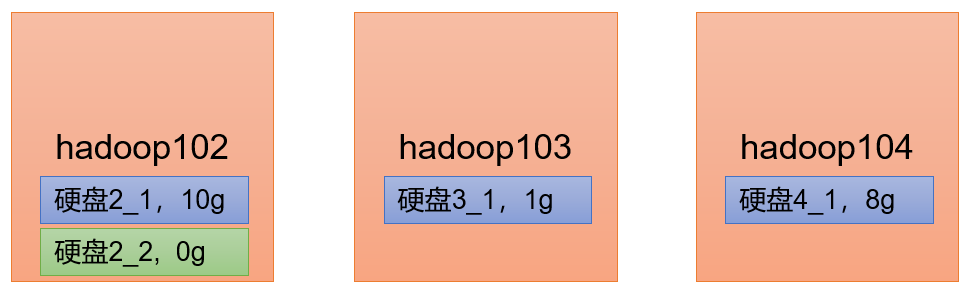
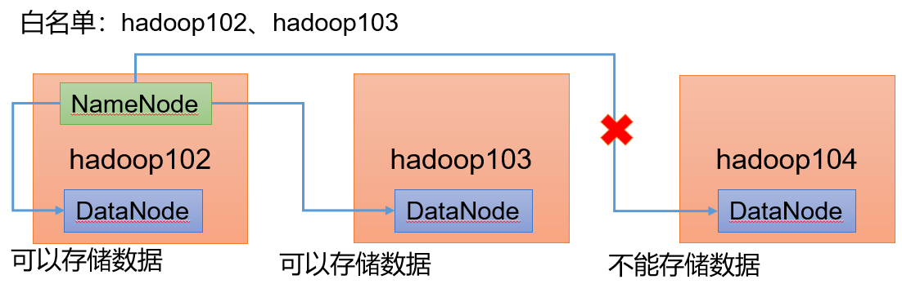
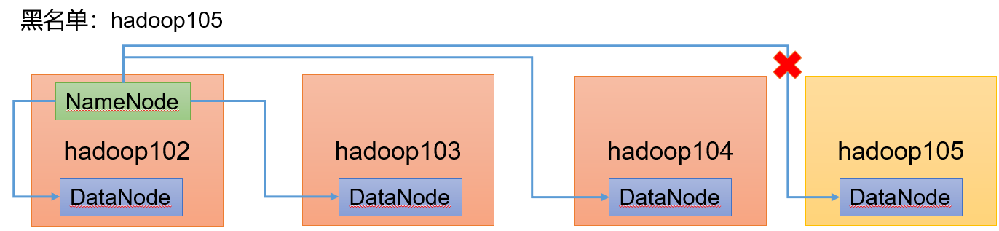

1. 大数据概论
1.1 大数据概念
- 大数据（Big Data）：指无法在一定时间范围内用常规软件工具进行捕捉、管理和处理的数据集合，是需要新处理模式才能具有更强的决策力、洞察发现力和流程优化能力的海量、高增长率和多样化的信息资产
- 大数据主要解决，海量数据的采集、存储和分析计算问题
- 按顺序给出数据存储单位：bit、Byte、KB、MB、GB、TB、PB、EB、ZB、YB、BB、NB、DB。1Byte = 8bit 1K = 1024Byte 1MB = 1024K 1G = 1024M 1T = 1024G 1P = 1024T
1.2 大数据的特点
Volume（大量）
截至目前，人类生产的所有印刷材料的数据量是200PB，而历史上全人类总共说过的话的数据量大约是5EB。当前，典型个人计算机硬盘的容量为TB量级，而一些大企业的数据量已经接近EB量级
Velocity（高速）
这是大数据区分于传统数据挖掘的最显著特征。根据IDC的“数字宇宙”的报告，预计到2025年，全球数据使用量将达到163ZB。在如此海量的数据面前，处理数据的效率就是企业的生命。天猫双十一：2017年3分01秒，天猫交易额超过100亿；2020年96秒，天猫交易额超过100亿
Variety（多样）
这种类型的多样性也让数据被分为结构化数据和非结构化数据。相对于以往便于存储的以数据库/文本为主的结构化数据，非结构化数据越来越多，包括网络日志、音频、视频、图片、地理位置信息等，这些多类型的数据对数据的处理能力提出了更高要求
Value（低价值密度）
价值密度的高低与数据总量的大小成反比
1.3 大数据应用场景
- 短视频平台
- 电商站内广告推荐：给用户推荐可能喜欢的商品
- 零售：分析用户消费习惯，为用户购买商品提供方便，从而提升商品销量。 经典案例，纸尿布+啤酒
- 物流仓储：京东物流，上午下单下午送达、下午下单次日上午送达
- 保险：海量数据挖掘及风险预测，助力保险行业精准营销，提升精细化定价能力
- 金融：多维度体现用户特征，帮助金融机构，推荐优质客户，防范欺诈风险
- 房产：大数据全面助力房地产行业，打造精准投策与营销，选出更合适的地，建造更合适的楼，卖给更合适的人
- 人工智能+ 5G + 物联网+ 虚拟与现实

2. Hadoop入门
2.1 Hadoop概念
Hadoop是什么
Hadoop是一个由Apache基金会所开发的分布式系统基础架构
主要解决，海量数据的存储和海量数据的分析计算问题
广义上来说，Hadoop通常是指一个更广泛的概念——Hadoop生态圈

Hadoop发展历史
- Hadoop创始人Doug Cutting，为了实现与Google类似的全文搜索功能，他在Lucene框架基础上进行优化升级，查询引擎和索引引擎
- 2001年年底Lucene成为Apache基金会的一个子项目
- 对于海量数据的场景，Lucene框架面对与Google同样的困难，存储海量数据困难，检索海量速度慢
- 学习和模仿Google解决这些问题的办法：微型版Nutch
- 可以说Google是Hadoop的思想之源（Google在大数据方面的三篇论文）：GFS --->HDFS，Map-Reduce --->MR，BigTable --->HBase
- 2003-2004年，Google公开了部分GFS和MapReduce思想的细节，以此为基础Doug Cutting等人用了2年业余时间实现了DFS和MapReduce机制，使Nutch性能飙升
- 2005 年Hadoop 作为Lucene的子项目Nutch的一部分正式引入Apache基金会
- 2006 年3 月份，Map-Reduce和Nutch Distributed File System （NDFS）分别被纳入到Hadoop 项目中，Hadoop就此正式诞生，标志着大数据时代来临
- 名字来源于Doug Cutting儿子的玩具大象
Hadoop 三大发行版本：Apache、Cloudera、Hortonworks。
Apache 版本最原始（最基础）的版本，对于入门学习最好。2006
官网地址：http://hadoop.apache.org 下载地址：https://hadoop.apache.org/releases.html
Cloudera 内部集成了很多大数据框架，对应产品CDH。2008
官网地址：https://www.cloudera.com/downloads/cdh 下载地址：https://docs.cloudera.com/documentation/enterprise/6/release-notes/topics/rg_cdh_6_download.html
Hortonworks 文档较好，对应产品HDP。2011
Hortonworks 现在已经被Cloudera 公司收购，推出新的品牌CDP
官网地址：https://hortonworks.com/products/data-center/hdp/ 下载地址：https://hortonworks.com/downloads/#data-platform
Hadoop 优势（4 高）
高可靠性：Hadoop底层维护多个数据副本，所以即使Hadoop某个计算元素或存储出现故障，也不会导致数据的丢失

高扩展性：在集群间分配任务数据，可方便的扩展数以千计的节点

高效性：在MapReduce的思想下，Hadoop是并行工作的，以加快任务处理速度

高容错性：能够自动将失败的任务重新分配

Hadoop 组成（面试重点）
Hadoop1.x、2.x、3.x区别
在Hadoop1.x 时代，Hadoop中的MapReduce同时处理业务逻辑运算和资源的调度，耦合性较大
在Hadoop2.x时代，增加了Yarn。Yarn只负责资源的调度，MapReduce 只负责运算
Hadoop3.x在组成上没有变化

HDFS 架构概述
Hadoop Distributed File System，简称HDFS，是一个分布式文件系统
架构组件：
NameNode（nn）：存储文件的元数据，如文件名，文件目录结构，文件属性（生成时间、副本数、文件权限），以及每个文件的块列表和块所在的DataNode等
DataNode(dn)：在本地文件系统存储文件块数据，以及块数据的校验和
Secondary NameNode(2nn)：每隔一段时间对NameNode元数据备份

YARN 架构概述
Yet Another Resource Negotiator 简称YARN ，另一种资源协调者，是Hadoop 的资源管理器
架构组件：
ResourceManager（RM）：整个集群资源（内存、CPU等）的老大
ApplicationMaster（AM）：单个任务运行的老大
NodeManager（NM）：单个节点服务器资源老大
Container：容器，相当一台独立的服务器，里面封装了任务运行所需要的资源，如内存、CPU、磁盘、网络等

MapReduce 架构概述
MapReduce 将计算过程分为两个阶段：Map 和Reduce
Map 阶段并行处理输入数据
Reduce 阶段对Map 结果进行汇总

HDFS、YARN、MapReduce 三者关系

大数据技术生态体系

- Sqoop：Sqoop 是一款开源的工具，主要用于在Hadoop、Hive 与传统的数据库（MySQL）间进行数据的传递，可以将一个关系型数据库（例如 ：MySQL，Oracle 等）中的数据导进到Hadoop 的HDFS中，也可以将HDFS 的数据导进到关系型数据库中
- Flume：Flume 是一个高可用的，高可靠的，分布式的海量日志采集、聚合和传输的系统，Flume 支持在日志系统中定制各类数据发送方，用于收集数据
- Kafka：Kafka 是一种高吞吐量的分布式发布订阅消息系统
- Spark：Spark 是当前最流行的开源大数据内存计算框架。可以基于Hadoop 上存储的大数据进行计算
- Flink：Flink 是当前最流行的开源大数据内存计算框架。用于实时计算的场景较多
- Oozie：Oozie 是一个管理Hadoop 作业（job）的工作流程调度管理系统
- Hbase：HBase 是一个分布式的、面向列的开源数据库。HBase 不同于一般的关系数据库，它是一个适合于非结构化数据存储的数据库
- Hive：Hive 是基于Hadoop 的一个数据仓库工具，可以将结构化的数据文件映射为一张数据库表，并提供简单的SQL 查询功能，可以将SQL 语句转换为MapReduce 任务进行运行。其优点是学习成本低，可以通过类SQL 语句快速实现简单的MapReduce 统计，不必开发专门的MapReduce 应用，十分适合数据仓库的统计分析
- ZooKeeper：它是一个针对大型分布式系统的可靠协调系统，提供的功能包括：配置维护、名字服务、分布式同步、组服务等
2.2 Hadoop运行环境搭建
模板虚拟机环境准备
安装虚拟机
安装Linux
设置静态IP地址（见Linux实操命令那篇文章中的网络配置部分）
设置主机名（见Linux实操命令那篇文章中的设置主机名和Host映射部分）
配置Linux主机名映射
x1[root ~]# vim /etc/hosts23[root ~]# cat /etc/hosts4127.0.0.1 localhost localhost.localdomain localhost4 localhost4.localdomain45::1 localhost localhost.localdomain localhost6 localhost6.localdomain667192.168.10.100 hadoop1008192.168.10.101 hadoop1019192.168.10.102 hadoop10210192.168.10.103 hadoop10311192.168.10.104 hadoop10412192.168.10.105 hadoop10513192.168.10.106 hadoop10614192.168.10.107 hadoop10715192.168.10.108 hadoop1081617[root ~]# reboot配置
hadoop100虚拟机配置要求如下：
使用yum安装
epel-release注意：
- Extra Packages for Enterprise Linux 是为“红帽系”的操作系统提供额外的软件包，适用于RHEL、CentOS 和Scientific Linux
- 相当于是一个软件仓库，大多数rpm 包在官方repository 中是找不到的
xxxxxxxxxx11[root ~]# yum install -y epel-release关闭防火墙，关闭防火墙开机自启
xxxxxxxxxx31[root ~]# systemctl stop firewalld23[root ~]# systemctl disable firewalld.service创建cool用户
xxxxxxxxxx21[root ~]# useradd cool2[root ~]# passwd cool配置cool用户具有root权限
xxxxxxxxxx11[root ~]# vim /etc/sudoers
在/opt目录下创建文件夹
xxxxxxxxxx81[root ~]# su cool2[cool root]$ cd /opt3[cool opt]$ mkdir module4mkdir: 无法创建目录"module": 权限不够5[cool opt]$ sudo mkdir module6[cool opt]$ sudo mkdir software7[cool opt]$ ls8module rh software修改两个文件夹的所有者
xxxxxxxxxx11[cool opt]$ sudo chown cool:cool module/ software/卸载现有的JDK
xxxxxxxxxx11rpm -qa | grep -i java | xargs -n1 sudo rpm -e --nodeps- rpm -qa 查询所安装的所有rpm软件包
- grep -i：忽略大小写
- xargs -n1：表示每次只传递一个参数
- rpm -e –nodeps：强制卸载软件
2.3 克隆虚拟机
利用模板机克隆三台虚拟机（先关闭模板机）
右击
修改克隆机的IP
xxxxxxxxxx91[root ~]# vim /etc/sysconfig/network-scripts/ifcfg-ens332[root ~]# vim /etc/hostname;3[root ~]# cat /etc/hostname4hadoop10256//修改主机名y方法：7[root ~]# hostnamectl set-hostname controller8[root ~]# cat /etc/hostname9controller
重启生效
检查三个克隆机之间互相可以ping通，且可以访问外网
在Xshell上建立三个虚拟机的远程登录连接
2.4 安装JDK
上传JDK文件到虚拟机Hadoop102，其他虚拟机上的复制102的即可
解压JDK安装包
xxxxxxxxxx11[root software]# tar -zxvf jdk-8u212-linux-x64.tar.gz -C /opt/module/配置Java环境变量：进入/etc/profile.d
xxxxxxxxxx241[root ~]# cd /etc/profile.d2[root profile.d]# ll3总用量 844-rw-r--r--. 1 root root 771 4月 11 2018 256term.csh5-rw-r--r--. 1 root root 841 4月 11 2018 256term.sh6-rw-r--r--. 1 root root 1348 4月 27 2018 abrt-console-notification.sh7-rw-r--r--. 1 root root 660 6月 10 2014 bash_completion.sh8-rw-r--r--. 1 root root 196 3月 25 2017 colorgrep.csh9-rw-r--r--. 1 root root 201 3月 25 2017 colorgrep.sh10-rw-r--r--. 1 root root 1741 4月 11 2018 colorls.csh11-rw-r--r--. 1 root root 1606 4月 11 2018 colorls.sh12-rw-r--r--. 1 root root 80 4月 11 2018 csh.local13-rw-r--r--. 1 root root 373 4月 11 2018 flatpak.sh14-rw-r--r--. 1 root root 1706 4月 11 2018 lang.csh15-rw-r--r--. 1 root root 2703 4月 11 2018 lang.sh16-rw-r--r--. 1 root root 123 7月 31 2015 less.csh17-rw-r--r--. 1 root root 121 7月 31 2015 less.sh18-rw-r--r--. 1 root root 1202 8月 6 2017 PackageKit.sh19-rw-r--r--. 1 root root 81 4月 11 2018 sh.local20-rw-r--r--. 1 root root 105 4月 11 2018 vim.csh21-rw-r--r--. 1 root root 269 4月 11 2018 vim.sh22-rw-r--r--. 1 root root 2092 9月 4 2017 vte.sh23-rw-r--r--. 1 root root 164 1月 28 2014 which2.csh24-rw-r--r--. 1 root root 169 1月 28 2014 which2.sh写一个自己的sh文件
xxxxxxxxxx51[root profile.d]# vim my_env.sh2[root profile.d]# cat my_env.sh3#JAVA_HOME4export JAVA_HOME=/opt/module/jdk1.8.0_2125export PATH=$PATH:$JAVA_HOME/binsource一下让变量生效
xxxxxxxxxx11[root profile.d]# source /etc/profile检查JDK是否安装好
xxxxxxxxxx71[root profile.d]# java -version2java version "1.8.0_212"3Java(TM) SE Runtime Environment (build 1.8.0_212-b10)4Java HotSpot(TM) 64-Bit Server VM (build 25.212-b10, mixed mode)56[root profile.d]# echo $JAVA_HOME7/opt/module/jdk1.8.0_212
2.5 安装Hadoop
上传Hadoop安装包到虚拟机Hadoop102，其他虚拟机上的复制102的即可
解压Hadoop安装包
xxxxxxxxxx11[root software]# tar -zxvf hadoop 3.1.3 .tar.gz -C /opt/module/配置Hadoop环境变量：
xxxxxxxxxx171[root module]# cd hadoop-3.1.3/2[root hadoop-3.1.3]# pwd3/opt/module/hadoop-3.1.345[root hadoop-3.1.3]# cd /etc/profile.d67[root profile.d]# vim my_env.sh89[root profile.d]# cat my_env.sh10#JAVA_HOME11export JAVA_HOME=/opt/module/jdk1.8.0_21212export PATH=$PATH:$JAVA_HOME/bin1314export HADOOP_HOME=/opt/module/hadoop-3.1.315export PATH=$PATH:$HADOOP_HOME/bin16export PATH=$PATH:$HADOOP_HOME/sbin17//⭐Hadoop需要配置两个环境变量source一下让变量生效
xxxxxxxxxx21[cool profile.d]$ source /etc/profile2[cool profile.d]$ hadoop检查Hadoop是否安装配置完成
xxxxxxxxxx41[cool profile.d]$ hadoop2Usage: hadoop [OPTIONS] SUBCOMMAND [SUBCOMMAND OPTIONS]3or hadoop [OPTIONS] CLASSNAME [CLASSNAME OPTIONS]4where CLASSNAME is a user-provided Java class
2.6 Hadoop的目录结构
查看Hadoop目录内容
xxxxxxxxxx131[cool module]$ cd hadoop-3.1.3/2[cool hadoop-3.1.3]$ ll3总用量 1764drwxr-xr-x. 2 qhj qhj 183 9月 12 2019 bin5drwxr-xr-x. 3 qhj qhj 20 9月 12 2019 etc6drwxr-xr-x. 2 qhj qhj 106 9月 12 2019 include7drwxr-xr-x. 3 qhj qhj 20 9月 12 2019 lib8drwxr-xr-x. 4 qhj qhj 288 9月 12 2019 libexec9-rw-rw-r--. 1 qhj qhj 147145 9月 4 2019 LICENSE.txt10-rw-rw-r--. 1 qhj qhj 21867 9月 4 2019 NOTICE.txt11-rw-rw-r--. 1 qhj qhj 1366 9月 4 2019 README.txt12drwxr-xr-x. 3 qhj qhj 4096 9月 12 2019 sbin13drwxr-xr-x. 4 qhj qhj 31 9月 12 2019 share重要目录：
bin目录：存放对 Hadoop相关服务（ hdfs yarn mapred）进行操作的脚本etc目录：Hadoop的配置文件目录，存放 Hadoop的配置文件lib目录：存放 Hadoop的本地库（对数据进行压缩解压缩功能）sbin目录：存放启动或停止 Hadoop相关服务的脚本share目录：存放 Hadoop的依赖 jar包 、文档 、和官方案例
3. Hadoop运行模式
Hadoop运行模式包括：
本地模式：
单机运行，只是用来演示一下官方案例，生产环境不用
伪分布式模式：
- 也是单机运行，但是具备Hadoop集群的所有功能，一台服务器模拟一个分布式的环境
- 个别缺钱的公司用来测试，生产环境不用
完全分布式模式：
多台服务器组成分布式环境，生产环境使用

3.1 本地运行模式
创建在 hadoop-3.1.3文件下面创建一个 wcinput文件夹
xxxxxxxxxx21[cool hadoop-3.1.3]$ mkdir wcinput2[cool hadoop-3.1.3]$ cd wcinput/在 wcinput文件下创建一个 word.txt文件，编辑 word.txt文件
xxxxxxxxxx61[cool wcinput]$ vim word.txt2[cool wcinput]$ cat word.txt3hadoop yarn4hadoop mapreduce5hadoop mapreduce6hadoop mapreduce回到 Hadoop目录 /opt/module/hadoop-3.1.3 执行程序
（注意：hadoop-3.1.3的所属组和所有者需要是当前操作的用户，不然会在创建wcoutput文件时，获取不到权限）
xxxxxxxxxx11[cool hadoop-3.1.3]$ hadoop jar share/hadoop/mapreduce/hadoop-mapreduce-examples-3.1.3.jar wordcount wcinput wcoutput产看结果
xxxxxxxxxx71[cool hadoop-3.1.3]$ cd wcoutput/2[cool wcoutput]$ ls3part-r-00000 _SUCCESS4[cool wcoutput]$ cat part-r-000005hadoop 46mapreduce 37yarn 1
3.2 ⭐完全分布式运行模式
- 准备 3台客户机（ 关闭防火墙、静态 IP、主机名称）
- 安装 JDK
- 配置环境变量
- 安装 Hadoop
- 配置环境变量
- 配置集群
- 单点启动
- 配置ssh
- 群起并测试集群
3.2.1 虚拟机准备
3.2.2 编写集群分发脚本 xsync
scp （secure copy）安全拷贝
scp定义：
scp可以实现服务器与服务器之间的数据拷贝（from server1 to server2）
基本语法：
scp -r $pdir/$fname $user@$host:$pdir/$fname命令 递归 要拷贝的文件路径/名称 目的地用户@主机:目的地路径/名称案例实操：
将hadoop102上的JDK拷贝到hadoop103上
xxxxxxxxxx11[cool module]$ scp -r jdk1.8.0_212/ cool:/opt/module/在hadoop103上拉取hadoop102上的Hadoop
xxxxxxxxxx11[cool module]$ scp -r cool:/opt/module/hadoop-3.1.3 ./结果：
xxxxxxxxxx21[cool module]$ ls2hadoop-3.1.3 jdk1.8.0_212在hadoop103上拉取hadoop102上的module下的所有文件，放到hadoop104上
xxxxxxxxxx11[cool module]$ scp -r cool:/opt/module/* cool@hadoop104:/opt/module/结果：
xxxxxxxxxx41[cool module]$ ll2总用量 03drwxr-xr-x. 11 cool cool 180 7月 16 19:22 hadoop-3.1.34drwxr-xr-x. 7 cool cool 245 7月 16 19:22 jdk1.8.0_212
rsync远程同步工具
rsync主要用于备份和镜像。具有速度快、避免复制相同内容和支持符号链接的优点
rsync和 scp区别： 用 rsync做文件的复制要比 scp的速度快，rsync只对差异部分做更新； scp是把所有文件都复制过去
基本语法：
rsync -av $pdir/$fname $user@$host:$pdir/$fname命令 选项参数 要拷贝的文件路径/名称 目的地用户@主机:目的地路径/名称参数选项：
- -a：归档拷贝
- -v：显示复制过程
案例实操：
删除hadoop103中 /opt/module/hadoop-3.1.3/wcoutput
xxxxxxxxxx11[cool hadoop-3.1.3]$ rm -rf wcoutput/同步hadoop102中的 /opt/module/hadoop-3.1.3到 hadoop103
xxxxxxxxxx11[cool module]$ rsync -av hadoop-3.1.3/ cool:/opt/module/hadoop-3.1.3/结果：wcoutput又回来了，且同步的速度要比复制全部文件更快
xxxxxxxxxx31[cool hadoop-3.1.3]$ ls2bin include libexec NOTICE.txt sbin wcoutput3etc lib LICENSE.txt README.txt share
xsync集群分发脚本
需求 循环复制文件到所有节点的相同目录下
需求 分析：
- rsync命令原始拷贝：
rsync -av /opt/module atguigu @hadoop103:/opt/ - 期望实现一个自定义脚本xsync
xsync 要同步的文件名称 - 且期望脚本xsync，在任何路径都能使用 （需要将脚本放在声明全局环境变量的路径）
- rsync命令原始拷贝：
实现步骤：
查看当前的所有全局环境变量
xxxxxxxxxx21[cool ~]$ echo $PATH2/usr/local/bin:/usr/bin:/usr/local/sbin:/usr/sbin:/opt/module/jdk1.8.0_212/bin:/opt/module/hadoop-3.1.3/bin:/opt/module/hadoop-3.1.3/sbin:/home/cool/.local/bin:/home/cool/bin创建/home/cool/bin目录，并创建文件xsync
xxxxxxxxxx321[cool ~]$ mkdir /home/cool/bin/2[cool ~]$ cd /home/cool/bin/3[cool bin]$ vim xsync4[root bin]# cat xsync5#!/bin/bash6#1. 判断参数个数7if [ $# -lt 1 ]8then9echo Not Enough Arguement!10exit;11fi12#2. 遍历集群所有机器13for host in hadoop102 hadoop103 hadoop10414do15echo ==================== $host ====================16#3. 遍历所有目录，挨个发送17for file in $18do19#4 判断文件是否存在20if [ -e $file ]21then22#5. 获取父目录23pdir=$(cd -P $(dirname $file); pwd)24#6. 获取当前文件的名称25fname=$(basename $file)26ssh $host "mkdir -p $pdir"27rsync -av $pdir/$fname $host:$pdir28else29echo $file does not exists!30fi31done32done给xsync文件执行权限：
xxxxxxxxxx31[cool bin]$ chmod +x xsync2[cool bin]$ ls3xsync测试是否可以使用：
当前我们只在hadoop102上创建了/home/cool/bin目录，现在要使用刚刚写的脚本，将hadoop103和hadoop104上也同步拥有/home/cool/bin目录
xxxxxxxxxx221[cool bin]$ xsync /home/cool/bin2==================== hadoop102 ====================3cool's password:4cool's password:5sending incremental file list67sent 84 bytes received 17 bytes 28.86 bytes/sec8total size is 623 speedup is 6.179==================== hadoop103 ====================10cool's password:11cool's password:12sending incremental file list1314sent 84 bytes received 17 bytes 28.86 bytes/sec15total size is 623 speedup is 6.1716==================== hadoop104 ====================17cool's password:18cool's password:19sending incremental file list2021sent 84 bytes received 17 bytes 40.40 bytes/sec22total size is 623 speedup is 6.17执行后，另外两个虚拟机上也有了/home/cool/bin目录
xxxxxxxxxx31[cool /]$ cd /home/cool/bin2[cool bin]$ ls3xsync存在的问题：
当前我们定义的命令只存在/home/cool/bin目录下，故只有在当前目录下使用才有效
解决：需要将其放入/bin目录下，以便全局调用
xxxxxxxxxx11[cool bin]$ sudo cp xsync /bin/
此时只有在hadoop102上配置了JDK和Hadoop的环境变量，现在使用xsync命令将环境变量文件，分发同步给另外两台虚拟机
xxxxxxxxxx11[cool bin]$ sudo ./bin/xsync /etc/profile.d/my_env.shJava和Hadoop的环境配置文件已经同步到其他两个主机
xxxxxxxxxx91[cool /]$ cd etc/profile.d/2[cool profile.d]$ cat my_env.sh3#JAVA_HOME4export JAVA_HOME=/opt/module/jdk1.8.0_2125export PATH=$PATH:$JAVA_HOME/bin67export HADOOP_HOME=/opt/module/hadoop-3.1.38export PATH=$PATH:$HADOOP_HOME/bin9export PATH=$PATH:$HADOOP_HOME/sbin让环境变量生效
xxxxxxxxxx21[cool profile.d]$ source /etc/profile2[cool profile.d]$ source /etc/profile此时在其他主机上也可以直接使用Java命令
xxxxxxxxxx41[cool ~]$ java -version2java version "1.8.0_212"3Java(TM) SE Runtime Environment (build 1.8.0_212-b10)4Java HotSpot(TM) 64-Bit Server VM (build 25.212-b10, mixed mode)
3.2.3 SSH无密登录

进入家目录下的用户目录
xxxxxxxxxx11[cool ~]$ cd /home/cool生成公钥和私钥
xxxxxxxxxx11[cool ~] ssh-keygen -t rsa此时在/home/cool/.ssh下生成了公钥和私钥两个文件
xxxxxxxxxx21[cool .ssh]$ ls2id_rsa id_rsa.pub known_hosts将公钥拷贝到要免密登录的目标机器上
xxxxxxxxxx31[cool ~]$ ssh-copy-id hadoop1022[cool ~]$ ssh-copy-id hadoop1033[cool ~]$ ssh-copy-id hadoop104查看拷贝过来的公钥
xxxxxxxxxx21[cool .ssh]$ ls2authorized_keys known_hosts此时hadoop102可以免密登录到hadoop103、hadoop104上，以及自己
xxxxxxxxxx31[cool ~]$ ssh hadoop1032Last login: Mon Jul 19 14:11:20 2021 from hadoop1023[cool ~]$重复上面的操作，将三台机器可以任意免密登录其他机器
/home/cool/.ssh目录下的文件功能解释
known_hosts：记录ssh访问过计算机的公钥public keyid_rsa：生成的私钥id_rsa.pub：生成的公钥authorized_keys：存放授权过的无密登录服务器公钥
3.2.4 集群配置
集群部署规划：
hadoop102 hadoop103 hadoop104 HDFS NameNode DataNode DataNode SecondaryNameNode DataNode YARN NodeManager ResourceManager NodeManager NodeManager 注意：
- NameNode和 SecondaryNameNode不要安装在同一台服务器
- ResourceManager也很消耗内存，不要和 NameNode、SecondaryNameNode配置在同一台机器上
配置文件说明：
Hadoop配置文件分两类：默认配置文件和自定义配置文件，只有用户想修改某一默认配置值时，才需要修改自定义配置文件，更改相应属性值
默认配置文件：
默认文件 文件存放在Hadoop的 jar包中的位置 [core-default.xml] hadoop-common-3.1.3.jar/core-default.xml [hdfs-default.xml] hadoop-hdfs-3.1.3.jar/hdfs-default.xml [yarn-default.xml] hadoop-yarn-common-3.1.3.jar/yarn-default.xml [mapred-default.xml] hadoop-mapreduce-client-core-3.1.3.jar/mapred-default.xml 自定义配置文件：
core-site.xml、 hdfs-site.xml、 yarn-site.xml、 mapred-site.xml四个配置 文件存放在$HADOOP_HOME/etc/hadoop这个 路径上 用户可以根据项目需求重新进行修改配置
配置集群：
xxxxxxxxxx11[cool ~]$ cd /opt/module/hadoop-3.1.3/etc/hadoop/核心配置文件
xxxxxxxxxx21[cool hadoop]$ vim core-site.xml2[cool hadoop]$ cat core-site.xmlxxxxxxxxxx221234<configuration>5<!--指定NameNode的地址-->6<property>7<name>fs.defaultFS</name>8<value>hdfs://hadoop102:8020</value>9</property>1011<!--指定Hadoop数据的存储目录-->12<property>13<name>hadoop.tmp.dir</name>14<value>/opt/module/hadoop-3.1.3/data</value>15</property>16<!--配置 HDFS 网页登录使用的静态用户为 cool-->17<property>18<name>hadoop.http.staticuser.user</name>19<value>cool</value>20</property>21</configuration>22HDFS配置文件
xxxxxxxxxx11[cool hadoop]$ vim hdfs-site.xmlxxxxxxxxxx161234<configuration>5<!-- nn web 端访问地址-->6<property>7<name>dfs.namenode.http-address</name>8<value>hadoop102:9870</value>9</property>1011<!-- 2nn web 端访问地址-->12<property>13<name>dfs.namenode.secondary.http-address</name>14<value>hadoop104:9868</value>15</property>16</configuration>YARN配置文件
xxxxxxxxxx11[cool hadoop]$ vim yarn-site.xmlxxxxxxxxxx2312<configuration>34<!-- Site specific YARN configuration properties -->56<!-- 指定 MR 走 shuffle -->7<property>8<name>yarn.nodemanager.aux-services</name>9<value>mapreduce_shuffle</value>10</property>1112<!-- 指定 ResourceManager 的地址-->13<property>14<name>yarn.resourcemanager.hostname</name>15<value>hadoop103</value>16</property>1718<!-- 环境变量的继承 -->19<property>20<name>yarn.nodemanager.env-whitelist</name>21<value>JAVA_HOME,HADOOP_COMMON_HOME,HADOOP_HDFS_HOME,HADOOP_CONF_DIR,CLASSPATH_PREPEND_DISTCACHE,HADOOP_YARN_HOME,HADOOP_MAPRED_HOME</value>22</property>23</configuration>MapReduce配置
xxxxxxxxxx11[cool hadoop]$ vim mapred-site.xmlxxxxxxxxxx121234<!-- Put site-specific property overrides in this file. -->56<configuration>7<!-- 指定 MapReduce 程序运行在 Yarn 上 -->8<property>9<name>mapreduce.framework.name</name>10<value>yarn</value>11</property>12</configuration>
在集群上分发配置好的Hadoop配置文件
xxxxxxxxxx11[cool hadoop]$ xsync /opt/module/hadoop-3.1.3/etc/hadoop/去 103和 104上 查看文件分发情况（可以看到配置文件全都同步完成）
3.2.5 群起集群
配置workers：（Hadoop2.x叫做slaves）
xxxxxxxxxx71[cool hadoop]$ vim workers2[cool hadoop]$ cat workers3hadoop1024hadoop1035hadoop10467[cool hadoop]$ xsync $HADOOP_HOME/etc注意：该文件中添加的 内容结尾不允许有空格，文件中不允许有空行
启动集群：（不要在root用户下，启动集群）
如果集群是第一次启动，需要在hadoop102节点格式化NameNode
xxxxxxxxxx11[cool hadoop]$ hdfs namenode -format⭐如果集群在运行过程中报错，需要重新格式化 NameNode的话，一定要先停止namenode和 datanode进程， 并且要删除所有机器的 data和 logs目录，然后再进行格式
格式化 NameNode 会产生新的集群 id 导致 NameNode和原先的DataNode的集群 id不一致，集群找不到已往数据

hadoop目录下会生成两个新文件夹data和logs
xxxxxxxxxx31[cool hadoop-3.1.3]$ ls2bin etc lib LICENSE.txt NOTICE.txt sbin wcoutput3data include libexec logs README.txt share启动HDFS
xxxxxxxxxx11[cool hadoop-3.1.3]$ sbin/start-dfs.sh在配置了 ResourceManager的节点 hadoop103 启动 YARN
xxxxxxxxxx11[cool hadoop-3.1.3]$ sbin/start-yarn.sh查看状态：
xxxxxxxxxx51[cool hadoop-3.1.3]$ jps25664 NodeManager35778 Jps45379 DataNode55212 NameNodexxxxxxxxxx51[cool hadoop-3.1.3]$ jps23489 Jps32858 DataNode43035 ResourceManager53165 NodeManagerxxxxxxxxxx51[cool ~]$ jps24256 SecondaryNameNode34464 Jps44126 DataNode54350 NodeManager在web端查看HDFS的 NameNode状态：
- hadoop102:9870
- 查看 HDFS上存储的数据信息
Web端查看 YARN的 ResourceManager状态：
- hadoop103:8088
- 查看 YARN上运行的 Job信息
集群基本测试：
上传文件到集群：
xxxxxxxxxx21[cool hadoop-3.1.3]$ hadoop fs -mkdir /input2[cool hadoop-3.1.3]$ hadoop fs -put wcinput/word.txt /input
上传文件后查看文件存放在什么位置
查看 HDFS文件存储路径
xxxxxxxxxx31[cool hadoop-3.1.3]$ cd /opt/module/hadoop-3.1.3/data/dfs/data/current/BP-749848777-192.168.10.102-1626704546521/current/finalized/subdir0/subdir0/2[cool subdir0]$ ls3blk_1073741825 blk_1073741825_1001.meta查看 HDFS在磁盘存储文件内容
xxxxxxxxxx71[cool subdir0]$ ls2blk_1073741825 blk_1073741825_1001.meta3[cool subdir0]$ cat blk_10737418254hadoop5hadoop6yarn7yarn
显示备份了3份：在三个主机上各存储一份
执行wordcount程序
xxxxxxxxxx11[cool hadoop-3.1.3]$ hadoop jar share/hadoop/mapreduce/hadoop-mapreduce-examples-3.1.3.jar wordcount /input /output注意：要在hadoop-3.1.3目录下，且输入文件的目录要存在（输出目标文件位置不能存在）


3.2.6 配置历史服务器
配置mapred-site.xml（添加新配置）
xxxxxxxxxx201234<configuration>5<!-- 指定 MapReduce 程序运行在 Yarn 上 -->6<property>7<name>mapreduce.framework.name</name>8<value>yarn</value>9</property>10<!-- 历史服务器端地址 -->11<property>12<name>mapreduce.jobhistory.address</name>13<value>hadoop102:10020</value>14</property>15<!-- 历史服务器 web 端地址 -->16<property>17<name>mapreduce.jobhistory.webapp.address</name>18<value>hadoop102:19888</value>19</property>20</configuration>分发配置：
xxxxxxxxxx11[cool hadoop-3.1.3]$ xsync etc/hadoop/mapred-site.xml在 hadoop102启动历史服务器
xxxxxxxxxx71[cool hadoop]$ mapred --daemon start historyserver2[cool hadoop]$ jps35664 NodeManager45379 DataNode57399 Jps65212 NameNode77340 JobHistoryServer运行完任务后便可点击history查看运行历史记录


3.2.7 配置日志聚集功能
为什么要日志聚集？
可以方便的查看到程序运行详情，方便开发调试

开启日志聚集功能具体步骤：
配置 yarn-site.xml
xxxxxxxxxx38123<configuration>4<!-- Site specific YARN configuration properties -->5<!-- 指定 MR 走 shuffle -->6<property>7<name>yarn.nodemanager.aux-services</name>8<value>mapreduce_shuffle</value>9</property>1011<!-- 指定 ResourceManager 的地址-->12<property>13<name>yarn.resourcemanager.hostname</name>14<value>hadoop103</value>15</property>1617<!-- 环境变量的继承 -->18<property>19<name>yarn.nodemanager.env-whitelist</name>20<value>JAVA_HOME,HADOOP_COMMON_HOME,HADOOP_HDFS_HOME,HADOOP_CONF_DIR,CLASSPATH_PREPEND_DISTCACHE,HADOOP_YARN_HOME,HADOOP_MAPRED_HOME</value>21</property>2223<!-- 开启日志聚集功能 -->24<property>25<name>yarn.log-aggregation-enable</name>26<value>true</value>27</property>28<!-- 设置日志聚集服务器地址 -->29<property>30<name>yarn.log.server.url</name>31<value>http://hadoop102:19888/jobhistory/logs</value>32</property>33<!-- 设置日志保留时间为 7 天 -->34<property>35<name>yarn.log-aggregation.retain-seconds</name>36<value>604800</value>37</property>38</configuration>分发配置：
xxxxxxxxxx11[cool hadoop]$ xsync yarn-site.xml重启NodeManager 、 ResourceManager和 HistoryServer
执行 WordCount程序
xxxxxxxxxx11[cool hadoop-3.1.3]$ hadoop jar share/hadoop/mapreduce/hadoop-mapreduce-examples-3.1.3.jar wordcount /input /logstestoutput查看日志：


3.2.8 集群启动/停止方式总结
各个模块分开启动 /停止
整体启动/停止HDFS
start dfs.sh/stop dfs.sh整体启动/停止YARN
start yarn.sh/stop yarn.sh
各个服务组件逐一启动 /停止
分别启动 /停止 HDFS组件
hdfs daemon start/stop namenode/datanode/secondarynamenode启动 /停止 YARN
yarn daemon start/stop resourcemanager/nodemanager
3.2.9 编写Hadoop集群常用脚本
Hadoop集群启停脚本（包含 HDFS Yarn Historyserver）：
myhadoop.sh编写脚本：
xxxxxxxxxx21[cool hadoop]$ cd /home/cool/bin/2[cool bin]$ vim myhadoop.shxxxxxxxxxx3012if [ $# -lt 1 ]3then4echo "No Args Input..."5exit ;6fi78case $1 in9"start")10echo " =================== 启动 hadoop 集群 ==================="11echo " --------------- 启动 hdfs ---------------"12ssh hadoop102 "/opt/module/hadoop-3.1.3/sbin/start-dfs.sh"13echo " --------------- 启动 yarn ---------------"14ssh hadoop103 "/opt/module/hadoop-3.1.3/sbin/start-yarn.sh"15echo " --------------- 启动 historyserver ---------------"16ssh hadoop102 "/opt/module/hadoop-3.1.3/bin/mapred --daemon start historyserver"17;;18"stop")19echo " =================== 关闭 hadoop 集群 ==================="20echo " --------------- 关闭 historyserver ---------------"21ssh hadoop102 "/opt/module/hadoop-3.1.3/bin/mapred --daemon stop historyserver"22echo " --------------- 关闭 yarn ---------------"23ssh hadoop103 "/opt/module/hadoop-3.1.3/sbin/stop-yarn.sh"24echo " --------------- 关闭 hdfs ---------------"25ssh hadoop102 "/opt/module/hadoop-3.1.3/sbin/stop-dfs.sh"26;;27*)28echo "Input Args Error..."29;;30esac赋予脚本执行权限
xxxxxxxxxx11[cool bin]$ chmod +x myhadoop.sh测试脚本
xxxxxxxxxx311[cool bin]$ myhadoop.sh stop2=================== 关闭 hadoop 集群 ===================3--------------- 关闭 historyserver ---------------4--------------- 关闭 yarn ---------------5Stopping nodemanagers6Stopping resourcemanager7--------------- 关闭 hdfs ---------------8Stopping namenodes on [hadoop102]9Stopping datanodes10Stopping secondary namenodes [hadoop104]1112[cool bin]$ jps133925 Jps1415[cool bin]$ myhadoop.sh start16=================== 启动 hadoop 集群 ===================17--------------- 启动 hdfs ---------------18Starting namenodes on [hadoop102]19Starting datanodes20Starting secondary namenodes [hadoop104]21--------------- 启动 yarn ---------------22Starting resourcemanager23Starting nodemanagers24--------------- 启动 historyserver ---------------2526[cool bin]$ jps274566 NodeManager284742 JobHistoryServer294806 Jps304109 NameNode314270 DataNode
查看三台服务器 Java进程脚本：
jpsall编写脚本：
xxxxxxxxxx11[cool bin]$ vim jpsall.shxxxxxxxxxx612for host in hadoop102 hadoop103 hadoop1043do4echo =============== $host ===============5ssh $host jps6done赋予执行权限
xxxxxxxxxx11[cool bin]$ chmod +x jpsall.sh测试脚本
xxxxxxxxxx171[cool bin]$ jpsall.sh2=============== hadoop102 ===============34880 Jps44566 NodeManager54742 JobHistoryServer64109 NameNode74270 DataNode8=============== hadoop103 ===============93794 ResourceManager103926 NodeManager113610 DataNode124332 Jps13=============== hadoop104 ===============143328 SecondaryNameNode153601 Jps163212 DataNode173422 NodeManager
分发 /home/atguigu/bin目录，保证自定义脚本在三台机器上都可以使用
xxxxxxxxxx11[cool bin]$ xsync /home/cool/bin/
3.2.10 常用端口号
Hadoop3.x
- HDFS NameNode 内部通常端口：
8020/9000/9820 - HDFS NameNode 对用户的查询端口：
9870 - Yarn查看任务运行情况：
8088 - 历史服务器：
19888
- HDFS NameNode 内部通常端口：
Hadoop2.x
- HDFS NameNode 内部通常端口：
8020/9000 - HDFS NameNode 对用户的查询端口：
50070 - Yarn查看任务运行情况：
8088 - 历史服务器：
19888
- HDFS NameNode 内部通常端口：
3.2.11 集群时间同步
（开启会增加集群的开销，当前集群不需要开启）
找一个机器，作为时间服务器，所有的机器与这台集群时间进行定时的同步，生产环境根据任务对时间的准确程度要求周期 同步。 测试环境为了尽快看到效果采用 1分钟同步一次
时间服务器配置（必须 root用户）
查看 所有节点 ntpd服务 状态 和 开 机 自启动 状态
xxxxxxxxxx31[atguigu ~]$ sudo systemctl st atus ntpd2[atguigu ~]$ sudo systemctl start ntpd3[atguigu ~]$ sudo systemctl is enabled ntpd修改 hadoop102的 ntp.conf配置文件
xxxxxxxxxx11[atguigu ~]$ sudo vi m /etc/ntp.conf授权 192.168.10.0-192.168.10.255网段上的所有机器可以从这台机器上查询和同步时间
xxxxxxxxxx11restrict 192.168.10 .0 mask 255.255.255.0 nomodify notrap集群在局域网中，不使用其他互联网上的时间
xxxxxxxxxx51#对外网的时间服务全部注释2#server 0.centos.pool.ntp.org iburst3#server 1.centos.pool.ntp.org iburst4#server 2.centos.pool.ntp.org iburst5#server 3.centos.pool.ntp.org iburst当该节点丢失网络连接，依然可以 采用 本地时间 作为时间服务器为集群中的其他节点提供时间同步
xxxxxxxxxx21server 127.127.1.02fudge 127.127.1.0 stratum 10
修改 hadoop102的 /etc/sysconfig/ntpd 文件
增加内容：让硬件时间与系统时间一起同步
xxxxxxxxxx11SYNC_HWCLOCK=yes重新启动 ntpd服务
xxxxxxxxxx11[atguigu ~]$ sudo systemctl start ntpd设置 ntpd服务开机启动
xxxxxxxxxx11[atguigu ~]$ sudo systemctl enable ntpd其他机器配置（必须 root用户）
关闭 所有节点 上 ntp服务和自启动
xxxxxxxxxx41[atguigu 3 ~]$ sudo systemctl stop ntpd2[atguigu 3 ~]$ sudo systemctl disable ntpd3[atguigu 4 ~]$ sudo systemctl stop ntpd4[atguigu 4 ~]$ sudo systemctl disable ntpd在其他机器配置 1分钟与时间服务器同步一次
xxxxxxxxxx11[atguigu 3 ~]$ sudo crontab e编写定时任务如下：
xxxxxxxxxx11*/1 * * * * / sbin/ntpdate hadoop102
3.2.12 ⭐常见问题
问题：jps 不生效 原因：全局变量hadoop java 没有生效。解决办法：需要source /etc/profile 文件
问题：

原因：登录使用的用户，要与配置文件中的一致
4. HDFS
4.1 HDFS概述
HDFS背景
一个操作系统存不下所有的数据，那么就分配到更多的操作系统管理的磁盘中，但是不方便管理和维护，迫切需要一种系统来管理多台机器上的文件，这就是分布式文件管理系统。HDFS 只是分布式文件管理系统中的一种
HDFS定义
- HDFS（Hadoop Distributed File System），它是一个文件系统，用于存储文件，通过目录树来定位文件；其次，它是分布式的，由很多服务器联合起来实现其功能，集群中的服务器有各自的角色
- HDFS 的使用场景：适合一次写入，多次读出的场景。一个文件经过创建、写入和关闭之后就不需要改变
HDFS优点
高容错性
- 数据自动保存多个副本。它通过增加副本的形式，提高容错性
- 某一个副本丢失以后，它可以自动恢复
适合处理大数据
- 数据规模：能够处理数据规模达到GB、TB、甚至PB级别的数据
- 文件规模：能够处理百万规模以上的文件数量，数量相当之大
可构建在廉价机器上，通过多副本机制，提高可靠性。
HDFS缺点
不适合低延时数据访问，比如毫秒级的存储数据，是做不到的
无法高效的对大量小文件进行存储
- 存储大量小文件的话，它会占用NameNode大量的内存来存储文件目录和块信息。这样是不可取的，因为NameNode的内存总是有限的
- 小文件存储的寻址时间会超过读取时间，它违反了HDFS的设计目标
不支持并发写入、文件随机修改
一个文件只能有一个客户端对其进行写操作，不允许多个线程同时写

仅支持数据append（追加），不支持文件的随机修改
4.2 HDFS组成框架

NameNode（nn）：就是Master，它是一个主管、管理者
- 管理HDFS的名称空间
- 配置副本策略
- 管理数据块（Block）映射信息
- 处理客户端读写请求
DataNode：就是Slave。NameNode下达命令，DataNode执行实际的操作
- 存储实际的数据块
- 执行数据块的读/写操作
Client：就是客户端
- 文件切分。文件上传HDFS的时候，Client将文件切分成一个一个的Block，然后进行上传
- 与NameNode交互，获取文件的位置信息
- 与DataNode交互，读取或者写入数据
- Client提供一些命令来管理HDFS，比如NameNode格式化
- Client可以通过一些命令来访问HDFS，比如对HDFS增删查改操
Secondary NameNode：并非NameNode的热备。当NameNode挂掉的时候，它并不能马上替换NameNode并提供服务
- 辅助NameNode，分担其工作量，比如定期合并Fsimage和Edits，并推送给NameNode
- 在紧急情况下，可辅助恢复NameNode
4.3 HDFS 文件块大小
HDFS中的文件在物理上是分块存储（Block ）
块的大小可以通过配置参数( dfs.blocksize）来规定
- 默认大小在Hadoop2.x/3.x版本中是128M
- Hadoop1.x版本中是64M
如果一个块没有完全被使用，空闲部分也会被其他文件利用
同一个文件被切分出的块，备份时存储的主机位置不一定一致
HDFS块大小的设置：

块设置太小：
会增加寻址时间，程序一直在找块的开始位置
块设置太大：
从磁盘传输数据的时间会明显大于定位这个块开始位置所需的时间。不利于并发计算：导致程序在处理这块数据时，会非常慢
总结：HDFS块的大小设置主要取决于磁盘传输速率，（机械硬盘：128M；固态硬盘：256M）
4.4 HDFS的Shell操作
4.4.1 基本语法
hadoop fs 具体命令ORhdfs dfs 具体命令查看
xxxxxxxxxx11[cool bin]$ hadoop fs
4.4.2 常用命令
准备工作：
-help：输出这个命令的参数xxxxxxxxxx21[cool bin]$ hadoop fs -help rm2-rm [-f] [-r|-R] [-skipTrash] [-safely] <src> ... :-mkdir：创建文件夹xxxxxxxxxx11[cool bin]$ hadoop fs -mkdir /sanguo
上传：
-moveFromLocal：从本地剪切粘贴到HDFSxxxxxxxxxx11[cool hadoop-3.1.3]$ hadoop fs -moveFromLocal ./shuguo.txt /sanguo-copyFromLocal：从本地文件系统中拷贝文件到 HDFS路径去xxxxxxxxxx11[cool hadoop-3.1.3]$ hadoop fs -copyFromLocal ./weiguo.txt /sanguo-put：等同于 copyFromLocal，生产环境更习惯用 putxxxxxxxxxx11[cool hadoop-3.1.3]$ hadoop fs -put ./wuguo.txt /sanguo-appendToFile：追加一个文件到已经存在的文件末尾xxxxxxxxxx11[cool hadoop-3.1.3]$ hadoop fs -appendToFile ./liubei.txt /sanguo/shuguo.txt
下载：
-copyToLocal：从 HDFS拷贝到本地xxxxxxxxxx11[cool hadoop-3.1.3]$ hadoop fs -copyToLocal /sanguo/shuguo.txt ./-get：等同于 copyToLocal，生产环境更习惯用 getxxxxxxxxxx21[cool hadoop-3.1.3]$ hadoop fs -get /sanguo/shuguo.txt ./shuguo2.txt2//可以直接重命名
HDFS直接操作
-ls: 显示目录信息-cat：显示文件内容-chgrp、-chmod、-chown：Linux文件系统中的用法一样，修改文件所属权限-mkdir：创建路径-cp：从 HDFS的一个路径拷贝到 HDFS的另一个路径-mv：在 HDFS目录中移动文件-tail：显示一个文件的末尾 1kb的数据（末尾往往是最新的）-rm：删除文件或文件夹-rm -r：递归删除 目录 及目录里面内容-du：统计文件夹的大小信息选项 [-s]：查看总大小
xxxxxxxxxx11hadoop fs -du -s / jinguo选项 [-h]：查看具体大小信息
xxxxxxxxxx11hadoop fs -du -h / jinguo
-setrep：设置 HDFS中文件的副本数量xxxxxxxxxx11hadoop fs setrep 10 / jinguo/shuguo.txt- 这里设置的副本数只是记录在 NameNode的 元数据中，是否真的会有这么多副本
- 还得看 DataNode的数量：因为目前只有 3台设备，最多也就3个副本，只有节点数的增加到 10台时副本数才能达到10
4.4 HDFS的API操作
4.4.1 客户端环境准备
Windows依赖 文件夹拷贝hadoop-3.1.0到非中文路径
配置 HADOOP_HOME环境变量
D:\hadoop-3.1.0"配置 Path环境变量
%DADOOP_HOME%\bin验证Hadoop环境变量是否正常：双击 winutils.exe
如果报如下错误

说明缺少微软运行库（正版系统往往有这个问题）。资料包里面有对应的微软运行库安装包双击安装即可
在 IDEA中创建一个 Maven工程 HdfsClientDemo，并导入相应的依赖坐标+日志添加
添加pom.xml
xxxxxxxxxx171<dependencies>2<dependency>3<groupId>org.apache.hadoop</groupId>4<artifactId>hadoop-client</artifactId>5<version>3.1.3</version>6</dependency>7<dependency>8<groupId>junit</groupId>9<artifactId>junit</artifactId>10<version>4.12</version>11</dependency>12<dependency>13<groupId>org.slf4j</groupId>14<artifactId>slf4j-log4j12</artifactId>15<version>1.7.30</version>16</dependency>17</dependencies>若找不到包：

刷新maven资源，重新下载

在项目的src/main/resources目录下，新建一个文件，命名为“ log4j.properties”，在文件中填入
xxxxxxxxxx81log4j.rootLogger=INFO, stdout2log4j.appender.stdout=org.apache.log4j.ConsoleAppender3log4j.appender.stdout.layout=org.apache.log4j.PatternLayout4log4j.appender.stdout.layout.ConversionPattern=%d %p [%c] - %m%n5log4j.appender.logfile=org.apache.log4j.FileAppender6log4j.appender.logfile.File=target/spring.log7log4j.appender.logfile.layout=org.apache.log4j.PatternLayout8log4j.appender.logfile.layout.ConversionPattern=%d %p [%c] - %m%n创建包名 com.atguigu.hdfs
创建 HdfsClient类
执行程序
客户端去操作 HDFS时 ，是有一个用户身份的。默认 情况 下， HDFS客户端 API会从 采用 Windows默认用户访问 HDFS，会报权限异常错误。所以在访问 HDFS时，一定要配置用户
xxxxxxxxxx301/*2* 客户端代码常用套路 (HDFS,zookeeper)3* 1. 获取一个客户端对象4* 2. 执行相关操作命令5* 3. 关闭资源6* */7public class HdfsClient {8910public void testmkdir() throws URISyntaxException, IOException, InterruptedException {1112//连接集群的namenode地址13URI uri = new URI("hdfs://hadoop102:8020");1415//创建一个配置文件16Configuration configuration = new Configuration();1718//设置集群登录用户19String user = "cool";2021//1. 获取客户端对象22FileSystem fs = FileSystem.get(uri, configuration,user);2324//2. 创建一个文件夹25fs.mkdirs(new Path("/xiyou/huaguoshan"));2627//3. 关闭资源28fs.close();29}30}优化代码：将初始化操作和关闭操作封装
xxxxxxxxxx361/*2* 客户端代码常用套路 (HDFS,zookeeper)3* 1. 获取一个客户端对象4* 2. 执行相关操作命令5* 3. 关闭资源6* */7public class HdfsClient {89private FileSystem fs ;101112public void init() throws URISyntaxException, IOException, InterruptedException {13//连接集群的namenode地址14URI uri = new URI("hdfs://hadoop102:8020");1516//创建一个配置文件17Configuration configuration = new Configuration();1819//设置集群登录用户20String user = "cool";2122//1. 获取客户端对象23fs = FileSystem.get(uri, configuration,user);24}252627public void close() throws IOException {28fs.close();29}303132public void testmkdir() throws URISyntaxException, IOException, InterruptedException {33//2. 创建一个文件夹34fs.mkdirs(new Path("/xiyou/huaguoshan1"));35}36}
4.4.2 HDFS文件上传
代码案例
xxxxxxxxxx712public void testput() throws URISyntaxException, IOException, InterruptedException {3init();4//参数列表：(是否删除原始数据,是否允许覆盖,原数据路径,目标路径)5fs.copyFromLocalFile(false,false,new Path("D:/sunwukong.txt"),new Path("/xiyou/huaguoshan1"));6close();7}上传文件的备份数设置：（按优先级从高到低）
方式1：客户端代码中设置值
xxxxxxxxxx31//创建一个配置文件2Configuration configuration = new Configuration();3configuration.set("dfs.replication","2");方式2：ClassPath下的用户自定义配置文件

方式3：服务器的自定义配置 xxx-site.xml
方式4：服务器的默认配置 xxx-default.xml
4.4.3 HDFS文件下载
xxxxxxxxxx91//文件下载2public void testget() throws URISyntaxException, IOException, InterruptedException {4 init();5 //参数列表：(是否删除原始数据,原数据路径,目标路径)6 //目标路径不能存在7 fs.copyToLocalFile(false,new Path("/xiyou/huaguoshan1"),new Path("D:/"));8 close();9}4.4.4 HDFS删除文件或目录
xxxxxxxxxx81//删除文件或目录2public void testrm() throws URISyntaxException, IOException, InterruptedException {4 init();5 //参数列表：(要删除的文件路径,是否递归删除)6 fs.delete(new Path("/xiyou/huaguoshan"),true);7 close();8}4.4.5 HDFS文件更名移动
xxxxxxxxxx81//文件的更名和移动2public void testrename() throws URISyntaxException, IOException, InterruptedException {4 init();5 //参数列表：(原数据路径,目标路径)6 fs.rename(new Path("/xiyou/huaguoshan1/sunwukong.txt"),new Path("/xiyou/huaguoshan1/zhubajie.txt"));7 close();8}4.4.6 HDFS获取文件信息
xxxxxxxxxx261//获取文件信息2public void showdetail() throws URISyntaxException, IOException, InterruptedException {4 init();5 RemoteIterator<LocatedFileStatus> listFiles = fs.listFiles(new Path("/"), true);6
7 while (listFiles.hasNext()){8 LocatedFileStatus next = listFiles.next();9 System.out.println("======"+next.getPath()+"======");10 System.out.println(next.getPermission());11 System.out.println(next.getOwner());12 System.out.println(next.getGroup());13 System.out.println(next.getLen());14 System.out.println(next.getModificationTime());15 System.out.println(next.getReplication());16 System.out.println(next.getBlockSize());17 System.out.println(next.getPath().getName());18
19 //获取块信息20 BlockLocation[] blockLocations = next.getBlockLocations();21 System.out.println(Arrays.toString(blockLocations));22 //[0,25,hadoop103,hadoop104,hadoop102]23 //表示从第0块读，到第25块结束24 }25 close();26}4.4.7 HDFS类型判断
xxxxxxxxxx151//判断是文件夹还是文件2public void testisfile() throws IOException, URISyntaxException, InterruptedException {4 init();5 FileStatus[] status = fs.listStatus(new Path("/"));6
7 for (FileStatus fileStatus : status) {8 if(fileStatus.isFile()){9 System.out.println("文件:"+fileStatus.getPath().getName());10 }else {11 System.out.println("目录:"+fileStatus.getPath().getName());12 }13 }14 close();15}4.5 HDFS的读写流程
4.5.1 HDFS 写数据流程

客户端通过Distributed FileSystem 模块向NameNode 请求上传文件，NameNode检查目标文件是否已存在，父目录是否存在
NameNode 返回是否可以上传
for i in n
客户端请求第一个 Block 上传到哪几个DataNode 服务器上
NameNode 返回3 个DataNode 节点，分别为dn1、dn2、dn3
客户端通过FSDataOutputStream 模块请求dn1 上传数据，dn1 收到请求会继续调用dn2，然后dn2 调用dn3，将这个通信管道建立完成
dn1、dn2、dn3 逐级应答客户端
客户端开始往dn1 上传第一个Block
- 先从磁盘读取数据放到一个本地内存缓存，同时将数据传给下一个datanode
- 以Packet 为单位，dn1 收到一个Packet 就会传给dn2，dn2 传给dn3
- dn1 每传一个packet会放入一个应答队列等待应答
当一个Block 传输完成之后，客户端再次请求NameNode 上传第二个Block 的服务器
网络拓扑-节点距离计算
在HDFS 写数据的过程中，NameNode 会选择距离待上传数据最近距离的DataNode 接收数据
节点距离：两个节点到达最近的共同祖先的距离总和
图解：
机架感知（副本存储节点选择）
第一个副本在Client所处的节点上。如果客户端在集群外，随机选一个
第二个副本在另一个机架的随机一个节点
第三个副本在第二个副本所在机架的随机节点


4.5.2 HDFS 读数据流程

- 客户端通过DistributedFileSystem 向NameNode 请求下载文件，NameNode 通过查询元数据，找到文件块所在的DataNode 地址
- 挑选一台DataNode（就近原则，然后随机）服务器，请求读取数据
- DataNode 开始传输数据给客户端（注意是串行读数据，先dn1再dn2）
- 从磁盘里面读取数据输入流，以Packet 为单位来做校验
- 客户端以Packet 为单位接收，先在本地缓存，然后写入目标文件
4.6 NameNode 和 2NN
4.6.1 NN 和2NN 工作机制
NameNode中的元数据是存储在哪里？
存储在NameNode 节点的磁盘中
- 缺点：因为经常需要进行随机访问，还有响应客户请求，必然是效率过低
- 优点：可靠性比较高
存储在NameNode 节点的内存中
- 优点：计算速度快
- 缺点：一旦断电，元数据丢失，整个集群就无法工作了
取各自优点：在内存和磁盘都存一份：因此产生在磁盘中备份元数据的FsImage
问题一：当NameNode 更新内存中的元数据时需要，同时更新FsImage，会导致效率过低，但如果不更新，就会发生一致性问题，一旦NameNode断电，就会产生数据丢失
解决办法：
- 引入Edits 文件（只进行追加操作，效率很高）
- 每当元数据有更新或者添加元数据时，修改内存中的元数据并追加到Edits 中
- 这样，一旦NameNode 节点断电，可以通过FsImage 和Edits 的合并，合成元数据
问题二：如果长时间添加数据到Edits 中，会导致该文件数据过大，效率降低，而且一旦断电，恢复元数据需要的时间过长。因此，需要定期进行FsImage 和Edits 的合并，如果这个操作由NameNode 节点完成，又会效率过低
解决办法：
- 引入一个新的节点SecondaryNamenode
- 专门用于FsImage 和Edits 的合并

4.6.2 Fsimage 和Edits 解析
NameNode工作处理过几次命令后，在 /opt/module/hadoop3.1.3/data/dfs/name/current/目录下产生如下文件：
xxxxxxxxxx141[cool ~]$ cd /opt/module/hadoop-3.1.3/data/dfs/name/current/2[cool current]$ ls3edits_0000000000000000381-00000000000000003824edits_0000000000000000383-00000000000000003845edits_0000000000000000385-00000000000000003866edits_0000000000000000387-00000000000000003877edits_0000000000000000388-00000000000000003888edits_inprogress_00000000000000003899fsimage_000000000000000038610fsimage_0000000000000000386.md511fsimage_000000000000000038712fsimage_0000000000000000387.md513seen_txid14VERSIONFsimage文件：HDFS文件系统元数据的一个永久性的检查点（全部元数据的一个镜像文件），其中包含HDFS文件系统的所有目录和文件inode的序列化信息
xxxxxxxxxx31[cool current]$ cat fsimage_0000000000000000382cat: fsimage_000000000000000038: 没有那个文件或目录3//直接查看不了Edits文件：存放HDFS文件系统的所有更新操作的路径，文件系统客户端执行的所有写操作首先会被记录到Edits文件中
seen_txid文件：保存的是一个数字，就是最后一个edits_的数字
xxxxxxxxxx21[cool current]$ cat seen_txid2389VERSION文件：NameNode空间ID和集群ID
xxxxxxxxxx81[cool current]$ cat VERSION2#Wed Jul 21 14:52:42 CST 20213namespaceID=16830248764clusterID=CID-187fec41-04cf-440a-9be9-35d6161141205cTime=16267045465216storageType=NAME_NODE7blockpoolID=BP-749848777-192.168.10.102-16267045465218layoutVersion=-64每次NameNode启动的时候都会将Fsimage文件读入内存（此时的Fsimage文件），加载Edits里面的更新操作，保证内存中的元数据信息是最新的、同步的，可以看成NameNode启动的时候就将Fsimage和Edits文件进行了合并
oiv 查看Fsimage 文件
基本语法：
hdfs oiv -p 文件类型 -i 镜像文件 -o 转换后文件输出路径应用案例：
xxxxxxxxxx21[cool current]$ hdfs oiv -p xml -i fsimage_0000000000000000386 -o /opt/module/fsimage.xml22021-07-21 15:56:42,440 INFO offlineImageViewer.FSImageHandler: Loading 4 stringsxxxxxxxxxx181<inode>2<id>16469</id>3<type>FILE</type>4<name>shuguo.txt</name>5<replication>3</replication>6<mtime>1626767129797</mtime>7<atime>1626766564334</atime>8<preferredBlockSize>134217728</preferredBlockSize>9<permission>cool:supergroup:0644</permission>10<blocks>11<block>12<id>1073741859</id13<genstamp>1038</genstamp14<numBytes>15</numBytes>15</block>16</blocks>17<storagePolicyId>0</storagePolicyId>18</inode>注意：Fsimage中没有记录块所对应 DataNode，为什么？
在集群启动后，要求DataNode上报数据块信息，并间隔一段时间后再次上报
oev查看 Edits文件
基本语法：
hdfs oev -p 文件类型 -i 编辑日志 -o 转换后文件输出路径应用实例：
xxxxxxxxxx11[cool current]$ hdfs oev -p xml -i edits_0000000000000000388-0000000000000000388 -o /opt/module/edits.xmlxxxxxxxxxx1012<EDITS>3<EDITS_VERSION>-64</EDITS_VERSION>4<RECORD>5<OPCODE>OP_START_LOG_SEGMENT</OPCODE>6<DATA>7<TXID>388</TXID>8</DATA>9</RECORD>10</EDITS>
4.6.3 CheckPoint时间设置
通常情况下，SecondaryNameNode每隔一小时执行一次
xxxxxxxxxx41<property>2<name>dfs.namenode.checkpoint.period</name>3<value>3600s</value>4</property>一分钟检查一次操作次数，当操作次数达到 1百万时， SecondaryNameNode执行一次
xxxxxxxxxx101<property>2<name>dfs.namenode.checkpoint.txns</name>3<value>1000000</value>4<description>操作动作次数</description>5</property>6<property>7<name>dfs.namenode.checkpoint.check.period</name>8<value>60s</value>9<description> 1 分钟检查一次操作次数</description>10</property>
4.7 DataNode
4.7.1 DataNode工作机制
一个数据块在DataNode 上以文件形式存储在磁盘上，包括两个文件，一个是数据本身，一个是元数据包括数据块的长度，块数据的校验和，以及时间戳
DataNode 启动后向NameNode 注册，通过后，周期性（6 小时）的向NameNode 上报所有的块信息
DN 向NN 汇报当前解读信息的时间间隔，默认6 小时
xxxxxxxxxx51<property>2<name>dfs.blockreport.intervalMsec</name>3<value>21600000</value>4<description>Determines block reporting interval in milliseconds </description>5</property>DN 扫描自己节点块信息列表的时间，默认6小时
xxxxxxxxxx71<property>2<name>dfs.datanode.directoryscan.interval</name>3<value>21600s</value>4<description>Interval in seconds for Datanode to scan data5directories and reconcile the difference between blocks in memory and on the disk. Support multiple time unit suffix(case insensitive), as described in dfs.heartbeat.interval.6</description>7</property>
心跳是每3 秒一次，心跳返回结果带有NameNode 给该DataNode 的命令如复制块数据到另一台机器，或删除某个数据块。如果超过10 分钟没有收到某个DataNode 的心跳，则认为该节点不可用
集群运行中可以安全加入和退出一些机器

4.7.2 数据完整性
DataNode 节点上的数据损坏了，如何发现解决呢？
如下是DataNode 节点保证数据完整性的方法
- 当DataNode 读取Block 的时候，它会计算CheckSum
- 如果计算后的CheckSum，与Block 创建时值不一样，说明Block 已经损坏，故Client 读取其他DataNode 上的Block
- 常见的校验算法crc（32），md5（128），sha1（160）
- DataNode 在其文件创建后周期验证CheckSum
如果两个位置损坏，总的奇偶数不变，故奇偶校验不适合——采用循环冗余校验：

4.7.3 掉线时限参数设置
DataNode进程死亡或者网络故障造成DataNode无法与NameNode通信
NameNode不会立即把该节点判定为死亡，要经过一段时间，这段时间暂称作超时时长
HDFS默认的超时时长为10分钟+30秒（30秒：多给十次心跳机会）
如果定义超时时间为TimeOut，则超时时长的计算公式为：
TimeOut = 2 * dfs.namenode.heartbeat.recheck-interval + 10 * dfs.heartbeat.interval- 默认的dfs.namenode.heartbeat.recheck-interval 大小为5分钟
- dfs.heartbeat.interval默认为3秒
参数配置：
hdfs-site.xml 配置文件中的heartbeat.recheck.interval 的单位为毫秒，dfs.heartbeat.interval 的单位为秒
xxxxxxxxxx81<property>2<name>dfs.namenode.heartbeat.recheck-interval</name>3<value>300000</value>4</property>5<property>6<name>dfs.heartbeat.interval</name>7<value>3</value>8</property>
5. MapReduce
5.1 MapReduce概述
MapReduce定义
- MapReduce是一个 分布式运算程序的编程框架，是用户开发“基于 Hadoop的数据分析应用”的核心框架
- MapReduce核心功能是将 用户编写的业务逻辑代码 和 自带默认组件 整合成一个完整的分布式运算程序 ，并发运行在一个 Hadoop集群上
MapReduce优缺点
优点：
MapReduce易于编程：
它简单的实现一些接口，就可以完成一个分布式程序，这个分布式程序可以分布到大量廉价的 PC机器上运行
良好的扩展性：
当你的计算资源不能得到满足的时候，通过动态增加服务器来扩展它的计算能力
高容错性：
比如其中一台机器挂了，它可以把上面的计算任务转移到另外一个节点上运行，不至于这个任务运行失败 ，而且这个过程不需要人工参与，而完全是由 Hadoop内部完成的
适合PB级以上海量数据的离线处理：
可以实现上千台服务器集群并发工作，提供数据处理能力
缺点：
不擅长实时计算：
MapReduce 无法像MySQL 一样，在毫秒或者秒级内返回结果
不擅长流式计算：
流式计算的输入数据是动态的，而MapReduce 的输入数据集是静态的，不能动态变化。MapReduce 自身的设计特点决定（sparkstreaming与 flink）
不擅长DAG（有向无环图）计算：
- 多个应用程序存在依赖关系，后一个应用程序的输入为前一个的输出
- MapReduce 虽然可以做，但是使用后，每个MapReduce 作业的输出结果都会写入到磁盘，会造成大量的磁盘IO，导致性能非常的低下
5.1.1 MapReduce 核心思想
MapReduce核心编程思想
分布式的运算程序往往需要分成至少2 个阶段
第一个阶段：MapTask 并发实例，完全并行运行，互不相干
- 读数据，并按行处理
- 按空格切分行内单词
- KV键值对<单词，1 >
- 将所有的KV键值对，按照单词的首字母，分成两个分区溢写到磁盘
第二个阶段：ReduceTask 并发实例互不相干，但是他们的数据依赖于上一个阶段的所有MapTask 并发实例的输出
MapReduce 编程模型只能包含一个Map 阶段和一个Reduce 阶段，如果用户的业务逻辑非常复杂，那就只能多个MapReduce程序，串行运行

MapReduce 进程
一个完整的MapReduce 程序在分布式运行时有三类实例进程：
- MrAppMaster：负责整个程序的过程调度及状态协调
- MapTask：负责Map 阶段的整个数据处理流程
- ReduceTask：负责Reduce 阶段的整个数据处理流程
常用数据序列化类型
- Java中的String在MapReduce 中为Text
- 其余的数据类型，都是直接在后面加Writable
5.1.2 MapReduce 编程规范
Mapper阶段：
用户自定义的Mapper要继承自己的父类
Mapper的输入数据是KV对的形式（KV的类型可自定义）
<偏移量，一行的内容>Mapper中的业务逻辑写在重写的map()方法中
Mapper的输出数据是KV对的形式（KV的类型可自定义）
<hadoop，1>，<hadoop，1>，<c，1>map()方法（MapTask进程）对每一个<K,V>调用一次
Reducer阶段：
用户自定义的Reducer要继承自己的父类
Reducer的输入数据类型对应Mapper的输出数据类型，也是KV
<hadoop，(1,1)>，<c，(1)>Reducer的业务逻辑写在重写的reduce()方法中
Reducer的输出数据是KV对的形式
<hadoop，2>，<c，1>ReduceTask进程对每一组相同k的<k,v>组调用一次reduce()方法
Driver阶段：
相当于YARN集群的客户端，用于提交我们整个程序到YARN集群，提交的是 封装了MapReduce程序相关运行参数的job对象
5.1.3 WordCount案例
本地测试：
环境准备：
创建maven 工程，MapReduceDemo
在pom.xml 文件中添加如下依赖
xxxxxxxxxx201<dependencies>2<!--下载Hadoop依赖-->3<dependency>4<groupId>org.apache.hadoop</groupId>5<artifactId>hadoop-client</artifactId>6<version>3.1.3</version>7</dependency>8<!--单元测试-->9<dependency>10<groupId>junit</groupId>11<artifactId>junit</artifactId>12<version>4.12</version>13</dependency>14<!--打印日志-->15<dependency>16<groupId>org.slf4j</groupId>17<artifactId>slf4j-log4j12</artifactId>18<version>1.7.30</version>19</dependency>20</dependencies>在项目的src/main/resources 目录下，新建一个文件，命名为“log4j.properties”
xxxxxxxxxx81log4j.rootLogger=INFO, stdout2log4j.appender.stdout=org.apache.log4j.ConsoleAppender3log4j.appender.stdout.layout=org.apache.log4j.PatternLayout4log4j.appender.stdout.layout.ConversionPattern=%d %p [%c] - %m%n5log4j.appender.logfile=org.apache.log4j.FileAppender6log4j.appender.logfile.File=target/spring.log7log4j.appender.logfile.layout=org.apache.log4j.PatternLayout8log4j.appender.logfile.layout.ConversionPattern=%d %p [%c] - %m%n创建包名：wordcount
编写程序：
Mapper类
xxxxxxxxxx371/*2* KEYIN：map阶段输入的key的类型——LongWritable（每行的偏移量）3* VALUEIN：map阶段输入的value的类型——Text（每行的文本内容）4* KEYOUT：map阶段输出的key的类型——Text（切分出来的每个单词）5* VALUEOUT：map阶段输出的value的类型——IntWritable（1）6* */7public class WcMapper extends Mapper<LongWritable,Text,Text,IntWritable> {89//map()每一行都会调用一次，避免每行都new对象，造成开销10//将用于数据类型转化的实例化写到map()外边11private Text outKey = new Text();12private IntWritable outValue = new IntWritable();1314/**15* @param key 每行的偏移量16* @param value 每行的文本内容17* @param context 上下文进行map和reduce之间的联络，及和系统之间的联络18*19* 写出的形式：< hadoop,1 > < hadoop,1 > < java,1 > < c++,1 >...20*/2122protected void map(LongWritable key, Text value, Context context) throws IOException, InterruptedException {23//1. 获取一行24// 此时为Text类型，为了使用String丰富的API，对数据处理，需要先转化为String25String line = value.toString();26//2. 切分出每个单词27String[] words = line.split("\t");28//2. 循环写出29for (String word:words30) {31//再将String和int类型，写回为Text和IntWritable32outKey.set(word);33outValue.set(1);34context.write(outKey,outValue);35}36}37}Reducer类
xxxxxxxxxx321/*2* KEYIN：reduce阶段输入的key的类型——Text3* VALUEIN：reduce阶段输入的value的类型——IntWritable4* KEYOUT：reduce阶段输出的key的类型——Text5* VALUEOUT：reduce阶段输出的value的类型——IntWritable6* */78public class WcReducer extends Reducer<Text,IntWritable,Text,IntWritable> {910private IntWritable outValue = new IntWritable();1112/**13* @param key 且分出的单词14* @param values 注意：并不是一个迭代器，集合的顶级父类，可以看作一个集合15* (1,1) (1,1,1) ...16* @param context 上下文进行map和reduce之间的联络，及和系统之间的联络17*18* 写出的形式：< hadoop,2 > < java,3 > < c++,1 >...19*/2021protected void reduce(Text key, Iterable<IntWritable> values, Context context) throws IOException, InterruptedException {2223int sum = 0;24//统计累加25for (IntWritable value : values) {26sum += value.get();27}28//数据类型转化29outValue.set(sum);30context.write(key,outValue);31}32}Driver驱动类
xxxxxxxxxx341public class WcDriver {2public static void main(String[] args) throws IOException, InterruptedException, ClassNotFoundException {3//1. 获取job4Configuration config = new Configuration();5Job job = Job.getInstance(config);67//2. 设置jar包路径8job.setJarByClass(WcDriver.class);910//3. 关联mapper和reducer11job.setMapperClass(WcMapper.class);12job.setReducerClass(WcReducer.class);1314//4. 设置map输出的kv类型15job.setMapOutputKeyClass(Text.class);16job.setMapOutputValueClass(IntWritable.class);1718//5. 设置最终输出的kv类型19job.setOutputKeyClass(Text.class);20job.setOutputValueClass(IntWritable.class);2122//6. 设置输出路径和输出路径23//⭐注意：这里的FileInputFormat的包为org.apache.hadoop.mapreduce.lib.input.FileInputFormat中的24//FileOutputFormat同样25FileInputFormat.setInputPaths(job, new Path("D:/mapreduceTest/input"));26FileOutputFormat.setOutputPath(job,new Path("D:/mapreduceTest/output"));27//注：输出文件的路径不能存在2829//7. 提交作业30boolean result = job.waitForCompletion(true);3132System.exit(result ? 0 : 1);33}34}
输出结果：

xxxxxxxxxx41c 12hadoop 13java 24javba 1运行报错：
java.lang.UnsatisfiedLinkError: boolean org.apache.hadoop.io.nativeio.NativeIO$Windows.access0(java.lang.String, int)错误
解决方法：把Hadoop的bin目录下的文件复制到windows/system32下
DeBug测试：
map


reduce

mapper与reducer源码：
xxxxxxxxxx331public class Mapper<KEYIN, VALUEIN, KEYOUT, VALUEOUT> {2public Mapper() {3}45protected void setup(Mapper<KEYIN, VALUEIN, KEYOUT, VALUEOUT>.Context context) throws IOException, InterruptedException {6}78protected void map(KEYIN key, VALUEIN value, Mapper<KEYIN, VALUEIN, KEYOUT, VALUEOUT>.Context context) throws IOException, InterruptedException {9context.write(key, value);10}1112protected void cleanup(Mapper<KEYIN, VALUEIN, KEYOUT, VALUEOUT>.Context context) throws IOException, InterruptedException {13}1415public void run(Mapper<KEYIN, VALUEIN, KEYOUT, VALUEOUT>.Context context) throws IOException, InterruptedException {16this.setup(context); //初始化环境1718try {19while(context.nextKeyValue()) {20//执行map方法（需要重写）21this.map(context.getCurrentKey(), context.getCurrentValue(), context);22}23} finally {24this.cleanup(context); //清空运行环境25}2627}2829public abstract class Context implements MapContext<KEYIN, VALUEIN, KEYOUT, VALUEOUT> {30public Context() {31}32}33}
集群测试：
Driver驱动类中的输入输出路径是windows本地的，不是集群上的文件目录；同时在集群上执行程序时想要动态地使用输入和输出路径，故需修改代码：
xxxxxxxxxx21FileInputFormat.setInputPaths(job, new Path(args[0]));2FileOutputFormat.setOutputPath(job,new Path(args[1]));添加maven打包需要的插件
xxxxxxxxxx301<plugins>2<!--maven项目打包插件-->3<plugin>4<artifactId>maven-compiler-plugin</artifactId>5<version>3.6.1</version>6<configuration>7<source>1.8</source>8<target>1.8</target>9</configuration>10</plugin>1112<!--将所有依赖的jar包也一起打包的插件-->13<plugin>14<artifactId>maven-assembly-plugin</artifactId>15<configuration>16<descriptorRefs>17<descriptorRef>jar-with-dependencies</descriptorRef>18</descriptorRefs>19</configuration>20<executions>21<execution>22<id>make-assembly</id>23<phase>package</phase>24<goals>25<goal>single</goal>26</goals>27</execution>28</executions>29</plugin>30</plugins>使用maven将程序打包：（集群上有程序所依赖的hadoop.jar包，故直接使用不带依赖的jar包即可）


将jar包拷贝到Hadoop集群的/opt/module/hadoop-3.1.3
启动集群
执行程序
xxxxxxxxxx21[cool hadoop-3.1.3]$ hadoop jar wc.jar WordCountTest1.WcDriver /input /output2//使用driver类的全类名
5.2 Hadoop 序列化
5.2.1 序列化概述
什么是序列化
序列化就是 把内存中的对象，转换成字节序列 （或其他数据传输协议）以便于存储到磁盘（持久化）和网络传输
反序列化就是将收到字节序列（或其他数据传输协议）或者是 磁盘的持久化数据，转换成内存中的对象
为什么要序列化
- 一般来说，“活的”对象只生存在内存里，关机断电就没有了
- “活的”对象只能由本地的进程使用，不能被发送到网络上的另外一台计算机，mapTask和reduceTask有可能放在不同的主机上运行，将对象序列化存储，可以保证数据从mapTask到不同主机的reduceTask
为什么不用 Java的序列化
Java的序列化是一个重量级序列化框架（ Serializable），一个对象被序列化后，会附带很多额外的信息（各种校验信息， Header，继承体系等），不便于在网络中高效传输
所以Hadoop自己开发了一套序列化机制（ Writable）

Hadoop序列化特点：
- 紧凑 高效使用存储空间
- 快速 读写数据的额外开销小
- 互操作 支持多语言的交互
5.2.2 bean对象实现序列化
企业开发中往往常用的基本序列化类型不能满足所有需求 如想在 Hadoop框架内部传递一个 bean对象， 那么 该对象就需要实现序列化接口
实现bean对象序列化步骤：
- 必须 实现 Writable接口
- 反序列化时，需要反射调用空参构造函数，所以必须有空参构造
- 重写序列化方法
- 重写反序列化方法
- 反序列化的顺序和序列化的顺序完全一致
- 要想把结果显示在文件中，需要重写toString()，可用"\t"分开，方便后续用
- 如果需要将自定义的bean 放在key 中传输，则还需要实现Comparable 接口，因为MapReduce 框中的Shuffle 过程要求对key 必须能排序（详见后面排序案例）
5.2.3 序列化案例
需求
输入数据格式
xxxxxxxxxx51Id 手机号码 网络ip 上行流量 下行流量 网络状态码21 13736230513 192.196.100.1 www.atguigu.com 2481 24681 20032 13846544121 192.196.100.2 264 0 20043 13956435636 192.196.100.3 132 1512 20054 13966251146 192.168.100.1 240 0 404期望输出数据格式
（将上行流量、下行流量、总流量封装在bean中，bean对象如果想要传输，就必须实现序列化接口）
xxxxxxxxxx41电话号 上行流量 下行流量 总流量213470253144 180 180 360313509468723 7335 110349 117684413560439638 918 4938 5856
分析：
map阶段
- 读取一行数据，切分字段
- 抽取电话号、上行流量、下行流量
- 以手机号为key，bean作为value进行map的输出
reduce阶段
累加上行流量、下行流量
代码：
FlowBean
xxxxxxxxxx661/*2* 1. 定义类实现writable接口3* 2. 重写序列化和反序列化方法4* 3. 重写空参构造5* 4. toString方法用于打印输出6* */7public class FlowBean implements Writable {89private long upFlow; //上行流量10private long downFlow; //下行流量11private long sumFlow; //总流量1213//空参构造14public FlowBean() {15}1617//序列化方法1819public void write(DataOutput dataOutput) throws IOException {20dataOutput.writeLong(upFlow);21dataOutput.writeLong(downFlow);22dataOutput.writeLong(sumFlow);23}2425//反序列化方法2627public void readFields(DataInput dataInput) throws IOException {28this.upFlow = dataInput.readLong();29this.downFlow = dataInput.readLong();30this.sumFlow = dataInput.readLong();31}3233//重写toString方法3435public String toString() {36return upFlow +"\t"+ downFlow +"\t"+ sumFlow;37}3839public long getUpFlow() {40return upFlow;41}4243public long getDownFlow() {44return downFlow;45}4647public long getSumFlow() {48return sumFlow;49}505152public void setUpFlow(long upFlow) {53this.upFlow = upFlow;54}5556public void setDownFlow(long downFlow) {57this.downFlow = downFlow;58}5960public void setSumFlow(long sumFlow) {61this.sumFlow = sumFlow;62}63public void setSumFlow() {64this.sumFlow = this.upFlow + this.downFlow;65}66}mapper类
xxxxxxxxxx251public class FlowMapper extends Mapper<LongWritable,Text,Text,FlowBean> {23private Text outKey = new Text();4private FlowBean outValue = new FlowBean();567protected void map(LongWritable key, Text value, Context context) throws IOException, InterruptedException {8//1. 获取一行信息9String line = value.toString();10//2. 切割一行11String[] split = line.split("\t");12//3. 抓取想要的数据13//数据每行构造有残缺，但从后取角标一致14String phone = split[1];15String upflow = split[split.length - 3];16String downflow = split[split.length - 2];17//4. 封装，以便mapper输出18outKey.set(phone);19outValue.setUpFlow(Long.parseLong(upflow));20outValue.setDownFlow(Long.parseLong(downflow));21outValue.setSumFlow();22//5. 写出23context.write(outKey,outValue);24}25}reducer类
xxxxxxxxxx241public class FlowReducer extends Reducer<Text,FlowBean,Text,FlowBean> {23private FlowBean outValue = new FlowBean();456protected void reduce(Text key, Iterable<FlowBean> values, Context context) throws IOException, InterruptedException {78//1. 遍历集合累加值9long totalUp = 0;10long totalDown = 0;11//相同key的输入，会进入循环12for (FlowBean value : values) {13totalUp += value.getUpFlow();14totalDown += value.getDownFlow();15}1617//2. 封装outKey，outValue18outValue.setUpFlow(totalUp);19outValue.setDownFlow(totalDown);20outValue.setSumFlow();2122context.write(key,outValue);23}24}driver类
xxxxxxxxxx241public class FlowDriver {2public static void main(String[] args) throws IOException, InterruptedException, ClassNotFoundException {34Configuration config = new Configuration();5Job job = Job.getInstance(config);67job.setJarByClass(FlowDriver.class);89job.setMapperClass(FlowMapper.class);10job.setReducerClass(FlowReducer.class);1112job.setMapOutputKeyClass(Text.class);13job.setMapOutputValueClass(FlowBean.class);1415job.setOutputKeyClass(Text.class);16job.setOutputValueClass(FlowBean.class);1718FileInputFormat.setInputPaths(job, new Path("D:/FlowTest/input"));19FileOutputFormat.setOutputPath(job,new Path("D:/FlowTest/output"));2021boolean result = job.waitForCompletion(true);22System.exit(result ? 0 : 1);23}24}
5.3 ⭐MapReduce框架原理
5.3.1 MapReduce工作流程


输入数据接口： InputFormat
- 默认使用的实现类是： TextInputFormat
- TextInputFormat的功能逻辑是：一次读一行文本，然后将该行的起始偏移量作为key，行内容作为 value返回
- CombineTextInputFormat可以把多个小文件合并成一个切片处理，提高处理效率
逻辑处理接口： Mapper 用户根据业务需求实现其中三个方法：map() setup() cleanup ()
Partitioner 分区
- 有默认实现 HashPartitioner，逻辑是根据 key的哈希值和 numReduces来返回一个分区号； key.hashCode()&Integer.MAXVALUE % numReduces
- 如果业务上有特别的需求，可以自定义分区
Comparable 排序
- 当我们用自定义的对象作为 key来输出时，就必须要实现WritableComparable接口，重写其中的 compareTo()方法
- 部分排序：对最终输出的每一个文件进行内部排序
- 全排序：对所有数据进行排序，通常只有一个 Reduce
- 二次排序：排序的条件有两个
Combiner 合并 Combiner合并可以提高程序执行效率，减少 IO传输。但是使用时必须不能影响原有的业务处理结果
逻辑处理接口： Reducer
用户根据业务需求实现其中三个方法：reduce() setup() cleanup ()
输出数据接口： OutputFormat
- 默认实现类是 TextOutputFormat，功能逻辑是：将每一个 KV对，向目标文本文件输出一行
- 用户还可以自定义 OutputFormat
5.3.2 InputFormat 数据输入
切片与MapTask并行度决定机制
MapTask的并行度决定 Map阶段的任务处理并发度，进而影响到整个 Job的处理速度
但是，1G的数据启动 8个 MapTask 可以提高集群的并发处理能力。那么 1K的数据，也启动 8个 MapTask，并不会提高计算能力，集群机器启动的时间远远大于任务计算实际使用的时间，得不偿失
数据块与数据切片大小：
数据块：Block是HDFS物理上把数据分成一块一块。 数据块是 HDFS存储数据单位
数据切片：
- 数据切片只是在逻辑上对输入进行 分片，并不会在磁盘上将其切分成片进行存储，只是一个逻辑上的分配
- 数据切片是 MapReduce程序计算输入数据的单位 ，一个切片会对应启动一个 MapTask
数据切片大小的设置：
自定义100M：

按物理块大小128M切分：

总结：
一个Job的Map阶段并行度由客户端在提交Job时的切片数决定
每一个Split切片分配一个MapTask并行实例处理
默认情况下，切片大小=BlockSize
切片时不考虑数据集整体，而是逐个针对每一个文件单独切片

Job提交流程源码和切片源码详解
Job提交流程源码详解

driver程序中提交的位置：
xxxxxxxxxx11boolean result = job.waitForCompletion(true); //在此处打断点，DeBugywaitForCompletion( )xxxxxxxxxx191public boolean waitForCompletion(boolean verbose) throws IOException, InterruptedException, ClassNotFoundException {2if (this.state == Job.JobState.DEFINE) {3this.submit(); //⭐4}5if (verbose) { //submit( ) 执行完后6this.monitorAndPrintJob(); //打开监控程序，打印任务日志7} else {8int completionPollIntervalMillis = getCompletionPollInterval(this.cluster.getConf());910while(!this.isComplete()) {11try {12Thread.sleep((long)completionPollIntervalMillis);13} catch (InterruptedException var4) {14}15}16}17return this.isSuccessful(); //提交完成，并将Stag路径下的所有文件都删除18}19}submit( )xxxxxxxxxx141public void submit() throws IOException, InterruptedException, ClassNotFoundException {2this.ensureState(Job.JobState.DEFINE);3this.setUseNewAPI(); //看新旧API的兼容问题4this.connect(); //有两个客户端：本地客户端-yarn客户端（连接相应客户端）5final JobSubmitter submitter = this.getJobSubmitter(this.cluster.getFileSystem(), this.cluster.getClient());6this.status = (JobStatus)this.ugi.doAs(new PrivilegedExceptionAction<JobStatus>() {7public JobStatus run() throws IOException, InterruptedException, ClassNotFoundException {8return submitter.submitJobInternal(Job.this, Job.this.cluster); //⭐提交相关Job信息9}10});11//提交完成后，job的状态由DEFINE变为RUNNING12this.state = Job.JobState.RUNNING;13LOG.info("The url to track the job: " + this.getTrackingURL());14}submitJobInternal( )xxxxxxxxxx221JobStatus submitJobInternal(Job job, Cluster cluster) throws ClassNotFoundException, InterruptedException, IOException {2this.checkSpecs(job); //输出路径校验3Configuration conf = job.getConfiguration();4addMRFrameworkToDistributedCache(conf);5//创建给集群提交数据的Stag 路径（临时路径）6Path jobStagingArea = JobSubmissionFiles.getStagingDir(cluster, conf);7...8//获取jobid ，并创建Job路径（Stag路径与Job ID的拼接）9JobID jobId = this.submitClient.getNewJobID();10...11//🟢如果是集群模式，会将程序jar包也提交（放在Job路径）；本地模式则不提交12this.copyAndConfigureFiles(job, submitJobDir);13...14//🟢切片：执行后会在Job路径中生成切片的配置信息15int maps = this.writeSplits(job, submitJobDir); //设置切片个数16conf.setInt("mapreduce.job.maps", maps); //配置切片个数对于的MapTask个数17...18//🟢提交配置参数：执行后会在Job路径中生成任务提交的配置信息19this.writeConf(conf, submitJobFile);2021//提交信息22status = this.submitClient.submitJob(jobId, submitJobDir.toString(), job.getCredentials());checkSpecs(job)xxxxxxxxxx41private void checkSpecs(Job job) throws ClassNotFoundException, InterruptedException, IOException {2OutputFormat<?, ?> output = (OutputFormat)ReflectionUtils.newInstance(job.getOutputFormatClass(), job.getConfiguration());3output.checkOutputSpecs(job);4}检查输出路径
checkOutputSpecs(job)xxxxxxxxxx131public void checkOutputSpecs(JobContext job) throws FileAlreadyExistsException, IOException {2Path outDir = getOutputPath(job);3//输入若为空：抛出输出路径未设置的异常4if (outDir == null) {5throw new InvalidJobConfException("Output directory not set.");6} else {7TokenCache.obtainTokensForNamenodes(job.getCredentials(), new Path[]{outDir}, job.getConfiguration());8//输入若已存在：抛出输出路径已存在的异常9if (outDir.getFileSystem(job.getConfiguration()).exists(outDir)) {10throw new FileAlreadyExistsException("Output directory " + outDir + " already exists");11}12}13}最终Job临时路径中存放的需要提交的内容有：

切片源码解析
writeSplits( )（在submitJobInternal( )中）xxxxxxxxxx111private int writeSplits(JobContext job, Path jobSubmitDir) throws IOException, InterruptedException, ClassNotFoundException {2JobConf jConf = (JobConf)job.getConfiguration();3int maps;4if (jConf.getUseNewMapper()) {5//切片6maps = this.writeNewSplits(job, jobSubmitDir);7} else {8maps = this.writeOldSplits(jConf, jobSubmitDir);9}10return maps;11}writeNewSplits( job, jobSubmitDir )xxxxxxxxxx111private <T extends InputSplit> int writeNewSplits(JobContext job, Path jobSubmitDir) throws IOException, InterruptedException, ClassNotFoundException {2Configuration conf = job.getConfiguration();3InputFormat<?, ?> input = (InputFormat)ReflectionUtils.newInstance(job.getInputFormatClass(), conf);4List<InputSplit> splits = input.getSplits(job); //getSplits(job)5T[] array = (InputSplit[])((InputSplit[])splits.toArray(new InputSplit[splits.size()]));6Arrays.sort(array, new JobSubmitter.SplitComparator());78//在Job路径中产生切片文件9JobSplitWriter.createSplitFiles(jobSubmitDir, conf, jobSubmitDir.getFileSystem(conf), array);10return array.length;11}getSplits( job )xxxxxxxxxx881public List<InputSplit> getSplits(JobContext job) throws IOException {2StopWatch sw = (new StopWatch()).start();3//⭐获取最小切分值：在job设置的值 和 mapreduce-default.xml文件中配置的 值中取最大值4//默认为 minSize = 15long minSize = Math.max(this.getFormatMinSplitSize(), getMinSplitSize(job));6//⭐获取最大切分值：如果没有设置，则返回long取值范围的最大值7//默认为Long.MAXValue8long maxSize = getMaxSplitSize(job);9List<InputSplit> splits = new ArrayList();10List<FileStatus> files = this.listStatus(job);11boolean ignoreDirs = !getInputDirRecursive(job) && job.getConfiguration().getBoolean("mapreduce.input.fileinputformat.input.dir.nonrecursive.ignore.subdirs", false);1213//遍历输入文件夹中的所有文件14Iterator var10 = files.iterator();1516while(true) {17while(true) {18while(true) {19FileStatus file;20do {21//⭐迭代器遍历每个文件：每个文件都是单独进行切片22if (!var10.hasNext()) {23job.getConfiguration().setLong("mapreduce.input.fileinputformat.numinputfiles", (long)files.size());24sw.stop();25if (LOG.isDebugEnabled()) {26LOG.debug("Total # of splits generated by getSplits: " + splits.size() + ", TimeTaken: " + sw.now(TimeUnit.MILLISECONDS));27}28return splits;29}30file = (FileStatus)var10.next();31} while(ignoreDirs && file.isDirectory());3233//获取当前文件的存储位置：path = file:/D:/mapreduceTest/input/sunwukong.txt34Path path = file.getPath();35//获取当前文件的长度：length = 2836long length = file.getLen();37if (length != 0L) {38BlockLocation[] blkLocations;39if (file instanceof LocatedFileStatus) {40blkLocations = ((LocatedFileStatus)file).getBlockLocations();41} else {42FileSystem fs = path.getFileSystem(job.getConfiguration());43blkLocations = fs.getFileBlockLocations(file, 0L, length);44}4546//检查当前文件是否支持切片47//有的文件并不支持切片，如经过特定压缩算法处理过后的文件48if (this.isSplitable(job, path)) {4950//⭐（固定）获取块的大小：由于是在本地执行，block = 33554432（32M）51long blockSize = file.getBlockSize();5253//⭐（可自定义）切片大小：也是splitSize = 33554432（32M）54/*computeSplitSize计算公式：55🟡return Math.max(minSize, Math.min(maxSize, blockSize));56🔴故这里通过设置minSize和maxSize的大小可以自定义blockSize的值57*/58long splitSize = this.computeSplitSize(blockSize, minSize, maxSize);5960long bytesRemaining;61int blkIndex;62//⭐⭐切片规则：63//如果 bytesRemaining(文件每切片一次剩余部分的大小) 比 splitSize(切片大小) 1.1倍大，则切分成两片64//如果 比 splitSize(切片大小) 1.1倍小，则不会将其切分成两片，按一片处理65//如若文件大小为：32.1M，正常切会切除0.1M的小片，负载不均衡66for(bytesRemaining = length; (double)bytesRemaining / (double)splitSize > 1.1D; bytesRemaining -= splitSize) {67blkIndex = this.getBlockIndex(blkLocations, length - bytesRemaining);68splits.add(this.makeSplit(path, length - bytesRemaining, splitSize, blkLocations[blkIndex].getHosts(), blkLocations[blkIndex].getCachedHosts()));69}70//反复取模splitSize进行切割71if (bytesRemaining != 0L) {72blkIndex = this.getBlockIndex(blkLocations, length - bytesRemaining);73splits.add(this.makeSplit(path, length - bytesRemaining, bytesRemaining, blkLocations[blkIndex].getHosts(), blkLocations[blkIndex].getCachedHosts()));74}75} else {76if (LOG.isDebugEnabled() && length > Math.min(file.getBlockSize(), minSize)) {77LOG.debug("File is not splittable so no parallelization is possible: " + file.getPath());78}7980splits.add(this.makeSplit(path, 0L, length, blkLocations[0].getHosts(), blkLocations[0].getCachedHosts()));81}82} else {83splits.add(this.makeSplit(path, 0L, length, new String[0]));84}85}86}87}88}总结：
程序先找到你数据存储的目录
开始遍历处理（规划切片）目录下的每一个文件
遍历第一个文件
- 获取文件大小 fs.sizeOf( )
- 计算切片大小
blocksize计算公式：
computeSplitSize(Math.max(minSize,Math.min(maxSize,blocksize))) - 默认情况下，切片大小 = blocksize = 32M
- 开始切，形成第1个切片：ss.txt—0:128M；第2个切片ss.txt—128:256M；第3个切片ss.txt—256M:300M 注意：（每次切片时，都要判断切完剩下的部分是否大于块的1.1倍，不大于1.1倍就划分一块切片）
- 将切片信息写到一个切片规划文件中（切片规划文件放在Job提交路径中）
- 整个切片的核心过程在
getSplit( )方法中完成 - InputSplit只记录了切片的元数据信息，比如起始位置、长度以及所在的节点列表等
- 提交切片规划文件到YARN上，YARN上的MrAppMaster就可以根据切片规划文件计算开启MapTask个数
InputFormat数据输入：FileInputFormat
FileInputFormat 实现类：
在运行MapReduce 程序时，输入的文件格式包括：基于行的日志文件、二进制格式文件、数据库表等。那么，针对不同的数据类型，MapReduce 是如何读取这些数据的呢？
FileInputFormat 常见的接口实现类包括：
- TextInputFormat（使用较多）：一次读取一行（偏移量：内容）
- KeyValueTextInputFormat：以键值对读入（key-开头：value-内容）
- NLineInputFormat：一次读入多行
- CombineTextInputFormat（使用较多）：一次读取多个文件（小文件场景）
- 自定义InputFormat
TextInputFormat
TextInputFormat 是默认的FileInputFormat 实现类
按行读取每条记录
- 键是存储该行在整个文件中的起始字节偏移量，整个文件中的起始字节偏移量， LongWritable类型
- 值是这行的内容，不包括任何行终止类型。值是这行的内容，不包括任何行终止符（符（换行符和回车符），换行符和回车符），Text类型
示例：
xxxxxxxxxx111<-! 文本记录->2Rich learning form3Intelligent learning engine4Learning more convenient5From the real demand for more close to the enterprise67<-! 输入形式->8( 0 , Rich learning)9( 20 , Intelligent learning engine)10( 49 , Learning more convenient)11( 74 , From the real demand for more close to the enterprise)
CombineTextInputFormat
TextInputFormat切片机制不管文件多小 都会是一个单独的切片都会交给一个 MapTask 这样如果有大量小文件就会产生大量的MapTask 处理效率极其低下
应用场景：
用于小文件过多的场景， 它可以将多个小文件从逻辑上规划到一个切片中这样多个小文件就可以交给一个 MapTask处理
虚拟存储切片最大值设置
CombineTextInputFormat.setMaxInputSplitSize(job, 4194304);(4M)切片机制（虚拟存储过程+切片过程）

虚拟存储过程：将小文件进行虚拟存储一次（逻辑上）
切片过程：逻辑上将虚拟存储的小文件进行切片
- 判断虚拟存储的文件大小是否大于setMaxInputSplitSize值，大于等于则单独形成一个切片
- 如果不大于则跟下一个虚拟存储文件进行合并，共同形成一个切片
FileInputFormat应用实例：
TextInputFormat切片实例：
输入文件：

不对切片进行设置，默认为TextInputFormat
切片情况：
xxxxxxxxxx131查看控制台日志输出信息：number of splits:423//4个切片对应的4个maptask42021-07-29 09:47:42,143 INFO [org.apache.hadoop.mapred.Task] - Task 'attempt_local398906906_0001_m_000000_0' done.562021-07-29 09:47:42,710 INFO [org.apache.hadoop.mapred.Task] - Task 'attempt_local398906906_0001_m_000001_0' done.782021-07-29 09:47:42,143 INFO [org.apache.hadoop.mapred.Task] - Task 'attempt_local398906906_0001_m_000002_0' done.9102021-07-29 09:47:43,367 INFO [org.apache.hadoop.mapred.Task] - Task 'attempt_local398906906_0001_m_000003_0' done.1112//默认情况下只有一个reducetask132021-07-29 09:47:44,761 INFO [org.apache.hadoop.mapred.Task] - Task 'attempt_local398906906_0001_r_000000_0' done.
CombineTextInputFormat切片实例：
输入文件：
对切片进行设置：在Driver中设置
xxxxxxxxxx61//设置切片方式：2//如果不设置InputFormat，它默认用的是TextInputFormat.class3job.setInputFormatClass(CombineTextInputFormat.class);45//虚拟存储切片最大值设置4m6CombineTextInputFormat.setMaxInputSplitSize(job,4194304);切片情况：
xxxxxxxxxx111查看控制台日志输出信息：number of splits:323//3个切片对应的3个maptask42021-07-29 09:58:34,079 INFO [org.apache.hadoop.mapred.Task] - Task 'attempt_local398906906_0001_m_000000_0' done.562021-07-29 09:58:34,079 INFO [org.apache.hadoop.mapred.Task] - Task 'attempt_local398906906_0001_m_000001_0' done.782021-07-29 09:58:34,079 INFO [org.apache.hadoop.mapred.Task] - Task 'attempt_local398906906_0001_m_000002_0' done.910//默认情况下只有一个reducetask112021-07-29 09:58:34,079 INFO [org.apache.hadoop.mapred.Task] - Task 'attempt_local398906906_0001_r_000000_0' done.
5.3.3 Shuffle 机制（分区、排序）
Shuffle 机制
Map 方法之后，Reduce 方法之前的数据处理过程称之为Shuffle
Partition 分区
问题引出
要求将统计结果按照条件输出到不同文件中（分区），比如：将统计结果按照手机归属地不同省份输出到不同文件中（分区）
默认Partitioner分区
xxxxxxxxxx91public class HashPartitioner<K, V> extends Partitioner<K, V> {2public HashPartitioner() {3}45public int getPartition(K key, V value, int numReduceTasks) {6return (key.hashCode() & 2147483647) % numReduceTasks;7//默认分区是根据key的hashCode对ReduceTasks个数取模得到的8}9}默认分区是根据key的hashCode对ReduceTasks个数取模得到的，当前设置：
xxxxxxxxxx11job.setNumReduceTasks(2);故
key.hashCode( ) % numReduceTasks取模的结果只有0，1两种，故会分成两个分区注意：用户没法控制哪个key存储到哪个分区，只能由取模结果决定
自定义Partitioner分区
- 自定义类继承Partitioner，重写getPartition()方法
- 在Job驱动中，指定自定义的Partitioner类，以及设置相应数量的ReduceTask
自定义Partition分区案例实操
需求：
将统计结果按照手机归属地不同省份输出到不同文件中（分区）
xxxxxxxxxx51136 → 分区0 → 地区12137 → 分区1 → 地区23138 → 分区2 → 地区34139 → 分区3 → 地区45其他 → 分区4 → 地区5代码：
自定义类ProvincePartitioner，继承Partitioner
xxxxxxxxxx261public class ProvincePartitioner extends Partitioner <Text,FlowBean> {23//重写getPartition方法45public int getPartition(Text text, FlowBean flowBean, int i) {67//分区数8int partition = 0;910String phone = text.toString();11String prephone = phone.substring(0,3);1213if("136".equals(prephone)){14partition = 0;15}else if ("137".equals(prephone)){16partition = 1;17}else if ("138".equals(prephone)){18partition = 2;19}else if ("139".equals(prephone)){20partition = 3;21}else {22partition = 4;23}24return partition;25}26}在Job驱动中，指定自定义的Partitioner类，以及设置相应数量的ReduceTask
xxxxxxxxxx51//指定自定义分区器2job.setPartitionerClass(ProvincePartitioner.class);34//同时指定相应数量的 ReduceTask5job.setNumReduceTasks(5);
输出结果：5个分区文件

分区数与设置的ReduceTask数的关系：
- 如果
ReduceTask的数量 > getPartition的结果数，则会多产生几个空的输出文件part-r-000xx - 如果
1 < ReduceTask的数量 < getPartition的结果数，则有一部分分区数据无处安放，会报IO异常 - 如果
ReduceTask的数量 = 1，则不管MapTask端输出多少个分区文件，最终结果都交给这一个ReduceTask，最终也就只会产生一个结果文件part-r-00000 - 分区号必须从零开始，逐一累加
- 如果
ReduceTask 并行度决定机制
设置ReduceTask 并行度（个数）
ReduceTask 的并行度同样影响整个Job 的执行并发度和执行效率，但与MapTask 的并发数由切片数决定不同，ReduceTask 数量的决定是可以直接手动设置：默认值是1，手动设置为4
xxxxxxxxxx11job.setNumReduceTasks(4);实验：测试ReduceTask 多少合适
实验环境：1 个Master 节点，16 个Slave 节点：CPU:8GHZ，内存: 2G
实验结论：（需要实际测试）
MapTask =16 ReduceTask 1 5 10 15 16 20 25 30 45 60 总时间 892 146 110 92 88 100 128 101 145 104
注意：
ReduceTask=0，表示没有Reduce阶段，输出文件个数和Map个数一致
ReduceTask默认值就是1，所以输出文件个数为一个
如果数据分布不均匀，就有可能在Reduce阶段产生数据倾斜（136开头1个，137开头1000个：负载不均衡）
ReduceTask数量并不是任意设置，还要考虑业务逻辑需求，有些情况下，需要计算全局汇总结果，就只能有1个ReduceTask
具体多少个ReduceTask，需要根据集群性能而定
如果分区数不是1，但是ReduceTask为1，是否执行分区过程？
答案是：不执行分区过程。因为在MapTask的源码中，执行分区的前提是先判断ReduceNum个数是否大于1。不大于1肯定不执行（回忆源码中：如果是1，会减一进行判断，不会执行gePartition方法，最后只有一个0号分区）
WritableComparable 排序
概述：
- 排序是MapReduce框架中最重要的操作之一
- MapTask 和ReduceTask 均会对数据按照key进行排序
- 该操作属于Hadoop的默认行为，任何应用程序中的数据均会被排序
- 主要目的：是为了在传入reduce( )时，方便将同一个key的数据传入同一个reduce( )，排序后相同key的数据都会排在一起，只需要和下一个比较是否相同即可找出所有相同key的数据
- 默认排序是按照字典顺序排序，且实现该排序的方法是快速排序
在哪里排序？
在MapTask阶段：
- MapTask会将处理的结果暂时放到环形缓冲区中，当环形缓冲区使用率达到一定阈值后，再对缓冲区中的数据进行一次快速排序，并将这些有序数据溢写到磁盘上
- 而当数据处理完毕后，会产生大量溢写文件，会对这些磁盘文件进行归并排序
在ReduceTask阶段：
- ReduceTask从每个MapTask上远程拷贝（主动拉取）相应的数据文件，如果文件大小超过一定阈值，则溢写磁盘上，否则存储在内存中，如果内存中文件大小或者数目超过一定阈值，则进行一次合并后将数据溢写到磁盘上；如果磁盘上文件数目达到一定阈值，则进行一次归并排序以生成一个更大文件
- 当所有数据拷贝完毕后，ReduceTask统一对内存和磁盘上的所有数据进行一次归并排序
排序分类：
部分排序
MapReduce根据输入记录的键对数据集排序。保证输出的每个文件内部有序
全排序（使用很少）
最终输出结果只有一个文件，且文件内部有序。实现方式是只设置一个ReduceTask。但该方法在 处理大型文件时效率极低，因为一台机器处理所有文件，完全丧失了MapReduce所提供的并行架构
辅助排序：（GroupingComparator分组）
在Reduce端对key进行分组。应用于：在接收的key为bean对象时，想让一个或几个字段相同（全部 字段比较不相同）的key进入到同一个reduce方法时，可以采用分组排序
二次排序
在自定义排序过程中，如果compareTo中的判断条件为两个即为二次排序
WritableComparable 排序案例实操（全排序）
需求
根据案例2.3序列化案例产生的结果再次对总流量进行倒序排序
期望输出：
xxxxxxxxxx4113509468723 7335 110349 117684213736230513 2481 24681 27162313956435636 132 1512 1644413846544121 264 0 264需求分析
- 需要两次MapReduce
- 第一次MapReduce：之前序列化案例
- 第二次MapReduce：将序列化案列中的输出中的flowbean看作，第二次第一次MapReduce的key，手机号作为value，进行排序
- FlowBean实现WritableComparable接口重写compareTo方法
代码：
FlowBean中重写compareTo( )
xxxxxxxxxx291//实现WritableComparable接口2public class FlowBean implements WritableComparable<FlowBean> {34private long upFlow; //上行流量5private long downFlow; //下行流量6private long sumFlow; //总流量78......91011public int compareTo(FlowBean o) {12if(this.sumFlow > o.sumFlow){13//所有return取负：实现递减排序14return -1;15}else if(this.sumFlow < o.sumFlow){16return 1;17}else {18//当sumflow相同时，按照upflow排序（此处为递增）19//使用两个参数做判断，即为二次排序20if(this.upFlow > o.upFlow){21return 1;22}else if(this.upFlow < o.upFlow){23return -1;24}else {25return 0;26}27}28}29}第二次的Mapper类：
xxxxxxxxxx171public class FlowMapper extends Mapper<LongWritable,Text,FlowBean,Text> {23private FlowBean outK = new FlowBean();4private Text outV = new Text();56protected void map(LongWritable key, Text value, Context context) throws IOException, InterruptedException {7String line = value.toString();8String[] words = line.split("\t");910outV.set(words[0]);11outK.setUpFlow(Long.parseLong(words[1]));12outK.setDownFlow(Long.parseLong(words[2]));13outK.setSumFlow();1415context.write(outK,outV);16}17}第二次的Reduce类：
xxxxxxxxxx151public class FlowReducer extends Reducer<FlowBean,Text,Text, FlowBean> {23private FlowBean outValue = new FlowBean();456protected void reduce(FlowBean key, Iterable<Text> values, Context context) throws IOException, InterruptedException {7//有可能的情况：8//两个不同用户它们的手机号不同，但FlowBean的数据会完全相同9//导致相同FlowBean作为key，会进入同一个reduce10//进入同一个reduce的数据的value(手机号)需要遍历输出11for (Text value : values) {12context.write(value,key);13}14}15}第二次的Driver类：
xxxxxxxxxx271public class FlowDriver {2public static void main(String[] args) throws IOException, InterruptedException, ClassNotFoundException {34Configuration config = new Configuration();5Job job = Job.getInstance(config);67job.setJarByClass(FlowDriver.class);89job.setMapperClass(FlowMapper.class);10job.setReducerClass(FlowReducer.class);1112//Map的输出为<FlowBean,Text>13job.setMapOutputKeyClass(FlowBean.class);14job.setMapOutputValueClass(Text.class);1516job.setOutputKeyClass(Text.class);17job.setOutputValueClass(FlowBean.class);1819//FlowBean案例的输出结果，作为输入20//需要把crc文件删掉21FileInputFormat.setInputPaths(job, new Path("D:/FlowTest/output"));22FileOutputFormat.setOutputPath(job,new Path("D:/FlowTest/compa_output"));2324boolean result = job.waitForCompletion(true);25System.exit(result ? 0 : 1);26}27}
结果：
xxxxxxxxxx6113509468723 7335 110349 117684213975057813 11058 48243 59301313568436656 3597 25635 29232413736230513 2481 24681 27162518390173782 9531 2412 11943613630577991 6960 690 7650
分区 + 排序应用案例：
在排序案例的基础上加一个分区器：
xxxxxxxxxx221//注意输入数序为：<FlowBean,Text>2public class ProvincePartitioner extends Partitioner <FlowBean,Text> {345public int getPartition(FlowBean flowBean, Text text, int i) {6int partition = 0;7String phone = text.toString();8String prephone = phone.substring(0,3);9if("136".equals(prephone)){10partition = 0;11}else if ("137".equals(prephone)){12partition = 1;13}else if ("138".equals(prephone)){14partition = 2;15}else if ("139".equals(prephone)){16partition = 3;17}else {18partition = 4;19}20return partition;21}22}配置分区类与NumReduceTasks：
xxxxxxxxxx21job.setPartitionerClass(ProvincePartitioner.class);2job.setNumReduceTasks(5);
Combiner 合并
概念：
Combiner是MR程序中Mapper和Reducer之外的一种组件
Combiner组件的父类就是Reducer（在map阶段提前执行的小reduce）
Combiner和Reducer的区别在于运行的位置
Combiner是在每一个MapTask所在的节点运行
Combiner的意义就是对每一个MapTask的输出进行局部汇总（Combiner只合并当前MapTask上的数据，而ReduceTask是需要合并所有数据），以减小网络传输量
Combiner能够应用的前提是不能影响最终的业务逻辑，而且，Combiner的输出kv应该跟Reducer的输入kv类型要对应起来
xxxxxxxxxx61//求平均值的逻辑，并不适合使用combiner2//Mapper33 5 7 ->(3+5+7)/3=542 6 ->(2+6)/2=45//Reducer6(3+5+7+2+6)/5=23/5 不等于(5+4)/2=9/2
Combiner 合并应用案例：
实现继承Reducer的Combiner类：
xxxxxxxxxx141public class WcCombiner extends Reducer<Text, IntWritable,Text,IntWritable> {23private IntWritable OutV = new IntWritable();45protected void reduce(Text key, Iterable<IntWritable> values, Context context) throws IOException, InterruptedException {6//逻辑和reduce一样，也是合并7int sum = 0;8for (IntWritable value : values) {9sum = sum + value.get();10}11OutV.set(sum);12context.write(key,OutV);13}14}Driver中配置Combiner类：
xxxxxxxxxx11job.setCombinerClass(WcCombiner.class);运行结果：
xxxxxxxxxx91//日志文件：2Map-Reduce Framework3Map input records=84Map output records=85Map output bytes=686Map output materialized bytes=567Input split bytes=1078Combine input records=89Combine output records=4 //Combiner在MapTask中提前合并了部分数据注意：
如果设置ReduceTask数 = 0，则程序不会有reduce阶段，也就不会有shuffle阶段：combiner即使写了，也不会生效
⭐由于combiner与reduce的代码逻辑相同，可以直接指定reduce类为combiner
xxxxxxxxxx11job.setCombinerClass(WcReducer.class);
5.3.4 OutputFormat 数据输出
OutputFormat是MapReduce输出的基类，所有实现MapReduce输出都实现了OutputFormat接口
OutputFormat实现类：

默认输出格式TextOutputFormat
自定义OutputFormat
应用场景： 例如：输出数据到MySQL/HBase/Elasticsearch等存储框架中
自定义OutputFormat步骤：
- 自定义一个类继承FileOutputFormat
- 改写RecordWriter，具体改写输出数据的方法write()
自定义OutputFormat案例
需求：
过滤输入的log日志，包含atguigu的网站输出到 e:/atguigu.log
不包含atguigu的网站输出到 e:/other.log
xxxxxxxxxx131www.baidu.com2www.google.com3www.atguigu.com4www.sohu.com56→78//e:/atguigu.log：9www.atguigu.com10//e:/other.log：11www.baidu.com12www.google.com13www.sohu.com
需求分析：
map阶段：网址作为key传入，value值为空，使用nullwritable占位
reduce阶段：不做任何操作，传入什么就传出什么
自定义一个OutputFormat类
创建一个类LogRecordWriter继承RecordWriter
- 创建两个文件的输出流：atguiguOut、otherOut
- 编写逻辑：如果输入数据包含atguigu，输出到atguiguOut流；如果不包含atguigu，输出到otherOut流
将自定义的输出格式组件设置到 job
代码：
mapper类：
xxxxxxxxxx71public class Omapper extends Mapper<LongWritable, Text,Text, NullWritable> {234protected void map(LongWritable key, Text value, Context context) throws IOException, InterruptedException {5context.write(value,NullWritable.get());6}7}reducer类：
xxxxxxxxxx101public class Oreducer extends Reducer<Text, NullWritable,Text,NullWritable> {23protected void reduce(Text key, Iterable<NullWritable> values, Context context) throws IOException, InterruptedException {45//防止相同网址，reduce只输出一个，而丢数据6for (NullWritable value : values) {7context.write(key,NullWritable.get());8}9}10}自定义一个OutputFormat类：
xxxxxxxxxx111public class LogOutputFormat extends FileOutputFormat<Text, NullWritable> {23public RecordWriter<Text, NullWritable> getRecordWriter(TaskAttemptContext job) throws IOException, InterruptedException {45//要重写的方法返回值为RecordWriter<Text, NullWritable>6//故还需要自定义写一个继承自RecordWriter的类LogRecordWriter7//返回一个LogRecordWriter类的对象8LogRecordWriter lrw = new LogRecordWriter(job);9return lrw;10}11}创建一个类LogRecordWriter继承RecordWriter：
xxxxxxxxxx331public class LogRecordWriter extends RecordWriter<Text, NullWritable> {2private FSDataOutputStream outputStream1;3private FSDataOutputStream outputStream2;45public LogRecordWriter(TaskAttemptContext job) {6//创建两条流7try {8FileSystem fs = FileSystem.get(job.getConfiguration());910outputStream1 = fs.create(new Path("D:\\MapReduceData\\outputformat\\file1.log"));11outputStream2 = fs.create(new Path("D:\\MapReduceData\\outputformat\\file2.log"));12} catch (IOException e) {13e.printStackTrace();14}15}161718public void write(Text text, NullWritable nullWritable) throws IOException, InterruptedException {19String line = text.toString();20if(line.contains("atguigu")){21outputStream1.writeBytes(line+"\n");22}else{23outputStream2.writeBytes(line+"\n");24}25}262728public void close(TaskAttemptContext taskAttemptContext) throws IOException, InterruptedException {29//关闭流30IOUtils.closeStream(outputStream1);31IOUtils.closeStream(outputStream2);32}33}Driver类：
xxxxxxxxxx301public class Odriver {2public static void main(String[] args) throws IOException, InterruptedException, ClassNotFoundException {3Configuration config = new Configuration();4Job job = Job.getInstance(config);56job.setJarByClass(WcDriver.class);78job.setMapperClass(Omapper.class);9job.setReducerClass(Oreducer.class);1011job.setMapOutputKeyClass(Text.class);12job.setMapOutputValueClass(NullWritable.class);1314job.setOutputKeyClass(Text.class);15job.setOutputValueClass(NullWritable.class);1617//设置自定义的outpuformat18job.setOutputFormatClass(LogOutputFormat.class);1920FileInputFormat.setInputPaths(job, new Path("D:\\MapReduceData\\inputoutputformat\\input"));2122// 虽然我们自定义了outputformat ， 但是因为我们的outputformat 继承自fileoutputformat23// 而fileoutputformat 要输出一个_SUCCESS 文件，所以在这还得指定一个输出目录24FileOutputFormat.setOutputPath(job,new Path("D:\\MapReduceData\\inputoutputformat\\output"));2526boolean result = job.waitForCompletion(true);2728System.exit(result ? 0 : 1);29}30}
5.3.5 MapReduce 内核源码解析
MapTask源码解析流程
mapper中的write(outKey,outValue)
xxxxxxxxxx11context.write(outKey,outValue); //打断点write( )方法
xxxxxxxxxx61//传入的参数：key：13956435636，value：132\t1512\t16442public void write(K key, V value) throws IOException, InterruptedException {3//collector即为环形缓冲区4//在进入环形缓存区之前，就会先根据分区器partitioner.getPartition将分区定好5this.collector.collect(key, value, this.partitioner.getPartition(key, value, this.partitions));6}进入分区器（指定的自定义分区器）
xxxxxxxxxx221public class ProvincePartitioner extends Partitioner <Text,FlowBean> {234public int getPartition(Text text, FlowBean flowBean, int i) {56int partition = 0;7String phone = text.toString();8String prephone = phone.substring(0,3);9if("136".equals(prephone)){10partition = 0;11}else if ("137".equals(prephone)){12partition = 1;13}else if ("138".equals(prephone)){14partition = 2;15}else if ("139".equals(prephone)){16partition = 3;17}else {18partition = 4;19}20return partition;21}22}环形缓冲区：collect( )
xxxxxxxxxx551public synchronized void collect(K key, V value, int partition) throws IOException {2this.reporter.progress();3if (key.getClass() != this.keyClass) {4throw new IOException("Type mismatch in key from map: expected " + this.keyClass.getName() + ", received " + key.getClass().getName());5} else if (value.getClass() != this.valClass) {6throw new IOException("Type mismatch in value from map: expected " + this.valClass.getName() + ", received " + value.getClass().getName());7} else if (partition >= 0 && partition < this.partitions) {8this.checkSpillException();9this.bufferRemaining -= 16;10int kvbidx;11int kvbend;12int bUsed;1314...1516try {17//计算keystart18kvbidx = this.bufindex;19//keystart需要能够序列化，因为maptask和reducetask可能不在同一个节点上，故需要跨界点通讯20this.keySerializer.serialize(key);21if (this.bufindex < kvbidx) {22this.bb.shiftBufferedKey();23kvbidx = 0;24}2526//计算valuestart27kvbend = this.bufindex;28//同样需要支持序列化29this.valSerializer.serialize(value);3031this.bb.write(this.b0, 0, 0);32bUsed = this.bb.markRecord();33this.mapOutputRecordCounter.increment(1L);34this.mapOutputByteCounter.increment((long)this.distanceTo(kvbidx, bUsed, this.bufvoid));3536//环形缓冲区中的数据分为元数据和实际数据37//元数据：index，partition，keystart，valuestart38//实际数据：key，value，unsued3940//元数据赋值41this.kvmeta.put(this.kvindex + 2, partition); //partition42this.kvmeta.put(this.kvindex + 1, kvbidx); //keystart43this.kvmeta.put(this.kvindex + 0, kvbend); //valuestart44this.kvmeta.put(this.kvindex + 3, this.distanceTo(kvbend, bUsed));45//index46this.kvindex = (this.kvindex - 4 + this.kvmeta.capacity()) % this.kvmeta.capacity();47} catch (MapTask.MapBufferTooSmallException var15) {48MapTask.LOG.info("Record too large for in-memory buffer: " + var15.getMessage());49this.spillSingleRecord(key, value, partition);50this.mapOutputRecordCounter.increment(1L);51}52} else {53throw new IOException("Illegal partition for " + key + " (" + partition + ")");54}55}接着读入下一行，直到读取完最后一行数据，将最后一行数据也读入环形缓存区
之后，再次进入mapper时：不会再执行map( )，而是执行clearup( )
xxxxxxxxxx121public void run(Mapper<KEYIN, VALUEIN, KEYOUT, VALUEOUT>.Context context) throws IOException, InterruptedException {2this.setup(context);34try {5while(context.nextKeyValue()) {6this.map(context.getCurrentKey(), context.getCurrentValue(), context);7}8} finally {9//执行clearup( )10this.cleanup(context);11}12}执行maptask中的output.close( )
xxxxxxxxxx61private <INKEY, INVALUE, OUTKEY, OUTVALUE> void runNewMapper(JobConf job, TaskSplitIndex splitIndex, TaskUmbilicalProtocol umbilical, TaskReporter reporter) throws IOException, ClassNotFoundException, InterruptedException {23...4((RecordWriter)output).close(mapperContext);5...6}调用NewOutputCollector的close( )
xxxxxxxxxx71private class NewOutputCollector<K, V> extends RecordWriter<K, V> {2...3public void close(TaskAttemptContext context) throws IOException, InterruptedException {4//将环形缓冲区中的内容溢写出来5this.collector.flush();6}7}collector.flush( )
xxxxxxxxxx151public void flush() throws IOException, ClassNotFoundException, InterruptedException {2MapTask.LOG.info("Starting flush of map output");3if (this.kvbuffer == null) {4MapTask.LOG.info("kvbuffer is null. Skipping flush.");5} else {6...7//⭐sortAndSpill( )：在此处进行快排（针对索引数据），并溢写到文件8this.sortAndSpill();9...10}11...1213//⭐对所有一些文件进行归并，归并为一个溢写文件14this.mergeParts();15}sortAndSpill( )
xxxxxxxxxx131private void sortAndSpill() throws IOException, ClassNotFoundException, InterruptedException { try {2//创建一个文件：之后缓冲区溢写出的内容都会放在这个文件当中3//注意：并不是一个分区对于一个溢写文件，分区只是逻辑上的一个划分4Path filename = this.mapOutputFile.getSpillFileForWrite(this.numSpills, size);5...6//快速排序（针对索引数据）7this.sorter.sort(this, mstart, mend, this.reporter);8...9//遍历所有分区，把所有分区内容都溢写出去10for(int i = 0; i < this.partitions; ++i) {11...12}13}mergeParts( )
xxxxxxxxxx141private void mergeParts() throws IOException, InterruptedException, ClassNotFoundException {2...3//对所有溢写文件进行归并排序4for(i = 0; i < this.numSpills; ++i) {5filename[i] = this.mapOutputFile.getSpillFile(i);6finalOutFileSize += this.rfs.getFileStatus(filename[i]).getLen();7}8//当所有溢写文件归并为一个时，进行输出9if (this.numSpills == 1) {10...11} else {12...13}14}
MapTask源码解析流程
xxxxxxxxxx351// =================== 1. 初始化阶段===================2if (isMapOrReduce())3//reduceTask324行，提前打断点initialize()4//初始化 reduceTask333行5init(shuffleContext);6// reduceTask375行7totalMaps = job.getNumMapTasks();8//reduceTask拉取数据需要知道要拉几份9merger = createMergeManager(context);10//合并方法，Shuffle 第80 行11// MergeManagerImpl 第232 235 行12//拉取到的内容一部分放在内存中，一部分放在磁盘中13this.inMemoryMerger = createInMemoryMerger();14//准备内存15this.onDiskMerger = new OnDiskMerger(this);16//准备磁盘17// =================== 2. 抓取阶段===================18//初始化完成，开始抓取19rIter = shuffleConsumerPlugin.run();20eventFetcher.start();21//开始主动抓取数据，Shuffle 第107 行22eventFetcher.shutDown();23//抓取结束，Shuffle 第141 行24copyPhase.complete();25//copy 阶段完成，Shuffle 第151 行26taskStatus.setPhase(TaskStatus.Phase.SORT);27//开始排序阶段，Shuffle 第152 行28//开始归并排序29sortPhase.complete();30//排序阶段完成，即将进入reduce 阶段 reduceTask382 行31// =================== 3. reducer执行阶段===================32reduce();33//reduce 阶段调用的就是我们自定义的reduce 方法，会被调用多次34cleanup(context);35//reduce 完成之前，会最后调用一次Reducer 里面的cleanup 方法
5.3.6 Join的多种应用
需求：

方案一：在Reduce阶段Join（存在缺点：生产环境下，reduce压力大）
需求分析：
Map阶段：
获取输入文件类型
获取输入数据
不同文件分别处理
封装Bean对象输出
mapper阶段的输出：<key，value>
- key：pid
- value：Bean（订单id，数量，产品名称，文件标识flag）
shuffle阶段：
- 自动给产品id排序：
- 保证相同key的数据进入同一个reduce

reduce阶段：
Reduce方法缓存订单数据集合，和产品表，然后合并
代码：
TableBean
xxxxxxxxxx361public class TableBean implements Writable {23private String id; //订单id4private String pid; //商品id5private int amount; //商品数量6private String pname; //商品名称7private String flage; //标记来源89public TableBean() {10}111213public void write(DataOutput dataOutput) throws IOException {14dataOutput.writeUTF(id);15dataOutput.writeUTF(pid);16dataOutput.writeInt(amount);17dataOutput.writeUTF(pname);18dataOutput.writeUTF(flage);19}202122public void readFields(DataInput dataInput) throws IOException {23this.id = dataInput.readUTF();24this.pid = dataInput.readUTF();25this.amount = dataInput.readInt();26this.pname = dataInput.readUTF();27this.flage = dataInput.readUTF();28}293031public String toString() {32return id + "\t" + pname + "\t" + amount ;33}34...35}36}TableMapper

xxxxxxxxxx441public class TableMapper extends Mapper<LongWritable, Text,Text,TableBean> {23private String fileName;4private Text OutK = new Text();5private TableBean OutV = new TableBean();67//初始化:获取到当前文件的切片信息（区分来自哪个文件）8//一个文件开启一个maptask，如果将获取FileName语句写道map()中，则会每读入一行就获取一遍910protected void setup(Context context) throws IOException, InterruptedException {11//注意：导入的是org.apache.hadoop.mapreduce.lib.input.FileSplit;12FileSplit split = (FileSplit) context.getInputSplit();13//ctrl+alt+f：变为全局变量14fileName = split.getPath().getName();15}161718protected void map(LongWritable key, Text value, Context context) throws IOException, InterruptedException {19String line = value.toString();20//判断是哪个文件21if(fileName.contains("order")){22String[] word = line.split("\t");2324OutK.set(word[1]);2526OutV.setId(word[0]);27OutV.setPid(word[1]);28OutV.setAmount(Integer.parseInt(word[2]));29OutV.setPname("");30OutV.setFlage("order");31}else {32String[] word = line.split("\t");3334OutK.set(word[0]);3536OutV.setId("");37OutV.setPid(word[0]);38OutV.setAmount(0);39OutV.setPname(word[1]);40OutV.setFlage("pd");41}42context.write(OutK,OutV);43}44}TableReducer
xxxxxxxxxx421public class TableReducer extends Reducer<Text,TableBean,TableBean, NullWritable> {23protected void reduce(Text key, Iterable<TableBean> values, Context context) throws IOException, InterruptedException {45//创建集合，存储flag为order的Bean6ArrayList<TableBean> orderBeans = new ArrayList<>();78//创建对象，存储flag为pd的Bean9TableBean pdBean = new TableBean();1011for (TableBean value : values) {12if(value.getFlage().equals("order")){13//orderBeans.add(value);14//hadoop源码中，如果将values取出来的对象，直接add到集合中，只会放一个地址，且会导致覆盖15//使用中间对象16TableBean tmpTableBean = new TableBean();17try {18//将迭代出来的对象先复制到中间对象中19BeanUtils.copyProperties(tmpTableBean,value);20} catch (IllegalAccessException e) {21e.printStackTrace();22} catch (InvocationTargetException e) {23e.printStackTrace();24}25orderBeans.add(tmpTableBean);26}else {27try {28BeanUtils.copyProperties(pdBean,value);29} catch (IllegalAccessException e) {30e.printStackTrace();31} catch (InvocationTargetException e) {32e.printStackTrace();33}34}35}36//当前得到一个保存着order文件Bean的集合，和一个pd文件Bean的对象37for (TableBean orderBean : orderBeans) {38orderBean.setPname(pdBean.getPname());39context.write(orderBean,NullWritable.get());40}41}42}TableDriver
xxxxxxxxxx231public class TableDriver {2public static void main(String[] args) throws IOException, InterruptedException, ClassNotFoundException {3Configuration config = new Configuration();4Job job = Job.getInstance(config);56job.setJarByClass(TableDriver.class);78job.setMapperClass(TableMapper.class);9job.setReducerClass(TableReducer.class);1011job.setMapOutputKeyClass(Text.class);12job.setMapOutputValueClass(TableBean.class);1314job.setOutputKeyClass(TableBean.class);15job.setOutputValueClass(NullWritable.class);1617FileInputFormat.setInputPaths(job, new Path("D:\\MapReduceData\\input\\inputtable"));18FileOutputFormat.setOutputPath(job,new Path("D:\\MapReduceData\\output\\outputtable"));1920boolean result = job.waitForCompletion(true);21System.exit(result ? 0 : 1);22}23}
输出结果：
xxxxxxxxxx611004 小米 421001 小米 131005 华为 541002 华为 251006 格力 661003 格力 3
方案二：在Map阶段Join
使用场景
Map Join 适用于一张表十分小、一张表很大的场景
优点
思考：在Reduce 端处理过多的表，非常容易产生数据倾斜。怎么办？ 在Map 端缓存多张表，提前处理业务逻辑，这样增加Map 端业务，减少Reduce 端数据的压力，尽可能的减少数据倾斜
具体办法：采用DistributedCache
由于不同表会被读到不同的切片当中，又对应不同的MapTask
故在Mapper 的setup 阶段，将文件读取到缓存集合中
在Driver 驱动类中加载缓存
xxxxxxxxxx41//1. 缓存普通文件到Task 运行节点。2job.addCacheFile(new URI("file:///e:/cache/pd.txt"));3//2. 如果是集群运行,需要设置HDFS 路径4job.addCacheFile(new URI("hdfs://hadoop102:8020/cache/pd.txt"));
需求分析：
Map阶段：
setup( )方法中
获取缓存的文件
循环读取缓存文件一行
切割
缓存数据到HashMap
xxxxxxxxxx41<pid, pname>201,小米302,华为403,格力关流
map( )方法中
- 获取一行
- 截取
- 按获取到的pid，从HashMap中取出pname
- 获取订单id和商品名称
- 拼接
- 写出
不需要Reduce阶段
Driver类：
- 加载缓存数据
job.addCacheFile(new URI("file:///e:/cache/pd.txt")); - Map 端join 的逻辑不需要Reduce阶段，设置ReduceTask数
量为0
job.setNumReduceTasks(0);
- 加载缓存数据
代码：
TableMapper类
xxxxxxxxxx461public class TableMapper extends Mapper<LongWritable, Text,Text, NullWritable> {23HashMap<String, String> pdMap = new HashMap<>();4Text OutK = new Text();5//获取缓存的文件，并把文件内容封装到集合(HashMap)67protected void setup(Context context) throws IOException, InterruptedException {89//获取缓存中的文件10URI[] cacheFiles = context.getCacheFiles();1112//获取系统对象13FileSystem fs = FileSystem.get(context.getConfiguration());14FSDataInputStream fis = fs.open(new Path(cacheFiles[0]));1516//创建缓冲流17BufferedReader bufferedReader = new BufferedReader(new InputStreamReader(fis, "UTF-8"));1819String line;20//StringUtils判断去除的一行非空，注意导包：import org.apache.commons.lang.StringUtils;21while (StringUtils.isNotEmpty(line = bufferedReader.readLine())){22String[] split = line.split("\t");2324//将pd.txt（缓存文件）中的内容保存到哈希表中25pdMap.put(split[0],split[1]);26}2728//关闭流29IOUtils.closeStream(bufferedReader);3031}323334protected void map(LongWritable key, Text value, Context context) throws IOException, InterruptedException {3536//处理order.txt37String line = value.toString();38String[] split = line.split("\t");3940//按key从哈希表中取出value（pname）41String pname = pdMap.get(split[1]);4243OutK.set(split[0]+"\t"+pname+"\t"+split[2]);44context.write(OutK,NullWritable.get());45}46}TableDriver类
xxxxxxxxxx271public class TableDriver {2public static void main(String[] args) throws IOException, InterruptedException, ClassNotFoundException, URISyntaxException {3Configuration config = new Configuration();4Job job = Job.getInstance(config);56job.setJarByClass(TableDriver.class);78job.setMapperClass(TableMapper.class);910job.setMapOutputKeyClass(Text.class);11job.setMapOutputValueClass(NullWritable.class);1213job.setOutputKeyClass(Text.class);14job.setOutputValueClass(NullWritable.class);1516//设置要存入缓存的文件17job.addCacheFile(new URI("file:///D:/MapReduceData/input/inputtable/pd.txt"));18//不需要reduce19job.setNumReduceTasks(0);2021FileInputFormat.setInputPaths(job, new Path("D:\\MapReduceData\\input\\inputtable2"));22FileOutputFormat.setOutputPath(job,new Path("D:\\MapReduceData\\output\\outputtable2"));2324boolean result = job.waitForCompletion(true);25System.exit(result ? 0 : 1);26}27}
5.3.7 数据清洗（ETL）
“ETL，是英文Extract-Transform-Load 的缩写，用来描述将数据从来源端经过抽取（Extract）、转换（Transform）、加载（Load）至目的端的过程
ETL 一词较常用在数据仓库，但其对象并不限于数据仓库在运行核心业务MapReduce 程序之前，往往要先对数据进行清洗，清理掉不符合用户要求的数据
清理的过程往往只需要运行Mapper 程序，不需要运行Reduce 程序
需求：
去除日志中字段个数小于等于11 的日志
代码：
ETLmapper类
xxxxxxxxxx261public class ETLmapper extends Mapper<LongWritable, Text,Text, NullWritable> {23protected void map(LongWritable key, Text value, Context context) throws IOException, InterruptedException {4String line = value.toString();56boolean parseLog = parseLog(line, context);78//不符合规则的，直接跳过9if(!parseLog){10return;11}12//写出13context.write(value,NullWritable.get());14}1516//过滤方法17protected boolean parseLog(String line,Context context){18String[] split = line.split(" ");1920if(split.length > 11){21return true;22}else {23return false;24}25}26}ETLdriver类
xxxxxxxxxx251public class ETLdriver {2public static void main(String[] args) throws IOException, InterruptedException, ClassNotFoundException {3Configuration config = new Configuration();4Job job = Job.getInstance(config);56job.setJarByClass(ETLdriver.class);78job.setMapperClass(ETLmapper.class);910job.setMapOutputKeyClass(Text.class);11job.setMapOutputValueClass(NullWritable.class);1213job.setOutputKeyClass(Text.class);14job.setOutputValueClass(NullWritable.class);1516job.setNumReduceTasks(0);1718FileInputFormat.setInputPaths(job, new Path("D:\\MapReduceData\\input\\inputlog"));19FileOutputFormat.setOutputPath(job,new Path("D:\\MapReduceData\\output\\outputlog"));2021boolean result = job.waitForCompletion(true);2223System.exit(result ? 0 : 1);24}25}
使用正则表达式做字段判断：
xxxxxxxxxx91public class ETLtest {2public static void main(String[] args) {3String check = "校验正则表达式";45String phone = "15588886666";67System.out.println(phone.matches(check));8}9}
5.4 Hadoop压缩
5.4.1 概述
压缩的好处和坏处
压缩的优点：
以减少磁盘 IO、减少磁盘存储空间
压缩的
缺点 ：增加 CPU开销
压缩原则
- 运算密集型的 Job，少用压缩
- IO密集型的 Job，多用压缩
MapReduce支持的压缩编码
压缩算法对比介绍
压缩格式 Hadoop 是否自带 算法 文件扩展名 是否可切片 换成压缩格式后，原来的程序是否需要修改 DEFLATE 是，直接使用 DEFLATE .deflate 否 和文本处理一样，不需要修改 Gzip 是，直接使用 DEFLATE .gz 否 和文本处理一样，不需要修改 bzip2 是，直接使用 bzip2 .bz2 是 和文本处理一样，不需要修改 LZO 否，需安装 LZO .lzo 是 需要建索引，还需指定输入格式 Snappy 是，直接使用 Snappy .Snappy 否 和文本处理一样，不需要修改 压缩性能的比较

5.4.2 压缩方式的选择
压缩方式选择时重点考虑：压缩 /解压缩速度、压缩率（压缩后存储大小）、压缩后是否可以支持切片
Gzip压缩
- 优点：压缩率比较高
- 缺点：不支持Split 压缩 /解压速度 一般
Bzip2压缩
- 优点：压缩率高 支持 Split
- 缺点：压缩/解压速度慢
Lzo压缩
- 优点：压缩/解压速度比较快；支持 Split
- 缺点：压缩率 一般 想支持切片需要额外创建索引
Snappy 压缩
- 优点：压缩和解压缩速度快
- 缺点：不支持Split；压缩率一般
5.4.3 压缩位置的选择
压缩可以在MapReduce 作用的任意阶段启用

输入端采用压缩
无须显示指定使用的编解码方式。Hadoop自动检查文件扩 展名，如果扩展名能够匹配，就会用恰当的编解码方式对文 件进行压缩和解压
企业开发：考虑因素
- 数据量小于块大小，重点考虑压缩和解压缩速度比较快 的LZO/Snappy
- 数据量非常大，重点考虑支持切片的Bzip2和LZO
Mapper输出采用压缩
企业开发中如何选择：为了减少MapTask和ReduceTask之间的网络IO。重点考虑压缩和解压缩快的LZO、Snappy
Reducer输出采用压缩
- 如果数据永久保存，考虑压缩率比较高的Bzip2和Gzip
- 如果作为下一个MapReduce输入，需要考虑数据量和是否支持切
5.4.4 压缩参数配置
为了支持多种压缩/解压缩算法，Hadoop 引入了编码/解码器

要在Hadoop 中启用压缩，可以配置如下参数
参数 默认值 阶段 建议 io.compression.codecs（在core-site.xml 中配置） 无，这个需要在命令行输入hadoop checknative 查看 输入压缩 Hadoop 使用文件扩展名判断是否支持某种编解码器 mapreduce.map.output.compress （在 mapred site.xml 中配置） false mapper 这个参数设为true 启用压缩 mapreduce.map.output.compress.codec （在 mapredsite.xml 中配置） org.apache.hadoop.io.compress.DefaultCodec mapper输出 企业多 使用 LZO 或S nappy 编解码器在此阶段压缩数据 mapreduce.output.fileoutputformat.compress （在mapred site.xml 中配置） false reducer输出 这个参数设为true 启用压缩 mapreduce.output.fileoutputformat.compress.codec （在mapred site.xml 中配置） org.apache.hadoop.io.compress.DefaultCodec reducer输出 使用标准工具或者编解码器，如 gzip 和bzip2
5.4.5 压缩实操案例
Map输出 端采用压缩：
在Driver类中添加：
xxxxxxxxxx51// 开启 map 端输出压缩2config.setBoolean("mapreduce.map.output.compress", true);34// 设置 map 端输出压缩方式5config.setClass("mapreduce.map.output.compress.codec",BZip2Codec.class , CompressionCodec.class);Reduce输出 端采用压缩：
在Driver类中添加：
xxxxxxxxxx61// 设置 reduce 端输出压缩开启2FileOutputFormat.setCompressOutput(job, true);3// 设置压缩的方式4//FileOutputFormat.setOutputCompressorClass(job, BZip2Codec.class);5FileOutputFormat.setOutputCompressorClass(job, GzipCodec.class);6//FileOutputFormat.setOutputCompressorClass(job, DefaultCodec.class);
6. Yarn
6.1 Yarn 资源调度器
Yarn是一个资源调度平台，负责为运算程序提供服务器运算资源，相当于一个分布式的操作系统平台 ，而MapReduce等运算程序则相当于运行于操作系统之上的应用程序
6.1.1 Yarn 基础架构
ResourceManager
- 处理客户端请求
- 监控NodeManager
- 启动或监控ApplicationMaster
- 资源的分配和调度
NodeManager
- 管理单个节点上的资源
- 处理来自ResourceManager的命令
- 处理来自ApplicationManager的命令
ApplicationMaster
- 为应用程序申请资源并分配内部任务
- 任务的监控与容错
Container
Container是YARN中资源的抽象，他封装了某个节点上多维度资源，如内存、CPU、磁盘、网络等
6.1.2 Yarn 工作机制

- MR 程序提交到客户端所在的节点，YarnRunner 向ResourceManager 申请一个Application
- RM 将该应用程序的资源路径返回给YarnRunner
- 该程序将运行所需资源提交到HDFS 上
- 程序资源提交完毕后，申请运行mrAppMaster
- RM 将用户的请求初始化成一个Task
- 其中一个NodeManager 领取到Task 任务，该NodeManager 创建容器Container，并产生MRAppmaster
- Container 从HDFS 上拷贝资源到本地
- MRAppmaster 向RM 申请运行MapTask 资源
- RM 将运行MapTask 任务分配给另外两个NodeManager，另两个NodeManager 分别领取任务并创建容器
- MR 向两个接收到任务的NodeManager 发送程序启动脚本，这两个NodeManager分别启动MapTask，MapTask 对数据分区排序
- MrAppMaster 等待所有MapTask 运行完毕后，向RM 申请容器，运行ReduceTask
- ReduceTask 向MapTask 获取相应分区的数据
- 程序运行完毕后，MR 会向RM 申请注销自己
6.1.3 Yarn 调度器和调度算法
目前，Hadoop作业调度器主要有三种： FIFO、 容量（ Capacity Scheduler） 和 公平（ Fair Scheduler ）
- Apache Hadoop3.1.3默认的资源调度器是Capacity Scheduler
- CDH框架默认调度器是Fair Scheduler
先进先出调度器（FIFO）
单队列，根据提交作业的先后顺序，先来先服务
容量调度器（Capacity Scheduler）
特点：
- 多队列：每个队列可配置一定的资源量，每个队列采用FIFO调度策略
- 容量保证：管理员可为每个队列设置资源最低保证和资源使用上限
- 灵活性：如果一个队列中的资源有剩余，可以暂时共享给那些需要资源的队列，而一旦该队列有新的应用程序提交，则其他队列借调的资源会归还给该队列
- 多租户：支持多用户共享集群和多应用程序同时运行。为了防止同一个用户的作业独占队列中的资源，该调度器会对同一用户提交的作业所占资源量进行限定
分配算法：

队列层面（选择哪个队列，为其分配资源，执行作业）：
从root开始，使用深度优先算法，优先选择资源占用率最低的队列分配资源
作业层面资源分配：
默认按照提交作业的优先级和提交时间顺序分配资源
容器层面资源分配：
按照容器的优先级分配资源
如果优先级相同，按照数据本地性原则：
- 任务和数据在同一节点
- 任务和数据在同一机架
- 任务和数据不在同一节点也不在同一机架
公平调度器（Fair Scheduler）
在容器资源分配的基础上，对于同一队列上的作业，不再采用FIFO策略；而是使用Fair策略来分配资源
特点：
- 同队列所有任务共享资源，在时间尺度上获得公平的资源
- 优先选择对资源的缺额比例大的
缺额：
公平调度器设计目标是：在时间尺度上，所有作业获得公平的资源。某一时刻一个作业应获资源和实际获取资源的差距叫“缺额”
Fair策略：
参数：
配置的最小资源：即让作业能够执行的最低需求
实际最小资源份额：
是否饥饿：
资源分配比：
资源使用权重比：
流程：

调度实例：
（1）队列资源分配
需求：集群总资源100，有三个队列，对资源的需求分别是：queueA -> 20， queueB ->50， queueC -> 30
第一次算：100 / 3 = 33.33（直接均分） queueA：分33.33 → 多13.33 queueB：分33.33 → 少16.67 queueC：分33.33 → 多3.33
第二次算： （13.33 + 3.33）/ 1 = 16.66（只分给少的那个队列） queueA：分20 queueB：分33.33 + 16.66 = 50 queueC：分30
（2）作业资源分配 > （a）不加权（关注点是Job的个数）： > 需求：有一条队列总资源12个, 有4个job，对资源的需求分别是:job1->1, job2->2 , job3->6, job4->5 > > 第一次算: 12 / 4 = 3 > job1: 分3 --> 多2个 > job2: 分3 --> 多1个 > job3: 分3 --> 差3个 > job4: 分3 --> 差2个 > > 第二次算: 3 / 2 = 1.5 > job1: 分1 > job2: 分2 > job3: 分3 --> 差3个--> 分1.5 --> 最终: 4.5 > job4: 分3 --> 差2个--> 分1.5 --> 最终: 4.5 > > 第n次算: 一直算到没有空闲资源 > > > > （b）加权（关注点是Job的权重）： > 需求：有一条队列总资源16，有4个job对资源的需求分别是:job1->4 job2->2 job3->10 job4->4 > 每个job的权重为:job1->5 job2->8 job3->1 job4->2 > > 第一次算: 16 / (5+8+1+2) = 1 > job1: 分5 --> 多1 > job2: 分8 --> 多6 > job3: 分1 --> 少9 > job4: 分2 --> 少2 > > 第二次算: 7 / (1+2) = 7/3 > job1: 分4 > job2: 分2 > job3: 分1 --> 分7/3（2.33） -->少6.67 > job4: 分2 --> 分14/3(4.66) -->多2.66 > > 第三次算:2.66/1=2.66 > job1: 分4 > job2: 分2 > job3: 分1 --> 分2.66/1 --> 分2.66 > job4: 分4 > > 第n次算: 一直算到没有空闲资源
DRF策略
DRF（Dominant Resource Fairness），我们之前说的资源，都是单一标准，例如只考虑内存（也是Yarn默认的情况）。但是很多时候我们资源有很多种，例如内存，CPU，网络带宽等，这样我们很难衡量两个应用应该分配的资源比例
那么在YARN中，我们用DRF来决定如何调度：
假设集群一共有100 CPU和10T 内存，而应用A需要（2 CPU, 300GB），应用B需要（6 CPU，100GB）。则两个应用分别需要A（2%CPU, 3%内存）和B（6%CPU, 1%内存）的资源，这就意味着A是内存主导的, B是CPU主导的，针对这种情况，我们可以选择DRF策略对不同应用进行不同资源（CPU和内存）的一个不同比例的限制
6.2 ⭐Yarn 常用命令
6.2.1 yarn application 查看任务
列出所有Applic ation：
xxxxxxxxxx11yarn application -list根据Application 状态过滤：yarn application -list -appStates （所有状态：ALL、NEW、NEW_SAVING、SUBMITTED、ACCEPTED、RUNNING、FINISHED、FAILED、KILLED）
xxxxxxxxxx11yarn application -list -appStates FINISHEDKill掉 Application：
xxxxxxxxxx11yarn application kill application_1612577921195_0001
6.2.2 yarn logs 查看日志
查询 Application日志： yarn logs -applicationId <ApplicationId>
xxxxxxxxxx11yarn logs -applicationId application_1612577921195_0001查询 Container（容器）日志：yarn logs -applicationId <ApplicationId> -containerId <ContainerId>
（正在运行时出现异常，查看运行情况时使用）
xxxxxxxxxx11yarn logs -applicationId application_1612577921195_0001 -containerId container_1612577921195_0001_01_000001
6.2.3 yarn applicationattempt 查看尝试运行的任务
列出所有 Application尝试的列表： yarn applicationattempt -list <ApplicationId>
xxxxxxxxxx11yarn applicationattempt -list application_1612577921195_0001打印 ApplicationAttemp状态： yarn applicationattempt -status <ApplicationAttemptId>
（正在运行时出现异常，查看运行情况时使用）
xxxxxxxxxx11yarn applicationattempt -status appattempt_1612577921195_0001_000001
6.2.4 yarn container 查看容器
列出所有 Container： yarn container -list <ApplicationAttemptId>
xxxxxxxxxx11yarn container -list appattempt_1612577921195_0001_000001打印 Container状态： yarn container -status <ContainerId>
xxxxxxxxxx11yarn container -status container_1612577921195_0001_01_000001注：只有在任务跑的途中才能看到 container的状态
6.2.5 yarn node 查看节点状态
列出所有节点：
xxxxxxxxxx11yarn node -list -all6.2.6 yarn rmadmin 更新配置
重新加载队列配置：
xxxxxxxxxx11yarn rmadmin refreshQueues6.2.7 yarn queue 查看队列
打印队列信息：yarn queue -status <QueueName>
xxxxxxxxxx11yarn queue status default6.3 ⭐Yarn 生产环境核心参数
ResourceManager相关
yarn.resourcemanager.scheduler.class配置调度器，apache的默认为容量调度器，若对并发度要求高则使用公平调度器yarn.resourcemanager.scheduler.client.thread-countResourceManager处理调度器请求的线程数量，默认50
NodeManager相关（针对单节点配置）
yarn.nodemanager.resource.detect-hardware-capabilities是否让yarn自己检测硬件进行配置，默认falseyarn.nodemanager.resource.count-logical-processors-as-cores是否将虚拟核数当作CPU核数，默认falseyarn.nodemanager.resource.pcores-vcores-multiplier虚拟核数和物理核数乘数，例如：4核8线程，该参数就应设为2，默认1.0yarn.nodemanager.resource.memory-mb NodeManager使用内存，默认8Gyarn.nodemanager.resource.system-reserved-memory-mbNodeManager为系统保留多少内存（以上二个参数配置一个即可）
yarn.nodemanager.resource.cpu-vcoresNodeManager使用CPU核数，默认8个yarn.nodemanager.pmem-check-enabled是否开启物理内存检查限制container，默认打开yarn.nodemanager.vmem-check-enabled是否开启虚拟内存检查限制container，默认打开yarn.nodemanager.vmem-pmem-ratio虚拟内存物理内存比例，默认2.1
container相关
yarn.scheduler.minimum-allocation-mb容器最最小内存，默认1Gyarn.scheduler.maximum-allocation-mb容器最最大内存，默认8Gyarn.scheduler.minimum-allocation-vcores容器最小CPU核数，默认1个yarn.scheduler.maximum-allocation-vcores容器最大CPU核数，默认4个
6.4 Yarn案例实操
6.4.1 Yarn 生产环境核心参数配置案例
需求：
- 从1G 数据中，统计每个单词出现次数
- 服务器3 台，每台配置4G内存，4 核CPU，4 线程
需求分析：
1G / 128m = 8 个MapTask；1 个ReduceTask；1 个mrAppMaster
平均每个节点运行10 个 / 3 台 ≈ 3 个任务（4 3 3）
在yarn-site.xml添加如下配置参数：
xxxxxxxxxx781<!-- 选择调度器，默认容量 -->2<property>3<description>The class to use as the resource scheduler.</description>4<name>yarn.resourcemanager.scheduler.class</name>5<value>org.apache.hadoop.yarn.server.resourcemanager.scheduler.capacity.CapacityScheduler</value>6</property>7<!-- ResourceManager 处理调度器请求的线程数量,默认 50；如果提交的任务数大于 50，可以增加该值，但是不能超过 3 台 * 4 线程 = 12 线程（去除其他应用程序实际不能超过 8） -->8<property>9<description>Number of threads to handle schedulerinterface.</description>10<name>yarn.resourcemanager.scheduler.client.thread-count</name>11<value>8</value>12</property>13<!-- 是否让 yarn 自动检测硬件进行配置，默认是 false，如果该节点有很多其他应用程序，建议手动配置。如果该节点没有其他应用程序，可以采用自动 -->14<property>15<description>Enable auto-detection of node capabilities such asmemory and CPU.</description>16<name>yarn.nodemanager.resource.detect-hardware-capabilities</name>17<value>false</value>18</property>19<!-- 是否将虚拟核数当作 CPU 核数，默认是 false，采用物理 CPU 核数 -->20<property>21<description>Flag to determine if logical processors(such ashyperthreads) should be counted as cores. Only applicable on Linux when yarn.nodemanager.resource.cpu-vcores is set to -1 andyarn.nodemanager.resource.detect-hardware-capabilities is true.</description>22<name>yarn.nodemanager.resource.count-logical-processors-ascores</name>23<value>false</value>24</property>25<!-- 虚拟核数和物理核数乘数，默认是 1.0 -->26<property>27<description>Multiplier to determine how to convert phyiscal cores tovcores. This value is used if yarn.nodemanager.resource.cpu-vcoresis set to -1(which implies auto-calculate vcores) andyarn.nodemanager.resource.detect-hardware-capabilities is set to true.The number of vcores will be calculated as number of CPUs * multiplier.</description>28<name>yarn.nodemanager.resource.pcores-vcores-multiplier</name>29<value>1.0</value>30</property>31<!-- NodeManager 使用内存数，默认 8G，修改为 4G 内存 -->32<property>33<description>Amount of physical memory, in MB, that can be allocatedfor containers. If set to -1 andyarn.nodemanager.resource.detect-hardware-capabilities is true, it isautomatically calculated(in case of Windows and Linux).In other cases, the default is 8192MB.</description>34<name>yarn.nodemanager.resource.memory-mb</name>35<value>4096</value>36</property>37<!-- nodemanager 的 CPU 核数， 不按照硬件环境自动设定时默认是 8 个，修改为 4 个 -->38<property>39<description>Number of vcores that can be allocatedfor containers. This is used by the RM scheduler when allocatingresources for containers. This is not used to limit the number ofCPUs used by YARN containers. If it is set to -1 andyarn.nodemanager.resource.detect-hardware-capabilities is true, it isautomatically determined from the hardware in case of Windows and Linux.In other cases, number of vcores is 8 by default.</description>40<name>yarn.nodemanager.resource.cpu-vcores</name>41<value>4</value>42</property>43<!-- 容器最小内存，默认 1G -->44<property>45<description>The minimum allocation for every container request at theRM in MBs. Memory requests lower than this will be set to the value ofthis property. Additionally, a node manager that is configured to haveless memory than this value will be shut down by the resource manager.</description>46<name>yarn.scheduler.minimum-allocation-mb</name>47<value>1024</value>48</property>49<!-- 容器最大内存，默认 8G，修改为 2G -->50<property>51<description>The maximum allocation for every container request at theRM in MBs. Memory requests higher than this will throw anInvalidResourceRequestException.</description>52<name>yarn.scheduler.maximum-allocation-mb</name>53<value>2048</value>54</property>55<!-- 容器最小 CPU 核数，默认 1 个 -->56<property>57<description>The minimum allocation for every container request at theRM in terms of virtual CPU cores. Requests lower than this will be set tothe value of this property. Additionally, a node manager that is configuredto have fewer virtual cores than this value will be shut down by theresource manager.</description>58<name>yarn.scheduler.minimum-allocation-vcores</name>59<value>1</value>60</property>61<!-- 容器最大 CPU 核数，默认 4 个， 修改为 2 个 -->62<property>63<description>The maximum allocation for every container request at theRM in terms of virtual CPU cores. Requests higher than this will throw anInvalidResourceRequestException.</description>64<name>yarn.scheduler.maximum-allocation-vcores</name>65<value>2</value>66</property>67<!-- 虚拟内存检查，默认打开，修改为关闭 -->68<property>69<description>Whether virtual memory limits will be enforced forcontainers.</description>70<name>yarn.nodemanager.vmem-check-enabled</name>71<value>false</value>72</property>73<!-- 虚拟内存和物理内存设置比例,默认 2.1 -->74<property>75<description>Ratio between virtual memory to physical memory whensetting memory limits for containers. Container allocations areexpressed in terms of physical memory, and virtual memory usage isallowed to exceed this allocation by this ratio.</description>76<name>yarn.nodemanager.vmem-pmem-ratio</name>77<value>2.1</value>78</property>关闭虚拟内存检查原因:
centos7.x会为Java进程预留空间，但Java8在执行时又会自己开辟空间，故造成了很大的浪费，留给节点执行的内存空间可能很少。如果开启虚拟内存检查，会很容易导致内存不够报错

分发配置
注意：如果集群的硬件资源不一致，要每个NodeManager 单独配置
xxxxxxxxxx31[cool hadoop-3.1.3]$ cd etc/hadoop/2[cool hadoop]$ vim yarn-site.xml3[cool hadoop]$ xsync yarn-site.xml重启集群
执行WordCount 程序
观察Yarn 任务执行页面的各项配置更新情况
6.4.2 容量调度器多队列提交案例
在生产环境怎么创建队列？
调度器默认就1 个default 队列，不能满足生产要求

按照框架：hive /spark/ flink 每个框架的任务放入指定的队列（企业用的不是特别多）
按照业务模块：登录注册、购物车、下单、业务部门1、业务部门2
创建多队列的好处？
- 因为担心员工不小心，写递归死循环代码，把所有资源全部耗尽
- 实现任务的降级使用，特殊时期保证重要的任务队列资源充足（11.11 6.18）
业务部门1（重要）
需求
- 需求 1 default队列占总内存的 40%，最大资源容量占总资源 hive队列占总内存的 最大资源容量 占总资源 80%
- 需求 2：配置队列优先级
配置capacity-scheduler.xml文件
修改的部分：
xxxxxxxxxx241<!-- 指定多队列，增加 hive 队列 -->2<property>3<name>yarn.scheduler.capacity.root.queues</name>4<value>default,hive</value>5<description>6The queues at the this level (root is the root queue).7</description>8</property>910<!-- 降低 default 队列资源额定容量为 40%，默认 100% -->11<property>12<name>yarn.scheduler.capacity.root.default.capacity</name>13<value>40</value>14<description>Default queue target capacity.</description>15</property>1617<!-- 降低 default 队列资源最大容量为 60%，默认 100% -->18<property>19<name>yarn.scheduler.capacity.root.default.maximum-capacity</name>20<value>60</value>21<description>22The maximum capacity of the default queue.23</description>24</property>添加的部分：
xxxxxxxxxx751<!-- 指定 hive 队列资源额定容量为 60% -->2<property>3<name>yarn.scheduler.capacity.root.hive.capacity</name>4<value>60</value>5<description>Default queue target capacity.</description>6</property>78<!-- 用户最多可以使用队列多少资源， 1 表示 -->9<property>10<name>yarn.scheduler.capacity.root.hive.user-limit-factor</name>11<value>1</value>12<description>13Default queue user limit a percentage from 0.0 to 1.0.14</description>15</property>1617<!-- 指定 hive 队列资源最大容量为 80% -->18<property>19<name>yarn.scheduler.capacity.root.hive.maximum-capacity</name>20<value>80</value>21<description>22The maximum capacity of the default queue.23</description>24</property>2526<!-- 启动 hive 队列 -->27<property>28<name>yarn.scheduler.capacity.root.hive.state</name>29<value>RUNNING</value>30<description>31The state of the default queue. State can be one of RUNNING or STOPPED.32</description>33</property>3435<!-- 哪些用户有权向 hive 队列提交作业 -->36<property>37<name>yarn.scheduler.capacity.root.hive.acl_submit_applications</name>38<value>*</value>39<description>40The ACL of who can submit jobs to the hive queue.41</description>42</property>4344<!-- 哪些用户有权操作 hive 队列，管理员权限（查看/杀死） -->45<property>46<name>yarn.scheduler.capacity.root.hive.acl_administer_queue</name>47<value>*</value>48<description>49The ACL of who can administer jobs on the hive queue.50</description>51</property>5253<!-- 哪些用户有权配置提交任务优先级 -->54<property>55<name>yarn.scheduler.capacity.root.hive.acl_application_max_priority</name>56<value>*</value>57<description>58The ACL of who can submit applications with configured priority.59For e.g, [user={name} group={name} max_priority={priority} default_priority={priority}]60</description>61</property>6263<!-- 如果 application 指定了超时时间，则提交到该队列的 application 能够指定的最大超时时间不能超过该值。-->64<property>65<name>yarn.scheduler.capacity.root.hive.maximum-application-lifetime66</name>67<value>-1</value>68</property>6970<!-- 如果 application 没指定超时时间，则用 default-application-lifetime 作为默认值 -->71<property>72<name>yarn.scheduler.capacity.root.hive.default-application-lifetime73</name>74<value>-1</value>75</property>分发配置文件
重启 Yarn或者执行 yarn rmadmin -refreshQueues刷新队列，就可以看到两条队列：
xxxxxxxxxx21[cool hadoop]$ yarn rmadmin -refreshQueues22021-08-08 19:45:31,418 INFO client.RMProxy: Connecting to ResourceManager at hadoop103/192.168.10.103:8033

向 Hive队列提交任务
方式一：在执行命令中指定队列
-D mapreduce.job.queuename=hive
xxxxxxxxxx11[cool hadoop-3.1.3]$ hadoop jar share/hadoop/mapreduce/hadoop-mapreduce-examples-3.1.3.jar wordcount -D mapreduce.job.queuename=hive /input /output666方式二：卸载Driver类中
默认的任务提交都是提交到default队列的。如果希望向其他队列提交任务，需要在Driver中声明：
xxxxxxxxxx11conf.set("mapreduce.job.queuename","hive");
设置任务优先级
概述：
- 容量调度器，支持任务优先级的配置，在资源紧张时，优先级高的任务将优先获取资源
- 默认情况， Yarn将所有任务的优先级限制为 0
- 若想使用任务的优先级功能，须开放该限制
修改 yarn-site.xml文件，增加以下参数
xxxxxxxxxx41<property>2<name>yarn.cluster.max-application-priority</name>3<value>5</value>4</property>分发配置，并重启 Yarn
xxxxxxxxxx81[cool hadoop]$ xsync yarn-site.xml23[cool hadoop-3.1.3]$ sbin/stop-yarn.sh4Stopping nodemanagers5Stopping resourcemanager6[cool hadoop-3.1.3]$ sbin/start-yarn.sh7Starting resourcemanager8Starting nodemanagers模拟资源紧张环境 可连续提交以下任务，直到新提交的任务申请不到资源为止。再次重新提交优先级高的任务
-D mapreduce.job.priority=5
xxxxxxxxxx21[cool hadoop 3.1.3]$ hadoop jar /opt/module/hadoop23.1.3/share/hadoop/mapreduce/hadoop mapreduce examples 3.1.3.jar pi -D mapreduce.job.priority=5 5 200 00 00

）也可以通过以下命令修改正在执行的任务的优先级 yarn application -appID <ApplicationID> -updatePriority 优先级
xxxxxxxxxx21[cool hadoop 3.1.3]$ yarn application appID2application_1611133087930_0009 updatePriority 5
6.4.3 公平调度案例
需求：
创建两个队列，分别是test和 atguigu（以用户所属组命名）。期望实现以下效果 若用户提交任务时指定队列，则任务 提交 到指定队列运行 若未指定队列 test用户提交的 任务到 root.group.test队列 运行 atguigu提交的任务到root.group.atguigu队列运行（注： group为用户所属组）
公平调度器的配置涉及到两个文件，一个是yarn-site.xml，另一个是公平调度器队列分配文件 fair-scheduler.xml（文件名可自定义）
配置 多队列的公平调度器
修改 yarn-site.xml文件，加入以下参数
xxxxxxxxxx151<property>2<name>yarn.resourcemanager.scheduler.class</name>3<value>org.apache.hadoop.yarn.server.resourcemanager.scheduler.fair.FairScheduler</value>4<description>配置使用公平调度器</description>5</property>6<property>7<name>yarn.scheduler.fair.allocation.file</name>8<value>/opt/module/hadoop-3.1.3/etc/hadoop/fair-scheduler.xml</value>9<description>指明公平调度器队列分配配置文件</description>10</property>11<property>12<name>yarn.scheduler.fair.preemption</name>13<value>false</value>14<description>禁止队列间资源抢占</description>15</property>配置 fair-scheduler.xml
xxxxxxxxxx5412<allocations>3<!-- 单个队列中 Application Master 占用资源的最大比例,取值 0-1 ，企业一般配置 0.1-->4<queueMaxAMShareDefault>0.5</queueMaxAMShareDefault>56<!-- 单个队列最大资源的默认值 test atguigu default -->7<queueMaxResourcesDefault>4096mb,4vcores</queueMaxResourcesDefault>89<!-- 增加一个队列 test -->10<queue name="test">11<!-- 队列最小资源 -->12<minResources>2048mb,2vcores</minResources>13<!-- 队列最大资源 -->14<maxResources>4096mb,4vcores</maxResources>15<!-- 队列中最多同时运行的应用数，默认 50，根据线程数配置 -->16<maxRunningApps>4</maxRunningApps>17<!-- 队列中 Application Master 占用资源的最大比例 -->18<maxAMShare>0.5</maxAMShare>19<!-- 该队列资源权重,默认值为 1.0 -->20<weight>1.0</weight>21<!-- 队列内部的资源分配策略 -->22<schedulingPolicy>fair</schedulingPolicy>23</queue>2425<!-- 增加一个队列 atguigu -->26<queue name="atguigu" type="parent">27<!-- 队列最小资源 -->28<minResources>2048mb,2vcores</minResources>29<!-- 队列最大资源 -->30<maxResources>4096mb,4vcores</maxResources>31<!-- 队列中最多同时运行的应用数，默认 50，根据线程数配置 -->32<maxRunningApps>4</maxRunningApps>33<!-- 队列中 Application Master 占用资源的最大比例 -->34<maxAMShare>0.5</maxAMShare>35<!-- 该队列资源权重,默认值为 1.0 -->36<weight>1.0</weight>37<!-- 队列内部的资源分配策略 -->38<schedulingPolicy>fair</schedulingPolicy>39</queue>4041<!-- 任务队列分配策略,可配置多层规则,从第一个规则开始匹配,直到匹配成功 -->42<queuePlacementPolicy>43<!-- 提交任务时指定队列,如未指定提交队列,则继续匹配下一个规则; false 表示： 如果指定队列不存在,不允许自动创建-->44<rule name="specified" create="false"/>4546<!-- 提交到 root.group.username 队列,若 root.group 不存在,不允许自动创建； 若root.group.user 不存在,允许自动创建 -->47<rule name="nestedUserQueue" create="true">48<rule name="primaryGroup" create="false"/>49</rule>5051<!-- 最后一个规则必须为 reject 或者 default。 Reject 表示拒绝创建提交失败，default 表示把任务提交到 default 队列 -->52<rule name="reject" />53</queuePlacementPolicy>54</allocations>分发配置、重启yarn（这里重启后一直切换到不到公平调度器，后来重启了整个集群才生效）

提交测试任务
指定放到qhj队列中
xxxxxxxxxx11[cool hadoop-3.1.3]$ hadoop jar share/hadoop/mapreduce/hadoop-mapreduce-examples-3.1.3.jar pi -D mapreduce.job.queuename=root.qhj 1 1
不做任何指定，则会按照规则来分配，任务会到cool队列执行
xxxxxxxxxx11[cool hadoop-3.1.3]$ hadoop jar share/hadoop/mapreduce/hadoop-mapreduce-examples-3.1.3.jar pi 1 1
6.4.4 Yarn 的 Tool 接口案例
之前的打成 jar 包放在集群上运行的 wordcount程序：
xxxxxxxxxx11hadoop jar wc.jar WordCountTest1.WcDriver /input /output若要指定运行的队列
xxxxxxxxxx11hadoop jar wc.jar WordCountTest1.WcDriver -D mapreduce.job.queuename=root.test /input /output-D mapreduce.job.queuename=root.test会被当做第一个参数，会报错
需求：
自己写的程序也可以动态修改参数。 编写 Yarn的 Tool接口
具体步骤
新建 Maven项目 YarnDemo pom如下：
xxxxxxxxxx2312<project xmlns="http://maven.apache.org/POM/4.0.0"3xmlns:xsi="http://www.w3.org/2001/XMLSchema-instance"4xsi:schemaLocation="http://maven.apache.org/POM/4.0.0 http://maven.apache.org/xsd/maven-4.0.0.xsd">5<modelVersion>4.0.0</modelVersion>67<groupId>org.example</groupId>8<artifactId>yarn-tool</artifactId>9<version>1.0-SNAPSHOT</version>1011<properties>12<maven.compiler.source>8</maven.compiler.source>13<maven.compiler.target>8</maven.compiler.target>14</properties>1516<dependencies>17<dependency>18<groupId>org.apache.hadoop</groupId>19<artifactId>hadoop-client</artifactId>20<version>3.1.3</version>21</dependency>22</dependencies>23</project>Tool的实现类：wc类：
xxxxxxxxxx631public class wc implements Tool {23private Configuration conf;45public int run(String[] strings) throws Exception {6Job job = Job.getInstance(conf);78job.setJarByClass(wcdriver.class);9job.setMapperClass(wordcounMapper.class);10job.setReducerClass(wordcountReducer.class);1112job.setMapOutputKeyClass(Text.class);13job.setMapOutputValueClass(IntWritable.class);1415job.setOutputKeyClass(Text.class);16job.setOutputValueClass(IntWritable.class);1718FileInputFormat.setInputPaths(job,new Path(strings[0]));19FileOutputFormat.setOutputPath(job,new Path(strings[1]));2021return job.waitForCompletion(true) ? 0 :1;22}232425public void setConf(Configuration configuration) {26this.conf = configuration;27}282930public Configuration getConf() {31return conf;32}3334public static class wordcounMapper extends Mapper<LongWritable, Text,Text, IntWritable>{3536private Text Outk = new Text();37private IntWritable OutV = new IntWritable();3839protected void map(LongWritable key, Text value, Context context) throws IOException, InterruptedException {40String line = value.toString();41String[] words = line.split("\t");42for (String word : words) {43Outk.set(word);44OutV.set(1);45context.write(Outk,OutV);46}47}48}4950public static class wordcountReducer extends Reducer<Text,IntWritable,Text,IntWritable>{5152private IntWritable OutV = new IntWritable();5354protected void reduce(Text key, Iterable<IntWritable> values, Context context) throws IOException, InterruptedException {55int sum = 0;56for (IntWritable value : values) {57sum += value.get();58}59OutV.set(sum);60context.write(key,OutV);61}62}63}Driver类：
xxxxxxxxxx191public class wcdriver {23private static Tool tool;4public static void main(String[] args) throws Exception {5//再这里写逻辑6//将指定运行队列的指令剔除掉，将真正的输入输出文件路径作为程序的参数7Configuration configuration = new Configuration();8//正确性校验9switch (args[0]){10case "worcount":11tool = new wc();12break;13default:14throw new RuntimeException("no such tool" + args[0]);15}16//从args里取出后两个作为参数17int run = ToolRunner.run(configuration,tool, Arrays.copyOfRange(args,1,args.length));18}19}放到集群执行：
xxxxxxxxxx11[cool hadoop-3.1.3]$ hadoop jar yarnTest.jar yarn/wcdriver worcount /input /output777注意此时提交的3个参数，第一个(wordcount)用于生成特定的 Tool，第二个和第三个为输入输出目录
此时如果我们希望加入设置参数，可以在 wordcount后面添加参数，例如：
xxxxxxxxxx11[cool hadoop-3.1.3]$ hadoop jar yarnTest.jar yarn/wcdriver worcount -D mapreduce.job.queuename=root.qhj /input /output773
注：以上操作全部做完过后，快照回去或者手动将配置文件修改成之前的状态，因为本身资源就不够，分成了这 么多，不方便以后测试。
7. 生产调优手册
7.1 HDFS 核心参数
7.1.1 NameNode 内存生产配置
NameNode 内存计算
每个文件块大概占用 150byte，一台服务器 128G内存为例，能存储多少文件块呢？
128 * 1024 * 1024 * 1024 / 150Byte 9.1亿
Hadoop 2.x 系列，配置 NameNode 内存
NameNode内存默认 2000m，如果服务器内存 4G NameNode内存可以配置 3g
在hadoop-env.sh文件中配置如下
xxxxxxxxxx11HADOOP_NAMENODE_OPTS= Xmx 3072 m
Hadoop 3.x 系列，配置 NameNode 内存
hadoop-env.sh 中描述 Hadoop 的内存是动态分配的
xxxxxxxxxx121# The maximum amount of heap to use (Java Xmx). If no unit2# is provided, it will be converted to MB. Daemons will3# prefer any Xmx setting in their respective _OPT4# There is no default; ⭐the JVM will autoscale based upon machine5# memory6# export HADOOP_HEAPSIZE_7# The minimum amount of heap to use (Java Xms). If n o unit8# is provided, it will be converted to MB. Daemons will9# prefer any Xms setting in their respective _OPT10# There is no default; ⭐the JVM will autoscale based upon machine11# memory12# export HADOOP_HEAPSIZE_HADOOP_NAMENODE_OPTS= Xmx102400m动态自动配置存在缺陷：
查看当前NameNode占用的内存
xxxxxxxxxx141//获取namenode的进程号2cool hadoop-3.1.3]$ jpsall.sh342011 NameNode52140 DataNode67//查看内存分配情况8[cool hadoop-3.1.3]$ jmap -heap 2011910Heap Configuration:11MinHeapFreeRatio = 012MaxHeapFreeRatio = 10013MaxHeapSize = 1031798784 (984.0MB)⭐14NewSize = 21495808 (20.5MB)查看当前NameNode占用的内存
xxxxxxxxxx81//查看内存分配情况2[cool hadoop-3.1.3]$ jmap -heap 214034Heap Configuration:5MinHeapFreeRatio = 06MaxHeapFreeRatio = 1007MaxHeapSize = 1031798784 (984.0MB)⭐8NewSize = 21495808 (20.5MB)查看发现 hadoop102上的 NameNode和 DataNode占用内存 都是自动分配的，且相等，不是很合理
官方给出的真实生产环境的配置建议：


具体修改配置：hadoop-env.sh
xxxxxxxxxx21export HDFS_NAMENODE_OPTS="-Dhadoop.security.logger=INFO,RFAS -Xmx1024m"2export HDFS_DATANODE_OPTS="-Dhadoop.security.logger=ERROR,RFAS -Xmx1024m"分发配置
7.1.2 NameNode 心跳并发配置
NameNode 有一个工作线程池，用来处理不同 DataNode 的并发心跳以及客户端并发的元数据操作
NameNode准备多少线程合适？
对于大集群或者有大量客户端的集群来说，通常需要增大该参数，默认值 是 10
企业经验：
可通过简单的 python代码计算该值，代码如下：
xxxxxxxxxx101//比如集群规模 DataNode台数为 3台时，此参数设置为 212[cool hadoop]$ python3Python 2.7.5 (default, Apr 11 2018, 07:36:10)4[GCC 4.8.5 20150623 (Red Hat 4.8.5-28)] on linux25Type "help", "copyright", "credits" or "license" for more information.67>>> import math8>>> print int(20*math.log(3))92110>>> quit()修改并分发配置文件：hdfs-site.xml
xxxxxxxxxx41<property>2<name>dfs.namenode.handler.count</name>3<value>21</value>4</property>
7.1.3 开启回收站配置
开启回收站功能，可以将删除的文件在不超时的情况下，恢复原数据 ，起到防止误删除、备份等作用
HDFS回收站工作机制：

开启回收站功能参数说明
默认值 fs.trash.interval = 0 0表示禁用回收站，若为其他值表示设置文件的存活时间
默认值 fs.trash.checkpoint.interval = 0，检查回收站的间隔时间。如果该值为 0，则该值设置和 fs.trash.interval的参数值相等
要求
启用回收站
修改 core-site.xml，配置垃圾回收时间为 1分钟（并分发）
xxxxxxxxxx41<property>2<name>fs.trash.interval</name>3<value>1</value>4</property>查看回收站：
在HDFS集群中的路径：/user/atguigu/.Trash/….

在命令行利用 hadoop fs -rm命令删除的文件
xxxxxxxxxx11[cool hadoop-3.1.3]$ hadoop fs -rm /xiyou/huaguoshan1/zhubajie.txt2021-08-09 18:51:22,182 INFO fs.TrashPolicyDefault: Moved: 'hdfs://hadoop102:8020/xiyou/huaguoshan1/zhubajie.txt' to trash at: hdfs://hadoop102:8020/user/cool/.Trash/Current/xiyou/huaguoshan1/zhubajie.txt此时查看回收站：

恢复回收站数据：使用移动文件命名，从回收站中移出文件
xxxxxxxxxx11[cool hadoop 3.1.3]$ hadoop fs mv注意：
通过网页上直接删除的文件也不会走回收站
通过程序删除的文件不会经过回收站，需要调用
moveToTrash()才 进入回收站xxxxxxxxxx11Trash trash = New Trash(conf);trash.moveToTrash(path);只有在命令行利用 hadoop fs -rm命令删除的文件才会走回收站；web界面删除的不会进入回收站
7.2 HDFS 集群压测
在企业中非常关心每天从Java后台拉取过来的数据，需要多久能上传到集群？消费者关心多久能从 HDFS上拉取需要的数据？
为了搞清楚HDFS的读写性能，生产环境上非常需要对集群进行压测

HDFS的读写性能主要受网络和磁盘影响比较大。为了方便测试，将 hadoop102、hadoop103、 hadoop104虚拟机网络都设置为 100mbps
- 100Mbps单位是 bit； 10M/s单位是 byte
- 1byte=8bit，故100Mbps/8=12.5M/s
测网速：
xxxxxxxxxx11[cool opt]$ cd /opt/software/[cool software]$ ll总用量 520600-rw-r--r--. 1 root root 338075860 7月 19 21:53 hadoop-3.1.3.tar.gz-rw-r--r--. 1 root root 195013152 7月 19 21:53 jdk-8u212-linux-x64.tar.gz[cool software]$ python -m SimpleHTTPServerServing HTTP on 0.0.0.0 port 8000 ...下载文件：
可以看到网速维持在12m/s左右


7.2.1 测试 HDFS 写性能

测试内容： 向HDFS集群写10个128M的文件
xxxxxxxxxx11[cool hadoop-3.1.3]$ hadoop jar /opt/module/hadoop-3.1.3/share/hadoop/mapreduce/hadoop-mapreduce-client-jobclient-3.1.3-tests.jar TestDFSIO -write -nrFiles 10 -fileSize 128MB测试中出现问题：
xxxxxxxxxx11[2021-08-09 21:36:00.599]Container [pid=8634,containerID=container_1628505890939_0001_01_000019] is running 261773824B beyond the 'VIRTUAL' memory limit. Current usage: 54.3 MB of 1 GB physical memory used; 2.3 GB of 2.1 GB virtual memory used. Killing container.解决办法：可以在 yarn-site.xml中设置虚拟内存检测为 false
xxxxxxxxxx11<!--是否启动一个线程检查每个任务正使用的虚拟内存量，如果任务超出分配值，则直接将其杀掉，默认是 true --><property> <name>yarn.nodemanager.vmem-check-enabled</name> <value>false</value></property>重启集群，再次执行：
执行过程中可以看出，map阶段与reduce阶段并不是先后执行

执行结果：

由于副本 1就在本地，所以该副本不参与测试

- 一共参与测试的文件：10个文件 * 2个副本 = 20个压测后的速度：1.61
- 实测速度：1.61M/s * 20个文件 ≈ 32 M/s
- 三台服务器的带宽：12.5 + 12.5 + 12.5 ≈ 30 m/s
- 所有网络资源都已经用满
- 如果实测速度远远小于网络，并且实测速度不能满足工作需求，可以考虑采用固态硬盘或者增加磁盘个数
如果客户端不在集群节点，那就三个副本都参与计算

7.2.2 测试 HDFS 读性能
测试内容： 读取 HDFS集群 10个 128M的文件
xxxxxxxxxx11[cool hadoop-3.1.3]$ hadoop jar /opt/module/hadoop-3.1.3/share/hadoop/mapreduce/hadoop-mapreduce-client-jobclient-3.1.3-tests.jar TestDFSIO -read -nrFiles 10 -fileSize 128MB结果分析：

读文件，会根据就近原则，直接从本节点读取文件，与网速无关，只与网络带宽有关
7.3 HDFS 多目录
7.3.1 NameNode多目录配置

NameNode的 本地 目录可以配置 成多个， 且 每个目录存放内容相同增加 了可靠性
注意：仅仅是将本地的目录备份了一份，并不是真正意义上的高可用性
在 hdfs-site.xml文件中添加如下内容
xxxxxxxxxx11<property> <name>dfs.namenode.name.dir</name> <value>file://${hadoop.tmp.dir}/dfs/name1,file://${hadoop.tmp.dir}/dfs/name2</value></property>停止集群，删除三台节点的 data和 logs中所有数据
xxxxxxxxxx11[cool hadoop-3.1.3]$ rm -rf data/ logs/[cool hadoop-3.1.3]$ rm -rf data/ logs/[cool hadoop-3.1.3]$ rm -rf data/ logs/格式化集群并启动
xxxxxxxxxx11[cool hadoop-3.1.3]$ myhadoop.sh stop[cool hadoop-3.1.3]$ hdfs namenode -format查看结果
name1和name2是一模一样的俩个文件

7.3.2 DataNode 多目录配置

DataNode 可以配置成多个目录， 每个目录存储的数据不一样（数据不是副本）
DataNode的多目录配置，在生产环境下十分重要
在 hdfs-site.xml 文件中添加如下内容
xxxxxxxxxx11<property> <name>dfs.datanode.data.dir</name> <value>file://${hadoop.tmp.dir}/dfs/data1,file://${hadoop.tmp.dir}/dfs/data2</value></property>分发配置，重启集群，并产看结果

向HDFS上传文件，可以看到data1与data2中的内容并不一样
xxxxxxxxxx11[cool hadoop-3.1.3]$ hadoop fs -put wuguo.txt /[cool data1]$ cd current/BP-407843793-192.168.10.102-1628523144640/current/finalized/[cool finalized]$ lldrwxrwxr-x. 3 cool cool 21 8月 11 15:50 subdir0[cool hadoop-3.1.3]$ cd data/dfs/data2/current/BP-407843793-192.168.10.102-1628523144640/current/finalized/[cool finalized]$ ll总用量 0
7.3.3 集群数据均衡之磁盘间数据均衡
生产环境，由于硬盘空间不足，往往需要增加一块硬盘。刚加载的硬盘 没有数据时，可以执行磁盘数据均衡命令，将快满的磁盘中的内容分一部分到新的空磁盘中，以达到负载均衡

（ Hadoop3.x新特性）
生成均衡计划 我们只有一块磁盘，不会生成计划
xxxxxxxxxx11hdfs diskbalancer plan hadoop 103执行均衡计划
xxxxxxxxxx11hdfs diskbalancer execute hadoop103.plan.json查看当前均衡任务的执行情况
xxxxxxxxxx11hdfs diskbalancer query hadoop103取消均衡任务
xxxxxxxxxx11hdfs diskbalancer cancel hadoop103.plan.json
7.4 HDFS 集群扩容及缩容
7.4.1 添加白名单

白名单：表示在白名单的主机IP地址可以用来存储数据，不在白名单的数据，依然可以访问上传数据到HDFS，只是不会用来存储数据
配置白名单优点：企业中配置白名单，可以尽量防止黑客恶意访问攻击
配置白名单步骤：
在 NameNode节点的 /opt/module/hadoop-3.1.3/etc/hadoop目录下分别创建 whitelist 和 blacklist 文件
xxxxxxxxxx11[cool hadoop]$ vim whitelist[cool hadoop]$ vim blacklistwhitelist中添加如下主机名称
xxxxxxxxxx11hadoop102hadoop103在 hdfs-site.xml 配置文件中增加 dfs.hosts 配置参数
xxxxxxxxxx11<!-- 白名单 --><property> <name>dfs.hosts</name> <value>/opt/module/hadoop-3.1.3/etc/hadoop/whitelist</value></property><!-- 黑名单 --><property> <name>dfs.hosts.exclude</name> <value>/opt/module/hadoop-3.1.3/etc/hadoop/blacklist</value></property>分发配置文件 whitelist 和 hdfs-site.xml
重启集群：
第一次添加白名单必须重启集群，不是第一次，只需要刷新 NameNode节点即可
在Web 查看DataNode

在 hadoop104上执行上传数据数据失败
xxxxxxxxxx11[cool hadoop-3.1.3]$ hadoop fs -put NOTICE.txt
二次修改白名单：增加 hadoop104
xxxxxxxxxx11hadoop102hadoop103hadoop104刷新 NameNode
xxxxxxxxxx11[cool hadoop]$ hdfs dfsadmin -refreshNodesRefresh nodes successful在Web 查看DataNode

7.4.2 ⭐服役新服务器
克隆一台新的主机Hadoop105
修改ip、主机名
重启网络服务和主机
在Hadoop102上复制Hadoop和JDK到新的主机
xxxxxxxxxx11[cool opt]$ scp -r module/* cool@hadoop105:/opt/module/在Hadoop102上复制环境变量配置文件到新主机
xxxxxxxxxx11[cool opt]$ sudo scp /etc/profile.d/my_env.sh root:/etc/profile.d/my_env.sh //source 让环境变量生效[cool@hadoop105 ~]$ source /etc/profile删除新主机上之前在Hadoop102上复制过来的运行数据和日志
xxxxxxxxxx11[cool hadoop-3.1.3]$ rm -rf logs/ data/配置Hadoop102和Hadoop103到新主机的SSH免密登录
xxxxxxxxxx11[cool ~]$ cd /home/cool/.ssh/[cool .ssh]$ lsssh ssh-add ssh-agent ssh-copy-id sshd sshd-keygen ssh-keygen ssh-keyscan [cool .ssh]$ ssh-copy-id hadoop105 [cool .ssh]$ ssh-copy-id hadoop105直接启动DataNode，即可关联到集群
xxxxxxxxxx11[cool hadoop-3.1.3]$ hdfs --daemon start datanodeWARNING: /opt/module/hadoop-3.1.3/logs does not exist. Creating.[cool hadoop-3.1.3]$ yarn --daemon start nodemanager理论上会直接出现Hadoop105，但是由于白名单的存在，这里Hadoop105挂不上
在白名单上添加新服役的服务器：
xxxxxxxxxx11[cool hadoop-3.1.3]$ cd etc/hadoop/[cool hadoop]$ vim whitelist [cool hadoop]$ cat whitelist hadoop102hadoop103hadoop104hadoop105[cool hadoop]$ xsync whitelist [cool hadoop]$ hdfs dfsadmin -refreshNodesRefresh nodes successful此时Hadoop105成功启动：

测试使用Hadoop105节点：
xxxxxxxxxx11[cool hadoop-3.1.3]$ hadoop fs -put weiguo.txt /2021-08-11 19:46:19,900 INFO sasl.SaslDataTransferClient: SASL encryption trust check: localHostTrusted = false, remoteHostTrusted = false
7.4.3 服务器间数据均衡
在企业开发中，如果经常在hadoop102和 hadoop104上提交任务，且副本数为 2，由于数据本地就近性原则，就会导致hadoop102和 hadoop104数据过多， hadoop103存储的数据量小
另一种情况，就是新服役的服务器数据量比较少，需要执行集群均衡命令
开启数据均衡命令：
xxxxxxxxxx11[cool hadoop-3.1.3]$ sbin/start-balancer.sh -threshold 10//这里的参数10表示：集群中各个节点的磁盘空间利用率相差不超过 10%，可根据实际情况调整停止数据均衡命令：
xxxxxxxxxx11[cool hadoop-3.1.3]$ sbin/stop-balancer.sh注意：
- 开启服务器间数据均衡在工作环境下很重要
- 由 于 HDFS需要启动单独的 Rebalance Server来执行 Rebalance操作， 所以尽量不要在 NameNode上执行 start-balancer.sh，而是找一台比较空闲的机器
7.4.4 使用黑名单退役服务器

黑名单：表示在黑名单的主机IP地址不可以，用来存储数据
企业中配置黑名单，用来动态地退役服务器，只需要刷新节点，而不需要重启集群
修改balclist文件：
xxxxxxxxxx11[cool hadoop]$ vim blacklist [cool hadoop]$ cat blacklist hadoop105需要在 hdfs-site.xml配置文件中增加 dfs.hosts配置参数
xxxxxxxxxx11<!-- 黑名单 --><property> <name>dfs.hosts.exclude</name> <value>/opt/module/hadoop-3.1.3/etc/hadoop/blacklist</value></property>分发配置文件 blacklist 和 hdfs-site.xml
xxxxxxxxxx11[cool hadoop]$ xsync blacklist hdfs-site.xml第一次添加黑名单必须重启集群，不是第一次，只需要刷新 NameNode节点即可
xxxxxxxxxx11[cool hadoop-3.1.3]$ hdfs dfsadmin -refreshNodesRefresh nodes successful此时Hadoop105的状态为：Decommissioning（正在退役）

等待节点变为已退役：

在Hadoop105上停止DataNode和NodeManager
xxxxxxxxxx11[cool hadoop-3.1.3]$ jps4792 Jps3354 DataNode3469 NodeManager[cool hadoop-3.1.3]$ hdfs --daemon stop datanode[cool hadoop-3.1.3]$ yarn --daemon stop nodemanager[cool hadoop-3.1.3]$ jps4888 Jps此时可以但到，之前存在Hadoop105上的数据，自动将退役节点上的数据转移到其他节点，以满足备份数

7.5 HDFS 存储优化
前置准备环境：创建有五个主机节点的集群
xxxxxxxxxx11[cool hadoop-3.1.3]$ jpsall.sh =============== hadoop102 ===============5873 NameNode6050 DataNode6562 Jps6485 JobHistoryServer6335 NodeManager=============== hadoop103 ===============5122 NodeManager4614 DataNode5276 Jps4798 ResourceManager=============== hadoop104 ===============4689 Jps4581 NodeManager4376 DataNode4493 SecondaryNameNode=============== hadoop105 ===============3968 DataNode4088 NodeManager4202 Jps=============== hadoop106 ===============4116 NodeManager4230 Jps3996 DataNode涉及到的操作：
- 修改静态IP、主机名
- 复制拷贝Hadoop和JDK
- 修改集群启动脚本、JPS查看脚本、分发脚本
- 修改并分发workers、白名单、黑名单
- 删除logs/ data/（最好在集群停止的情况下进行，namenode会有安全模式，导致文件删不掉）
- 对NameNode进行格式化
- 重启集群
7.5.1 纠删码
纠删码原理：
HDFS 默认情况下，一个文件有 3 个副本，这样提高了数据的可靠性，但也带来了 2 倍的冗余开销，一个300M的文件在HDFS中会占用900M的空间

Hadoop3.x 引入了纠删码：采用计算的方式，可以节省约 50％左右的存储空间
1个300M的文件会超分成 5 个100M的文件（3 个数据单元 + 2 个校验单元），总共 500M，远小于 900M

这是一种使用计算资源换取存储空间资源的方法
纠删码操作相关命令
xxxxxxxxxx11[cool hadoop-3.1.3]$ hdfs ecUsage: bin/hdfs ec [COMMAND] [-listPolicies] [-addPolicies -policyFile <file>] [-getPolicy -path <path>] [-removePolicy -policy <policy>] [-setPolicy -path <path> [-policy <policy>] [-replicate]] [-unsetPolicy -path <path>] [-listCodecs] [-enablePolicy -policy <policy>] [-disablePolicy -policy <policy>] [-help <command-name>]查看当前支持的纠删码策略
xxxxxxxxxx11[cool hadoop-3.1.3]$ hdfs ec -listPolicies
- RS-3-2-1024k：使用 RS 编码，每 3 个数据单元，生成 2 个校验单元，共 5 个单元，也就是说：这 5 个单元中，只要有任意的 3 个单元存在（不管是数据单元还是校验单元，只要总数=3），就可以得到原始数据。每个单元的大小是 1024k=1024*1024=1048576
- RS-10-4-1024k：使用 RS 编码，每 10 个数据单元（cell），生成 4 个校验单元，共 14个单元，也就是说：这 14 个单元中，只要有任意的 10 个单元存在（不管是数据单元还是校验单元，只要总数=10），就可以得到原始数据。每个单元的大小是 1024k=1024*1024=1048576
- RS-6-3-1024k：使用 RS 编码，每 6 个数据单元，生成 3 个校验单元，共 9 个单元，也就是说：这 9 个单元中，只要有任意的 6 个单元存在（不管是数据单元还是校验单元，只要总数=6），就可以得到原始数据。每个单元的大小是 1024k=1024*1024=1048576
- RS-LEGACY-6-3-1024k：策略和上面的 RS-6-3-1024k 一样，只是编码的算法用的是 rslegacy
- XOR-2-1-1024k：使用 XOR 编码（速度比 RS 编码快），每 2 个数据单元，生成 1 个校验单元，共 3 个单元，也就是说：这 3 个单元中，只要有任意的 2 个单元存在（不管是数据单元还是校验单元，只要总数= 2），就可以得到原始数据。每个单元的大小是1024k=1024*1024=1048576
1024k是指拆分时的基本单元:
比如：300M的资源首先会按1024k为单位，拆分成300份，再将每300个1M组合起来，组成3个100M
纠删码案例实操：
纠删码策略是给具体一个路径设置，所有往此路径下存储的文件，都会执行此策略
默认只开启对 RS-6-3-1024k 策略的支持，如要使用别的策略需要提前启用
开启对 RS-3-2-1024k 策略的支持
xxxxxxxxxx11[cool hadoop-3.1.3]$ hdfs ec -enablePolicy -policy RS-3-2-1024kErasure coding policy RS-3-2-1024k is enabled在 HDFS 创建 /input 目录，并设置 RS-3-2-1024k 策略
xxxxxxxxxx11[cool hadoop-3.1.3]$ hdfs dfs -mkdir /input[cool hadoop-3.1.3]$ hdfs ec -setPolicy -path /input -policy RS-3-2-1024kSet RS-3-2-1024k erasure coding policy on /input上传文件，并查看文件编码后的存储情况
xxxxxxxxxx11[cool hadoop-3.1.3]$ hdfs dfs -put web.log /input
可以看到web.log文件的副本数为1：存在设置纠错码路径下的文件，会被切分，但只有一个副本

查看存储路径的数据单元和校验单元，并作破坏实验：如果5个文件中至少可以保持三个文件存在，便可以正常执行下载操作。文件系统会自动将被删除的数据恢复
7.5.2 ⭐异构存储（冷热数据分离）
不同的数据存储的到不同性能的物理介质上，以达到性价比最高
同纠删码一样，可以只作用在指定的存储路径上，灵活方便

存储介质类型：
- RAM_DISK：（内存镜像文件系统）
- SSD：（SSD固态硬盘）
- DISK：（普通磁盘， 在HDFS中， 如果没有主动声明数据目录存储类型默认都是DISK）
- ARCHIVE：（没有特指哪种存储介质， 主要的指的是计算能力比较弱而存储密度比较高的存储介质， 用来解决数据量的容量扩增的问题， 一般用于归档）
存储策略：
策略ID 策略名称 副本分布 解释 15 Lazy_Persist RAM_DISK:1， DISK:n-1 一个副本保存在内存RAM_DISK中， 其余副本保存在磁盘中 12 All_SSD SSD : n 所有副本都保存在SSD中 10 One_SSD SSD:1， DISK:n-1 一个副本保存在SSD中， 其余副本保存在磁盘中 7 Hot (default) DISK:n 所有副本保存在磁盘中， 这也是默认的存储策略 5 Warm DSIK:1， ARCHIVE:n-1 一个副本保存在磁盘上， 其余副本保存在归档存储上 2 Cold ARCHIVE:n 所有副本都保存在归档存储上 查看当前有哪些存储策略可以用
xxxxxxxxxx11[cool hadoop-3.1.3]$ hdfs storagepolicies -listPolicies
测试环境准备：
服务器规模： 5 台
集群配置：副本数为 2，创建好带有存储类型的目录（提前创建）
集群规划

配置文件信息
在Hadoop102的hdfs-site.xml 添加如下信
xxxxxxxxxx11<property> <name>dfs.replication</name> <value>2</value></property><property> <name>dfs.storage.policy.enabled</name> <value>true</value></property><property> <name>dfs.datanode.data.dir</name> <!--虽然真实的物理设备不是固态，但是可以在数据存储路径前添加设备类型，系统就会认为此路径为相应的设备类型--> <value>[SSD]file:///opt/module/hadoop-3.1.3/hdfsdata/ssd,[RAM_DISK]file:///opt/module/hadoop-3.1.3/hdfsdata/ram_disk</value></property>在Hadoop103的hdfs-site.xml 添加如下信
xxxxxxxxxx11<property> <name>dfs.replication</name> <value>2</value></property><property> <name>dfs.storage.policy.enabled</name> <value>true</value></property><property> <name>dfs.datanode.data.dir</name> <value>[SSD]file:///opt/module/hadoop-3.1.3/hdfsdata/ssd,[DISK]file:///opt/module/hadoop-3.1.3/hdfsdata/disk</value></property>在Hadoop104的hdfs-site.xml 添加如下信息
xxxxxxxxxx11<property> <name>dfs.replication</name> <value>2</value></property><property> <name>dfs.storage.policy.enabled</name> <value>true</value></property><property> <name>dfs.datanode.data.dir</name> <value>[RAM_DISK]file:///opt/module/hdfsdata/ram_disk,[DISK]file:///opt/module/hadoop-3.1.3/hdfsdata/disk</value></property>在Hadoop105的hdfs-site.xml 添加如下信息
xxxxxxxxxx11<property> <name>dfs.replication</name> <value>2</value></property><property> <name>dfs.storage.policy.enabled</name> <value>true</value></property><property> <name>dfs.datanode.data.dir</name> <value>[ARCHIVE]file:///opt/module/hadoop-3.1.3/hdfsdata/archive</value></property>在Hadoop106的hdfs-site.xml 添加如下信息
xxxxxxxxxx11<property> <name>dfs.replication</name> <value>2</value></property><property> <name>dfs.storage.policy.enabled</name> <value>true</value></property><property> <name>dfs.datanode.data.dir</name> <value>[ARCHIVE]file:///opt/module/hadoop-3.1.3/hdfsdata/archive</value></property>
删除logs/ data/，格式化NameNode、重启集群
在HDFS上创建目录
xxxxxxxxxx11[cool hadoop-3.1.3]$ hdfs fs -mkdir /hdfsdata将数据上传
xxxxxxxxxx11[cool hadoop-3.1.3]$ hadoop fs -put /opt/module/hadoop-3.1.3/NOTICE.txt /hdfsdata2021-08-13 22:27:18,874 INFO sasl.SaslDataTransferClient: SASL encryption trust check: localHostTrusted = false, remoteHostTrusted = false
HOT 存储策略案例
HOT 存储策略为默认设置，产看当前未设置的情况下采用的策略
xxxxxxxxxx11[cool hadoop-3.1.3]$ hdfs storagepolicies -getStoragePolicy -path /hdfsdataThe storage policy of /hdfsdata is unspecified查看上传的文件块分布
xxxxxxxxxx11[cool hadoop-3.1.3]$ hdfs fsck /hdfsdata -files -blocks -locations
WARM 存储策略测试
将存储策略设置为WARM
xxxxxxxxxx11[cool hadoop-3.1.3]$ hdfs storagepolicies -setStoragePolicy -path /hdfsdata -policy WARMSet storage policy WARM on /hdfsdata查看文件块分布，我们可以看到文件块依然放在原处
xxxxxxxxxx11/hdfsdata/NOTICE.txt 21867 bytes, replicated: replication=2, 1 block(s): OK0. BP-555320559-192.168.10.102-1628864733286:blk_1073741825_1001 len=21867 Live_repl=2 [DatanodeInfoWithStorage[192.168.10.104:9866,DS-4ad67cc8-09a6-4829-953b-68d8f93e89f2,DISK], DatanodeInfoWithStorage[192.168.10.103:9866,DS-b0c59af2-0aee-4b38-9cd7-8da0c080dca2,DISK]]需要让他 HDFS 按照存储策略自行移动文件块
xxxxxxxxxx11[cool hadoop-3.1.3]$ hdfs mover /hdfsdata查看文件块分布

COLD 策略测试
略
ONE_SSD 策略测试
略
ALL_SSD 策略测试
略
LAZY_PERSIST 策略测试
这里我们发现所有的文件块都是存储在 DISK，按照理论一个副本存储在 RAM_DISK，其他副本存储在 DISK 中
原因：
当客户端所在的 DataNode 有 RAM_DISK，但“dfs.datanode.max.locked.memory”参数值未设置或者设置过小（小于“ dfs.block.size”参数值）时，则会写入客户端所在的DataNode 节点的 DISK 磁盘，其余副本会写入其他节点的 DISK 磁盘
同时由于虚拟机的“max locked memory”为 64KB，所以，如果参数配置过大，还会报出错误
xxxxxxxxxx11ERROR org.apache.hadoop.hdfs.server.datanode.DataNode: Exception insecureMainjava.lang.RuntimeException: Cannot start datanode because the configuredmax locked memory size (dfs.datanode.max.locked.memory) of 209715200bytes is more than the datanode's available RLIMIT_MEMLOCK ulimit of65536 bytes可以通过该命令查询此参数的内存
xxxxxxxxxx11[atguigu hadoop-3.1.3]$ ulimit -a max locked memory (kbytes, -l) 64
7.6 HDFS 故障排除
7.6.1 NameNode故障处理
如果NN挂掉的时间里，有新数据写入写出，只使用一个2NN，会造成一部分数据丢失，生产环境下基本不会使用——一般使用两个2NN
需求：NameNode 进程挂了并且存储的数据也丢失了，如何恢复 NameNode

故障模拟：
杀死NameNode进程
xxxxxxxxxx11[cool hadoop-3.1.3]$ kill -9 3383删除NameNode存储的数据
xxxxxxxxxx11[cool hadoop-3.1.3]$ rm -rf /opt/module/hadoop-3.1.3/data/dfs/name/*此时NameNode无法正常启动
xxxxxxxxxx11[cool hadoop-3.1.3]$ hdfs --daemon start namenode查看NameNode日志文件
xxxxxxxxxx11[cool logs]$ tail -n 100 hadoop-cool-namenode-hadoop102.log java.io.IOException: NameNode is not formatted. //namenode未初始化（数据删除故障）
问题解决：
拷贝 SecondaryNameNode 中数据到原 NameNode 存储数据目录
xxxxxxxxxx11[cool name]$ scp -r cool:/opt/module/hadoop-3.1.3/data/dfs/namesecondary/* ./重新启动 NameNode
xxxxxxxxxx11[cool hadoop-3.1.3]$ hdfs --daemon start namenode //成功启动NameNode
7.6.2 集群安全模式&磁盘修复
安全模式：文件系统只接受读数据请求，而不接受删除、修改等变更请求
集群什么时候会进入安全模式？
- NameNode 在加载镜像文件和编辑日志期间，处于安全模式
- NameNode 在接收 DataNode 注册时，处于安全模式
退出安全模式的条件：
- dfs.namenode.safemode.min.datanodes：最小可用 datanode 数量，默认 0（集群里至少有一个DataNode）
- dfs.namenode.safemode.threshold-pct：副本数达到最小要求的 block 占系统总 block 数的百分比，默认 0.999f（只允许丢或损坏一个块）
- dfs.namenode.safemode.extension：稳定时间，默认值 30000 毫秒，即 30 秒（集群在启动过后30秒）
安全模式有关的命令：
bin/hdfs dfsadmin -safemode get（功能描述：查看安全模式状态）bin/hdfs dfsadmin -safemode enter（功能描述：进入安全模式状态）bin/hdfs dfsadmin -safemode leave（功能描述：离开安全模式状态）bin/hdfs dfsadmin -safemode wait（功能描述：等待安全模式状态）
案例一：集群启动后，立即来到集群上删除数据，提示集群处于安全模式

案例二：数据块损坏后，集群进入安全模式，该如何处理
分别进入 hadoop102 、 hadoop103 、 hadoop104 的 /opt/module/hadoop-3.1.3/data/dfs/data/current/BP-1015489500-192.168.10.102-1611909480872/current/finalized/subdir0/subdir0 目录，统一删除某 2 个块信息（注：将所有备份删除）
重新启动集群
观察 http://hadoop102:9870/dfshealth.html#tab-overview：安全模式已经打开，块的数量没有达到要求

离开安全模式：
xxxxxxxxxx11[cool subdir0]$ hdfs dfsadmin -safemode getSafe mode is ON[cool subdir0]$ hdfs dfsadmin -safemode leaveSafe mode is OFF观察 http://hadoop102:9870/dfshealth.html#tab-overview：
安全模式已经关闭，此时可以正常地从集群下载文件

但是再次重启集群的时候，因为之前损坏的数据块并没有被处理，集群又会进入安全模式
如何彻底解决，处理的方法：
- 将磁盘中的数据块修复
- 将NameNode中存储对应损坏数据块的元数据删除
案例三：模拟等待安全模式
集群有时需要在特定的情况下开启安全模式，但这段时间来的客户端请求该如何处理？
编写一个脚本，等待安全模式一结束，就立即执行这些命令
当前处于安全模式
xxxxxxxxxx11[cool hadoop-3.1.3]$ hdfs dfsadmin -safemode get Safe mode is ON创建一个脚本
xxxxxxxxxx11[cool hadoop-3.1.3]$ vim safemode.sh[cool hadoop-3.1.3]$ cat safemode.sh #!/bin/bashhdfs dfsadmin -safemode waithdfs dfs -put /opt/module/hadoop-3.1.3/README.txt /[cool hadoop-3.1.3]$ chmod 777 safemode.sh //执行该脚本 [cool@hadoop102 hadoop-3.1.3]$ ./safemode.sh Safe mode is OFF在另一台主机上，将安全模式关闭
xxxxxxxxxx11[cool hadoop-3.1.3]$ bin/hdfs dfsadmin -safemode leaveSafe mode is OFF立刻就会将README.txt文件上传到HDFS
7.6.3 慢磁盘监控
- “慢磁盘” 指的时写入数据非常慢的一类磁盘。其实慢性磁盘并不少见，当机器运行时间长了，上面跑的任务多了，磁盘的读写性能自然会退化，严重时就会出现写入数据延时的问题。
- 如何发现慢磁盘？ 正常在 HDFS 上创建一个目录，只需要不到 1s 的时间。如果你发现创建目录超过 1 分钟及以上，而且这个现象并不是每次都有。只是偶尔慢了一下，就很有可能存在慢磁盘
可以采用如下方法找出是哪块磁盘慢：
通过观察心跳未联系时间（不太准确）
一般出现慢磁盘现象，会影响到 DataNode 与 NameNode 之间的心跳。正常情况心跳时间间隔是 3s——超过 3s 说明有异常

使用
fio命令，测试磁盘的读写性能下载安装 fio 测试功能
xxxxxxxxxx11[cool ~]$ sudo yum install -y fio顺序读测试：
xxxxxxxxxx11[cool ~]# sudo fio -filename=/home/cool/test.log -direct=1 -iodepth 1 -thread -rw=read -ioengine=psync -bs=16k -size=2G -numjobs=10 -runtime=60 -group_reporting -name=test_r结果：
xxxxxxxxxx11Run status group 0 (all jobs): WRITE: bw=304MiB/s (319MB/s), 304MiB/s-304MiB/s (319MB/s-319MB/s), io=17.8GiB (19.2GB), run=60001-60001msec //磁盘的总体顺序读速度为 304MiB/s顺序写测试：
xxxxxxxxxx11[cool ~]$ sudo fio -filename=/home/cool/test.log -direct=1 -iodepth 1 -thread -rw=write -ioengine=psync -bs=16k -size=2G -numjobs=10 -runtime=60 -group_reporting -name=test_w结果：
xxxxxxxxxx11Run status group 0 (all jobs): WRITE: bw=285MiB/s (299MB/s), 285MiB/s-285MiB/s (299MB/s-299MB/s), io=16.7GiB (17.9GB), run=60002-60002msec //磁盘的总体顺序写速度为 285MiB/s随机写测试：
xxxxxxxxxx11[cool ~]$ sudo fio -filename=/home/cool/test.log -direct=1 -iodepth 1 -thread -rw=randwrite -ioengine=psync -bs=16k -size=2G -numjobs=10 -runtime=60 -group_reporting -name=test_randw结果：
xxxxxxxxxx11Run status group 0 (all jobs): WRITE: bw=267MiB/s (280MB/s), 267MiB/s-267MiB/s (280MB/s-280MB/s), io=15.6GiB (16.8GB), run=60001-60001msec //磁盘的总体随机写测试速度为 267MiB/s混合随机读写：
xxxxxxxxxx11[cool ~]$ sudo fio -filename=/home/cool/test.log -direct=1 -iodepth 1 -thread -rw=randrw -rwmixread=70 -ioengine=psync -bs=16k -size=2G -numjobs=10 -runtime=60 -group_reporting -name=test_r_w -ioscheduler=nooptest_r_w: (g=0): rw=randrw, bs=(R) 16.0KiB-16.0KiB, (W) 16.0KiB-16.0KiB, (T) 16.0KiB-16.0KiB, ioengine=psync, iodepth=1结果：
xxxxxxxxxx11Run status group 0 (all jobs): READ: bw=193MiB/s (203MB/s), 193MiB/s-193MiB/s (203MB/s-203MB/s), io=11.3GiB (12.2GB), run=60002-60002msec WRITE: bw=82.9MiB/s (86.9MB/s), 82.9MiB/s-82.9MiB/s (86.9MB/s-86.9MB/s), io=4972MiB (5214MB), run=60002-60002msec //磁盘的总体混合随机读写速度为 200MiB/s
7.6.4 ⭐小文件归档
HDFS 存储小文件弊端
每个文件均按块存储，每个块的元数据存储在 NameNode 的内存中，不管文件多大，都会占用NN内存的150byte大小
因此 HDFS 存储小文件会非常低效，因为大量的小文件会耗尽 NameNode 中的大部分内存
注意：存储小文件所需要的磁盘容量和数据块的大小无关。例如，一个 1MB 的文件设置为 128MB 的块存储，实际使用的是 1MB 的磁盘空间，而不是 128MB
解决存储小文件办法
HDFS 存档文件或 HAR 文件，是一个更高效的文件存档工具
将文件存入 HDFS 块（将数据块的元数据进行打包），在减少 NameNode 内存使用的同时，允许对文件进行透明的访问
具体说来， HDFS 存档文件对内还是一个一个独立文件，对NameNode 而言却是一个整体，减少了 NameNode 的内存

案例操作：
需要启动 YARN 进程
归档文件 把/input 目录里面的所有文件归档成一个叫 input.har 的归档文件，并把归档后文件存储到/output 路径下（底层实际上是一个MapReduce程序）
xxxxxxxxxx11[cool hadoop-3.1.3]$ hadoop archive -archiveName input.har -p /input /output //2021-08-14 14:59:37,546 INFO mapreduce.Job: map 100% reduce 0%//2021-08-14 14:59:42,585 INFO mapreduce.Job: map 100% reduce 100%查看归档
xxxxxxxxxx11//直接查看并无法看到[cool@hadoop103 hadoop-3.1.3]$ hadoop fs -ls /output/input.harFound 4 items-rw-r--r-- 3 cool supergroup 0 2021-08-14 14:59 /output/input.har/_SUCCESS-rw-r--r-- 3 cool supergroup 120 2021-08-14 14:59 /output/input.har/_index-rw-r--r-- 3 cool supergroup 22 2021-08-14 14:59 /output/input.har/_masterindex-rw-r--r-- 3 cool supergroup 25 2021-08-14 14:59 /output/input.har/part-0//使用har://协议查看，打包的具体的文件 [cool@hadoop103 hadoop-3.1.3]$ hadoop fs -ls har:///output/input.harFound 1 items-rw-r--r-- 3 cool supergroup 25 2021-07-19 22:43 har:///output/input.har/word.txt将归档文件中的某个文件或全部文件还原
xxxxxxxxxx11[cool hadoop-3.1.3]$ hadoop fs -cp har:///output/input.har/* /
7.7 HDFS 集群迁移
7.7.1 Apache 和 Apache 集群间数据拷贝
scp 实现两个远程主机之间的文件复制
推 push
xxxxxxxxxx11scp -r hello.txt root:/user/atguigu/hello.txt拉 pull
xxxxxxxxxx11scp -r root:/user/atguigu/hello.txt hello.txt如果在两个远程主机之间 ssh 没有配置的情况下，通过本地主机中转实现两个远程主机的文件复制
xxxxxxxxxx11scp -r root:/user/atguigu/hello.txt root:/user/atguigu
采用
distcp命令实现两个 Hadoop 集群之间的递归数据复制xxxxxxxxxx11[cool hadoop-3.1.3]$ bin/hadoop distcphdfs://hadoop102:8020/user/atguigu/hello.txthdfs://hadoop105:8020/user/atguigu/hello.txt
7.7.2 Apache 和 CDH 集群间数据拷贝
略
7.8 MapReduce 生产经验
7.8.1 MapReduce 跑的慢的原因
MapReduce 程序效率的瓶颈在于两点：
计算机硬件性能 CPU、内存、磁盘、网络
I/O 操作优化
- 数据倾斜：某一个分区有大量的数据，导致某个reduce长时间执行
- Map 运行时间太长，导致 Reduce 等待过久
- 小文件过多：每个小文件都会开启一个MapTask
7.8.2⭐ MapReduce 常用调优参数
Map阶段的可优化参数
自定义分区，减少数据倾斜： 定义类，继承Partitioner接口，重写getPartition方法
减少溢写的次数
- mapreduce.task.io.sort.mb：Shuffle的环形缓冲区大小，默认100m，可以提高到200m
- mapreduce.map.sort.spill.percent：环形缓冲区溢出的阈值，默认80% ，可以提高的90%
增加每次Merge合并次数
mapreduce.task.io.sort.factor：默认10，可以提高到20
在不影响业务结果的前提条件下可以提前采用Combiner
job.setCombinerClass(xxxReducer.class)
为了减少磁盘IO，可以采用Snappy或者LZO压缩
- conf.setBoolean("mapreduce.map.output.compress", true)
- conf.setClass("mapreduce.map.output.compress.codec"
- SnappyCodec.class,CompressionCodec.class)
mapreduce.map.memory.mb
默认MapTask内存上限1024MB，可以根据128m数据对应1G内存原则提高MapTask内存
mapreduce.map.java.opts
控制MapTask堆内存大小，（如果内存不够，报： java.lang.OutOfMemoryError）
mapreduce.map.cpu.vcores
默认MapTask的CPU核数1，计算密集型任务可以增加CPU核数
异常重试 mapreduce.map.maxattempts
每个Map Task最大重试次数，一旦重试次数超过该值，则认为Map Task运行失败， 默认值为 4
可以根据机器性能适当提高Map Task最大重试次数
Reduce阶段的可优化参数
mapreduce.reduce.shuffle.parallelcopies
每个Reduce去Map中拉取数据的并行数， 默认值是5。可以提高到10
mapreduce.reduce.shuffle.merge.percent
Buffer中的数据达到多少比例开始写入磁盘， 默认值0.66。可以提高到0.75
mapreduce.reduce.memory.mb
默认ReduceTask内存上限1024MB，根据128m数据对应1G内存原则， 适当提高内存到4-6G
mapreduce.reduce.java.opts
控制ReduceTask堆内存大小。（如果内存不够，报： java.lang.OutOfMemoryError）
mapreduce.reduce.cpu.vcores
默认ReduceTask的CPU核数1个。可以提高到2-4个
mapreduce.reduce.maxattempts
每个Reduce Task最大重试次数，一旦重试次数超过该值，则认为Map Task运行失败，默认值： 4
mapreduce.job.reduce.slowstart.completedmaps
当MapTask完成的比例达到该值后才会为ReduceTask申请资源。 默认是0.05
mapreduce.task.timeout
如果一个Task在一定时间内没有任何进入，即不会读取新的数据， 也没有输出数据， 则认为该Task处于Block状态，可能是卡住了， 也许永远会卡住， 为了防止因为用户程序永远Block住不退出， 则强制设置了一个该超时时间（单位毫秒） ， 默认是600000（ 10分钟），如果你的程序对每条输入数据的处理时间过长， 建议将该参数调大
如果可以不用Reduce， 尽可能不用
7.8.3 MapReduce 数据倾斜问题
数据倾斜现象
- 数据频率倾斜——某一个区域的数据量要远远大于其他区域
- 数据大小倾斜——部分记录的大小远远大于平均值
减少数据倾斜的方法
首先检查是否空值过多造成的数据倾斜
如果存在大量的
key = null会进入同一个reduce，那么该reduce将会执行很长很长的时间解决：
- 可以直接过滤掉空值
- 如果想保留空值，就自定义分区，将空值加随机数打散，最后再二次聚合：将mull改为null1、null2、null3......，将大量的null自定义分区，最后将null1、null2、null3......再次reduce
能在 map 阶段提前处理，最好先在 Map 阶段处理
如：Combiner、 MapJoin
设置多个 reduce 个数
7.9 Hadoop-Yarn 生产调优
见yarn部分
7.10 Hadoop综合调优
7.10.1 ⭐Hadoop 小文件优化方法
Hadoop 小文件弊端
HDFS 上每个文件都要在 NameNode 上创建对应的元数据，这个元数据的大小约为150byte，这样当小文件比较多的时候，就会产生很多的元数据文件
- 一方面会大量占用NameNode 的内存空间
- 另一方面就是元数据文件过多，使得寻址索引速度变慢
小文件过多，在进行 MR 计算时，会生成过多切片，需要启动过多的 MapTask。每个MapTask 处理的数据量小，导致 MapTask 的处理时间比启动时间还小，白白消耗资源
Hadoop 小文件解决方案
在数据采集的时候，就将小文件或小批数据合成大文件再上传 HDFS（
数据源头）Hadoop Archive（
存储方向）Har是一个高效的将小文件放入 HDFS 块中的文件存档工具，能够将多个小文件打包成一个 HAR 文件，从而达到减少 NameNode 的内存使用
CombineTextInputFormat（
计算方向）CombineTextInputFormat 用于将多个小文件在切片过程中生成一个单独的切片或者少量的切片
开启 uber 模式，实现 JVM 重用（
计算方向）默认情况下，每个 Task 任务都需要启动一个 JVM 来运行，如果 Task 任务计算的数据量很小，我们可以让同一个 Job 的多个 Task 运行在一个 JVM 中，实现JVM 的重用，不必为每个 Task 都开启一个 JVM
未开启 uber 模式，在/input 路径上上传多个小文件并执行 wordcount 程序
xxxxxxxxxx11[cool hadoop-3.1.3]$ hadoop jar share/hadoop/mapreduce/hadoop-mapreduce-examples-3.1.3.jar wordcount /input /output888

可以看到一共开启了 3 个容器

开启 uber 模式，在 mapred-site.xml 中添加如下配置，并分发配置文件
xxxxxxxxxx211<!-- 开启 uber 模式，默认关闭 -->2<property>3<name>mapreduce.job.ubertask.enable</name>4<value>true</value>5</property>6<!-- uber 模式中最大的 mapTask 数量，可向下修改 -->7<property>8<name>mapreduce.job.ubertask.maxmaps</name>9<value>9</value>10</property>11<!-- uber 模式中最大的 reduce 数量，可向下修改 -->12<property>13<name>mapreduce.job.ubertask.maxreduces</name>14<value>1</value>15</property>16<!-- uber 模式中最大的输入数据量，默认使用 dfs.blocksize 的值，可向下修17改 -->18<property>19<name>mapreduce.job.ubertask.maxbytes</name>20<value></value>21</property>再次执行wordcount程序，可以看到一共之开启了 1 个容器


7.10.2 测试 MapReduce 计算性能
使用 Sort 程序评测 MapReduce
注意：一个虚拟机不超过 150G 磁盘尽量不要执行这段代码
使用 RandomWriter 来产生随机数，每个节点运行 10 个 Map 任务，每个 Map 产生大约 1G 大小的二进制随机数
xxxxxxxxxx11hadoop jar /opt/module/hadoop-3.1.3/share/hadoop/mapreduce/hadoop-mapreduce-examples-3.1.3.jar randomwriter random-data执行 Sort 程序
xxxxxxxxxx11hadoop jar /opt/module/hadoop-3.1.3/share/hadoop/mapreduce/hadoop-mapreduce-examples-3.1.3.jar sort random-data sorted-data验证数据是否真正排好序了
xxxxxxxxxx11hadoop jar /opt/module/hadoop-3.1.3/share/hadoop/mapreduce/hadoop-mapreduce-clientjobclient-3.1.3-tests.jar testmapredsort -sortInput random-data-sortOutput sorted-data
7.10.3 ⭐⭐企业开发场景案例
HDFS 参数调优
修改： hadoop-env.sh
xxxxxxxxxx21export HDFS_NAMENODE_OPTS="-Dhadoop.security.logger=INFO,RFAS -Xmx1024m"2export HDFS_DATANODE_OPTS="-Dhadoop.security.logger=ERROR,RFAS-Xmx1024m"修改 hdfs-site.xml
xxxxxxxxxx51<!-- NameNode 有一个工作线程池，默认值是 10 -->2<property>3<name>dfs.namenode.handler.count</name>4<value>21</value>5</property>修改 core-site.xml
xxxxxxxxxx51<!-- 配置垃圾回收时间为 60 分钟 -->2<property>3<name>fs.trash.interval</name>4<value>60</value>5</property>分发配置
MapReduce 参数调优
修改 mapred-site.xml
xxxxxxxxxx751<!-- 环形缓冲区大小，默认 100m -->2<property>3<name>mapreduce.task.io.sort.mb</name>4<value>100</value>5</property>6<!-- 环形缓冲区溢写阈值，默认 0.8 -->7<property>8<name>mapreduce.map.sort.spill.percent</name>9<value>0.80</value>10</property>11<!-- merge 合并次数，默认 10 个 -->12<property>13<name>mapreduce.task.io.sort.factor</name>14<value>10</value>15</property>16<!-- maptask 内存，默认 1g； maptask 堆内存大小默认和该值大小一致17mapreduce.map.java.opts -->18<property>19<name>mapreduce.map.memory.mb</name>20<value>-1</value>21<description>The amount of memory to request from the scheduler for each map task. If this is not specified or is non-positive, it is inferred from mapreduce.map.java.opts and mapreduce.job.heap.memory-mb.ratio. If java-opts are also not specified, we set it to 1024.</description>22</property>23<!-- matask 的 CPU 核数，默认 1 个 -->24<property>25<name>mapreduce.map.cpu.vcores</name>26<value>1</value>27</property>28<!-- matask 异常重试次数，默认 4 次 -->29<property>30<name>mapreduce.map.maxattempts</name>31<value>4</value>32</property>33<!-- 每个 Reduce 去 Map 中拉取数据的并行数。默认值是 5 -->34<property>35<name>mapreduce.reduce.shuffle.parallelcopies</name>36<value>5</value>37</property>38<!-- Buffer 大小占 Reduce 可用内存的比例， 默认值 0.7 -->39<property>40<name>mapreduce.reduce.shuffle.input.buffer.percent</name>41<value>0.70</value>42</property>43<!-- Buffer 中的数据达到多少比例开始写入磁盘， 默认值 0.66。 -->44<property>45<name>mapreduce.reduce.shuffle.merge.percent</name>46<value>0.66</value>47</property>48<!-- reducetask 内存，默认 1g； reducetask 堆内存大小默认和该值大小一致49mapreduce.reduce.java.opts -->50<property>51<name>mapreduce.reduce.memory.mb</name>52<value>-1</value>53<description>The amount of memory to request from the scheduler for each reduce task. If this is not specified or is non-positive, it is inferred from mapreduce.reduce.java.opts and mapreduce.job.heap.memory-mb.ratio. If java-opts are also not specified, we set it to 1024.</description>54</property>55<!-- reducetask 的 CPU 核数，默认 1 个 -->56<property>57<name>mapreduce.reduce.cpu.vcores</name>58<value>2</value>59</property>60<!-- reducetask 失败重试次数，默认 4 次 -->61<property>62<name>mapreduce.reduce.maxattempts</name>63<value>4</value>64</property>65<!-- 当 MapTask 完成的比例达到该值后才会为 ReduceTask 申请资源。默认是 0.0566-->67<property>68<name>mapreduce.job.reduce.slowstart.completedmaps</name>69<value>0.05</value>70</property>71<!-- 如果程序在规定的默认 10 分钟内没有读到数据，将强制超时退出 -->72<property>73<name>mapreduce.task.timeout</name>74<value>600000</value>75</property>分发配置
Yarn 参数调优
修改 yarn-site.xml 配置参数如下
xxxxxxxxxx781<!-- 选择调度器，默认容量 -->2<property>3<description>The class to use as the resource scheduler.</description>4<name>yarn.resourcemanager.scheduler.class</name>5<value>org.apache.hadoop.yarn.server.resourcemanager.scheduler.capacity.CapacityScheduler</value>6</property>7<!-- ResourceManager 处理调度器请求的线程数量,默认 50；如果提交的任务数大于 50，可以8增加该值，但是不能超过 3 台 * 4 线程 = 12 线程（去除其他应用程序实际不能超过 8） -->9<property>10<description>Number of threads to handle schedulerinterface.</description>11<name>yarn.resourcemanager.scheduler.client.thread-count</name>12<value>8</value>13</property>14<!-- 是否让 yarn 自动检测硬件进行配置，默认是 false，如果该节点有很多其他应用程序，建议15手动配置。如果该节点没有其他应用程序，可以采用自动 -->16<property>17<description>Enable auto-detection of node capabilities such as memory and CPU.</description>18<name>yarn.nodemanager.resource.detect-hardware-capabilities</name>19<value>false</value>20</property>21<!-- 是否将虚拟核数当作 CPU 核数，默认是 false，采用物理 CPU 核数 -->22<property>23<description>Flag to determine if logical processors(such as hyperthreads) should be counted as cores. Only applicable on Linux when yarn.nodemanager.resource.cpu-vcores is set to -1 and yarn.nodemanager.resource.detect-hardware-capabilities is true. </description>24<name>yarn.nodemanager.resource.count-logical-processors-ascores</name>25<value>false</value>26</property>27<!-- 虚拟核数和物理核数乘数，默认是 1.0 -->28<property>29<description>Multiplier to determine how to convert phyiscal cores tovcores. This value is used if yarn.nodemanager.resource.cpu-vcores is set to -1(which implies auto-calculate vcores) and yarn.nodemanager.resource.detect-hardware-capabilities is set to true. The number of vcores will be calculated as number of CPUs * multiplier.</description>30<name>yarn.nodemanager.resource.pcores-vcores-multiplier</name>31<value>1.0</value>32</property>33<!-- NodeManager 使用内存数，默认 8G，修改为 4G 内存 -->34<property>35<description>Amount of physical memory, in MB, that can be allocated for containers. If set to -1 and yarn.nodemanager.resource.detect-hardware-capabilities is true, it is automatically calculated(in case of Windows and Linux). In other cases, the default is 8192MB.</description>36<name>yarn.nodemanager.resource.memory-mb</name>37<value>4096</value>38</property>39<!-- nodemanager 的 CPU 核数，不按照硬件环境自动设定时默认是 8 个，修改为 4 个 -->40<property>41<name>yarn.nodemanager.resource.cpu-vcores</name>42<value>4</value>43</property>44<!-- 容器最小内存，默认 1G -->45<property>46<name>yarn.scheduler.minimum-allocation-mb</name>47<value>1024</value>48</property>49<!-- 容器最大内存，默认 8G，修改为 2G -->50<property>51<name>yarn.scheduler.maximum-allocation-mb</name>52<value>2048</value>53</property>54<!-- 容器最小 CPU 核数，默认 1 个 -->55<property>56<description>The minimum allocation for every container request at the RM in terms of virtual CPU cores. Requests lower than this will be set to the value of this property. Additionally, a node manager that is configured to have fewer virtual cores than this value will be shut down by the resource manager.57</description>58<name>yarn.scheduler.minimum-allocation-vcores</name>59<value>1</value>60</property>61<!-- 容器最大 CPU 核数，默认 4 个，修改为 2 个 -->62<property>63<description>The maximum allocation for every container request at theRM in terms of virtual CPU cores. Requests higher than this will throw anInvalidResourceRequestException.</description>64<name>yarn.scheduler.maximum-allocation-vcores</name>65<value>2</value>66</property>67<!-- 虚拟内存检查，默认打开，修改为关闭 -->68<property>69<description>Whether virtual memory limits will be enforced forcontainers.</description>70<name>yarn.nodemanager.vmem-check-enabled</name>71<value>false</value>72</property>73<!-- 虚拟内存和物理内存设置比例,默认 2.1 -->74<property>75<description>Ratio between virtual memory to physical memory when setting memory limits for containers. Container allocations areexpressed in terms of physical memory, and virtual memory usage is allowed to exceed this allocation by this ratio.</description>76<name>yarn.nodemanager.vmem-pmem-ratio</name>77<value>2.1</value>78</property>分发配置
8. Hadoop 源码解析
8.1 RPC 通信原理解析
HDFS、 YARN、 MapReduce三者关系
需求：模拟 RPC 的客户端、服务端、通信协议三者如何工作的

代码：
创建 RPC 协议
xxxxxxxxxx41public interface RPCProtocol {2long versionID = 666;3void mkdir(String path);4}创建 RPC 服务端
xxxxxxxxxx161public class NNServer implements RPCProtocol{23public void mkdir(String path) {4System.out.println("服务端，创建路径" + path);5}67public static void main(String[] args) throws IOException {89//创建一个NN服务端对象10RPC.Server server = new RPC.Builder(new Configuration()).setBindAddress("localhost").setPort(8888).setProtocol(RPCProtocol.class).setInstance(new NNServer()).build();11System.out.println("服务器开始工作");1213//服务端开始作用14server.start();15}16}创建 RPC 客户端
xxxxxxxxxx111public class HDFSClient {2public static void main(String[] args) throws IOException {34//创建一个NN服务器代理5RPCProtocol clientProxy = RPC.getProxy(RPCProtocol.class, RPCProtocol.versionID, new InetSocketAddress("localhost", 8888), new Configuration());6System.out.println("我是客户端");78//客户端通过服务器代理执行方法9clientProxy.mkdir("/input");10}11}
执行结果：
服务器开启：

开启客户端：

此时的服务器端已经获得了客户端发来的 路径，实现了通信

8.2 NameNode 启动的源码解析
NameNode工作机制
NameNode启动流程（源码解析）

8.3 DataNode 启动的源码解析
DataNode工作机制
DataNode 启动源码解析

8.3 HDFS 上传的源码解析
HDFS的写数据流程
HDFS上传的源码解析

8.4 Yarn 源码解析
Yarn工作机制
Yarn 源码解析

8.5 Hadoop 源码编译